Preface
These notes were originally written for an introductory statistics course for grad students in the physical sciences.
The problem with most introductory statistics courses is that they don’t prepare the student for the use of advanced statistics. Rote hand calculation is easy to test, easy to grade, and easy for students to learn to do, but is useless for actually understanding how to apply statistics. Since students pursuing a Ph.D. will likely be using statistics for the rest of their professional careers, we feel that this sort of course should attempt to steer away from a “cookbook” undergraduate pedagogy, and give the student enough theoretical background to continue their statistical studies at a high level while staying away from the painful mathematical details that statisticians must work through.
Statistical software has progressed by leaps and bounds over the last decades. Scientists need access to reliable software that is flexible enough to handle new problems, with minimal headaches. R has become a widely used, and extremely robust Open Source platform for statistical computing and most new methodologies will appear in R before being incorporated into commercial software. Second, data exploration is the first step of any analysis and a user friendly yet powerful mechanism for graphing is a critical component in a researchers toolbox. R succeeds in this area with the most flexible graphing library of any statistical software and and basic plotting that can be executed quickly and easily. The only downside is that there is a substantial learning curve to scripting, particularly for students without any programming background. The use of R software is introduced with as little pain as possible, but some frustration is inevitable.
Because the mathematical and statistical background of physical science students varies widely, the course seems to have a split-personality disorder. We wish to talk about using calculus to maximize the likelihood function and define the expectation of a continuous random variable, but also must spend time defining how to calculate a mean. We attempt to address both audiences, but recognize that it is not ideal.
We hope you’ll find these notes useful.
Acknowledgements
Derek Sonderegger: I have had the pleasure of interacting with a great number of talented mathematicians and statisticians in my schooling. In particular I am deeply indebted to Dr Robert Boik and Dr Warren Esty as well as my Ph.D. adviser Dr Jan Hannig.
As a professor at Northern Arizona University, I am grateful for the feedback and comradery of my fellow statisticians, particularly Dr St. Laurent and Dr. Buscaglia.
Finally, I am deeply appreciative of the support given to me by my wife, Aubrey.
Robert Buscaglia: I am thankful for Dr. Sonderegger allowing me to be a part of this online textbook. I would like to thank my graduate advisers, Dr. Jonathan B. Chaires and Dr. Yiannis Kamarianakis, who helped me achieve my goal of becoming a professor at Northern Arizona University. I would also be lost without the patience and kindness I receive from my family, especially my caring wife, Kelly.
1 Summary Statistics and Graphing
When confronted with a large amount of data, we seek to summarize the data into statistics that capture the essence of the data with as few numbers as possible. Graphing the data has a similar goal: to reduce the data to an image that represents all the key aspects of the raw data. In short, we seek to simplify the data in order to understand the trends while not obscuring important structure.
# Every chapter, we will load all the librarys we will use at the beginning
# of the chapter. These commands will start most every homework assignment
# for this class, and likely, every R script you write.
library(ggplot2) # graphing functions
library(dplyr) # data summary tools
# Set default behavior of ggplot2 graphs to be black/white theme
theme_set(theme_bw())For this chapter, we will consider data from a the 2005 Cherry Blossom 10 mile run that occurs in Washington DC. This data set has 8636 observations that includes the runners state of residence, official time (gun to finish, in seconds), net time (start line to finish, in seconds), age, and gender of the runners.
data( TenMileRace, package='mosaicData')
head(TenMileRace) # examine the first few rows of the data## state time net age sex
## 1 VA 6060 5978 12 M
## 2 MD 4515 4457 13 M
## 3 VA 5026 4928 13 M
## 4 MD 4229 4229 14 M
## 5 MD 5293 5076 14 M
## 6 VA 6234 5968 14 MIn general, I often need to make a distinction between two types of data.
- Discrete (also called Categorical) data is data that can only take a small set of particular values. For example a college student’s grade can be either A, B, C, D, or F. A person’s sex can be only Male or Female.1 Discrete data could also be numeric, for example a bird could lay 1, 2, 3, … eggs in a breeding season.
- Continuous data is data that can take on an infinite number of numerical values. For example a person’s height could be 68 inches, 68.2 inches, 68.23212 inches.
To decided if a data attribute is discrete or continuous, I often as “Does a fraction of a value make sense?” If so, then the data is continuous.
1.1 Graphical summaries of data
1.1.1 Univariate - Categorical
If we have univariate data about a number of groups, often the best way to display it is using barplots. They have the advantage over pie-charts that groups are easily compared.
ggplot(TenMileRace, aes(x=sex)) + geom_bar()
One thing that can be misleading is if the zero on the y-axis is removed. In the following graph it looks like there are twice as many female runners as male until you examine the y-axis closely. In general, the following is a very misleading graph.
ggplot(TenMileRace, aes(x=sex)) +
geom_bar() +
coord_cartesian(ylim = c(4300, 4330))
1.1.2 Univariate - Continuous
A histogram looks very similar to a bar plot, but is used to represent continuous data instead of categorical and therefore the bars will actually be touching.
ggplot(TenMileRace, aes(x=net)) + geom_histogram()
Often when a histogram is presented, the y-axis is labeled as “frequency” or “count” which is the number of observations that fall within a particular bin. However, it is often desirable to scale the y-axis so that if we were to sum up the area \((height * width)\) then the total area would sum to 1. The re-scaling that accomplishes this is \[density=\frac{\#\;observations\;in\;bin}{total\;number\;observations}\cdot\frac{1}{bin\;width}\]
1.1.3 Bivariate - Categorical vs Continuous
We often wish to compare response levels from two or more groups of interest. To do this, we often use side-by-side boxplots. Notice that each observation is associated with a continuous response value and a categorical value.
ggplot(TenMileRace, aes(x=sex, y=net)) + geom_boxplot()
In this graph, the edges of the box are defined by the 25% and 75% percentiles. That is to say, 25% of the data is to the below of the box, 50% of the data is in the box, and the final 25% of the data is to the above of the box. The line in the center of the box represents the 50% percentile. The dots are data points that traditionally considered outliers. We will define the Inter-Quartile Range (IQR) as the length of the box. It is conventional to define any observation more than 1.5*IQR from the box as an considered an outlier. In the above graph it is easy to see that the median time for the males is lower than for females, but the box width (one measure of the spread of the data) is approximately the same.
Because boxplots simplify the distribution to just 5 numbers, looking at side-by-side histograms might give similar information.
ggplot(TenMileRace, aes(x=net)) +
geom_histogram() +
facet_grid( . ~ sex ) # side-by-side plots based on sex
Orientation of graphs can certainly matter. In this case, it makes sense to stack the two graphs to facilitate comparisons in where the centers are and it is more obvious that the center of the female distribution is about 500 to 600 seconds higher than then center of the male distribution.
ggplot(TenMileRace, aes(x=net)) +
geom_histogram() +
facet_grid( sex ~ . ) # side-by-side plots based on sex
1.1.4 Bivariate - Continuous vs Continuous
Finally we might want to examine the relationship between two continuous random variables. For example, we might wish to explore the relationship between a runners age and their net time.
ggplot(TenMileRace, aes(x=age, y=net, color=sex)) +
geom_point()
1.2 Measures of Centrality
The most basic question to ask of any dataset is ‘What is the typical value?’ There are several ways to answer that question and they should be familiar to most students.
1.2.1 Mean
Often called the average, or arithmetic mean, we will denote this special statistic with a bar. We define \[\bar{x}=\frac{1}{n}\sum_{i=1}^{n}x_{i}=\frac{1}{n}\left(x_{1}+x_{2}+\dots+x_{n}\right)\]
If we want to find the mean of five numbers \(\left\{ 3,6,4,8,2\right\}\) the calculation is \[\bar{x} = \frac{1}{5}\left(3+6+4+8+2\right) = \frac{1}{5}\left(23\right) = 23/5 = 4.6\]
This can easily be calculated in R by using the function mean(). We first extract the column we are interested in using the notation: DataSet$ColumnName where the $ signifies grabbing the column.
# TenMileRace$net is the set of data to calculate the mean of.
mean( TenMileRace$net ) # Simplest way of doing this calculation## [1] 5599.065# Using the dplyr package we first specify the data set
# Then specify we wish to summarize() the data set
# The summary we want to do is to calculate the mean of the 'net' column.
# and we want to name what we are about to create as Calculated.Mean
TenMileRace %>% summarise( Calculated.Mean = mean(net) ) ## Calculated.Mean
## 1 5599.0651.2.2 Median
If the data were to be ordered, the median would be the middle most observation (or, in the case that \(n\) is even, the mean of the two middle most values).
In our simple case of five observations \(\left\{ 3,6,4,8,2\right\}\), we first sort the data into \(\left\{ 2,3,4,6,8\right\}\) and then the middle observation is clearly \(4\).
In R the median is easily calculated by the function median().
# Use the median() function to calculate the median for us.
# median( TenMileRace$net )
TenMileRace %>% summarise( Median = median(net) ) ## Median
## 1 55551.2.3 Mode
This is peak in the distribution. A distribution might have a single peak or multiple peaks.This measure of “center” is not often used in quantitative analyses, but is often helps provide a nice description.
When creating a histogram from a set of data, often the choice of binwidth will affect the modes of the graph. Consider the following graphs of \(n=200\) data points, where we have slightly different binwidths.

With the two smaller binwidths, sample randomness between adjacent bins obscures the overall shape and we have many different modes. However the larger binwidth results in a histogram that more effectively communicates the shape of the distribution and has just a single mode at around 6000 seconds (= 100 minutes = 1 hour 40 minutes). When making histograms the choice of binwidth (or equivalently, the number of bins) should not be ignored and a balance should be struck between simplifying the data too much vs seeing too much of the noise resulting from the sample randomess.
1.2.4 Examples
- Suppose a retired professor my father were to become bored and enroll into the the author’s STA 570 course, how would that affect the mean and median age of the STA 570 students?
- The mean would move much more than the median. Suppose the class has 5 people right now, ages 21, 22, 23, 23, 24 and therefore the median is 23. When the retired professor joins, the ages will be 21, 22, 23, 23, 24, 72 and the median will remain 23. However, the mean would move because we add in such a large outlier. Whenever we are dealing with skewed data, the mean is pulled toward the outlying observations.
- In 2010 during a player’s strike in the NFL, the median NFL player salary was $770,000 while the mean salary was $1.9 million. Clearly the player’s union would talk about the median while the team owners prefered to talk about the mean. Why is there such a difference?
- Because salary data contains outliers (e.g. superstar players with salaries in excess of 20 million) and the minimum salary for a rookie is $375,000. Financial data often reflects a highly skewed distribution and the median is often a better measure of centrality in these cases.
1.3 Measures of Spread
The second question to ask of a dataset is ‘How much spead is in the data?’ The fancier (and eventually more technical) word for spread is ‘variability’. As with centrality, there are several ways to measure this.
1.3.1 Range
Range is the distance from the largest to the smallest value in the dataset.
# max( TenMileRace$net ) - min( TenMileRace$net )
TenMileRace %>% summarise( Range = max(net) - min(net) )## Range
## 1 7722In general, this method is highly sensitive to outlier observations and isn’t often used.
1.3.2 Inter-Quartile Range
The p-th percentile is the observation (or observations) that has at most \(p\) percent of the observations below it and \((1-p)\) above it, where \(p\) is between 0 and 100. The median is the \(50\)th percentile. Often we are interested in splitting the data into four equal sections using the \(25\)th, \(50\)th, and \(75\)th percentiles (which, because it splits the data into four sections, we often call these the \(1\)st, \(2\)nd, and \(3\)rd quartiles).
In general we could be interested in dividing the data up into an arbitrary number of sections, and refer to those as quantiles of my data.
quantile( TenMileRace$net ) # gives the 5-number summary by default## 0% 25% 50% 75% 100%
## 2814 4950 5555 6169 10536The inter-quartile range (IQR) is defined as the distance from the \(3\)rd quartile to the \(1\)st.
# IQR( TenMileRace$net )
TenMileRace %>% summarise( CalcIQR = IQR(net) ) ## CalcIQR
## 1 1219Notice that we’ve defined IQR before when we looked at box-and-whisker plots and this is exactly the length of the box part of a box-and-whisker plot.
1.3.3 Variance
One way to measure the spread of a distribution is to ask “what is the typical distance of an observation to the mean?” We could define the \(i\)th deviate as \[e_{i}=x_{i}-\bar{x}\] and then ask what is the average deviate? The problem with this approach is that the sum (and thus the average) of all deviates is always 0. \[\sum_{i=1}^{n}(x_{i}-\bar{x}) = \sum_{i=1}^{n}x_{i}-\sum_{i=1}^{n}\bar{x} = n\frac{1}{n}\sum_{i=1}^{n}x_{i}-n\bar{x} = n\bar{x}-n\bar{x} = 0\]
The big problem is that about half the deviates are negative and the others are positive. What we really care is the distance from the mean, not the sign. So we could either take the absolute value, or square it.
There are some really good theoretical reasons to chose the square option. Squared terms are easier to deal with compared to absolute values, but more importantly, the spread of the normal distribution is parameterized via squared distances from the mean. Because the normal distribution is so important, we’ve chosen to define the sample variance so it matches up with the natural spread parameter of the normal distribution. So we square the deviates and then find the average deviate size (approximately) and call that the sample variance. \[s^{2}=\frac{1}{n-1}\sum_{i=1}^{n}\left(x_{i}-\bar{x}\right)^{2}\] Why do we divide by \(n-1\) instead of \(n\)?
- If we divide by \(n\), then on average, we would tend to underestimate the population variance \(\sigma^{2}\).
- The reason is because we are using the same set of data to estimate \(\sigma^{2}\) as we did to estimate the population mean (\(\mu\)). If we could use
\[\frac{1}{n}\sum_{i=1}^{n}\left(x_{i}-\mu\right)^{2}\] as the estimator, we would be fine. But because we have to replace \(\mu\) with \(\bar{x}\) we have to pay a price. - Because the estimation of \(\sigma^{2}\) requires the estimation of one other quantity, and using using that quantity, you only need \(n-1\) data points and can then figure out the last one, we have used one degree of freedom on estimating the mean and we need to adjust the formula accordingly.
In later chapters we’ll give this quantity a different name, so we’ll introduce the necessary vocabulary here. Let \(e_{i}=x_{i}-\bar{x}\) be the error left after fitting the sample mean. This is the deviation from the observed value to the “expected value” \(\bar{x}\). We can then define the Sum of Squared Error as \[SSE=\sum_{i=1}^{n}e_{i}^{2}\] and the Mean Squared Error as \[MSE=\frac{SSE}{df}=\frac{SSE}{n-1}=s^{2}\] where \(df=n-1\) is the appropriate degrees of freedom.
Calculating the variance of our small sample of five observations \(\left\{ 3,6,4,8,2\right\}\), recall that the sample mean was \(\bar{x}=4.6\)
| \(x_i\) | \((x_i-\bar{x})\) | \((x_i-\bar{x})^2\) |
|---|---|---|
3 |
|
2.56 |
6 |
|
1.96 |
4 |
|
0.36 |
8 |
|
11.56 |
2 |
|
6.76 |
| SSE = 23.2 |
and so the sample variance is \[s^2 = \frac{SSE}{n-1} = \frac{23.2}{(n-1)} = \frac{23.2}{4}=5.8\]
Clearly this calculation would get very tedious to do by hand and computers will be much more accurate in these calculations. In R, the sample variance is easily calculated by the function var().
ToyData <- data.frame( x=c(3,6,4,8,2) )
# var( ToyData$x )
ToyData %>% summarise( s2 = var(x) )## s2
## 1 5.8For the larger TenMileRace data set, the variance is just as easily calculated.
# var( TenMileRace$net )
TenMileRace %>% summarise( s2 = var(net) )## s2
## 1 940233.51.3.4 Standard Deviation
The biggest problem with the sample variance statistic is that the units are in the original units-squared. That means if you are looking at data about car fuel efficiency, then the values would be in mpg\(^{2}\) which are units that I can’t really understand. The solution is to take the positive square root, which we will call the sample standard deviation. \[s=\sqrt{s^{2}}\] But why do we take the jog through through variance? Mathematically the variance is more useful and most distributions (such as the normal) are defined by the variance term. Practically though, standard deviation is easier to think about.
The sample standard deviation is important enough for R to have a function sd() that will calculate it for you.
# sd( TenMileRace$net )
TenMileRace %>% summarise( s = sd(net) )## s
## 1 969.65641.3.5 Coefficient of Variation
Suppose we had a group of animals and the sample standard deviation of the animals lengths was 15 cm. If the animals were elephants, you would be amazed at their uniformity in size, but if they were insects, you would be astounded at the variability. To account for that, the coefficient of variation takes the sample standard deviation and divides by the absolute value of the sample mean (to keep everything positive)
\[CV=\frac{s}{\vert\bar{x}\vert}\]
TenMileRace %>% summarise( s = sd(net),
xbar = mean(net),
cv = s / abs(xbar) )## s xbar cv
## 1 969.6564 5599.065 0.1731818# Previously using dplyr notation didn't help too much, but if we wanted
# to calculate the statistics separately for each sex, the dplyr solution
# is MUCH easier.
TenMileRace %>% # Summarize the Ten Mile Race Data
group_by(sex) %>% # Subsequent actions are done seperately
summarise( xbar = mean(net), # for each gender
s = sd(net), #
cv = s / abs(xbar) ) # Calculate three different summary stats## # A tibble: 2 x 4
## sex xbar s cv
## <fct> <dbl> <dbl> <dbl>
## 1 F 5916. 902. 0.152
## 2 M 5281. 930. 0.1761.3.6 Empirical Rule of Thumb
For any mound-shaped sample of data the following is a reasonable rule of thumb:
| Interval | Approximate percent of Measurements |
|---|---|
| \(\bar{x}\pm s\) | 68% |
| \(\bar{x}\pm 2s\) | 95% |
| \(\bar{x}\pm 3s\) | 99.7% |

1.4 Shape
We want to be able to describe the shape of a distribution and this section introduces the standard vocabulary.
1.4.1 Symmetry
A distribution is said to be symetric if there is a point along the x-axis (which we’ll call \(\mu\)) which acts as a mirror and \(f( -|x-\mu| ) = f( |x-\mu| )\). In the following graphs, the point of symmetry is marked with a red line. 
A distribution that is not symetric is said to be asymmetric.
1.4.2 Unimodal or Multi-modal
Recall one measure of centrality was mode. If there is just a single mode, then we refer to the distribution as unimodal. If there is two or more we would refer to it as bimodal or multi-modal.
1.4.3 Skew
If a distribution has a heavier tail on one side or the other, we refer to it as a skewed distribution and the direction of the skew is towards the heavier tail. Usually (but not always), an asymmetric is skewed.

1.5 Exercises
O&L 3.21. The ratio of DDE (related to DDT) to PCB concentrations in bird eggs has been shown to have had a number of biological implications. The ratio is used as an indication of the movement of contamination through the food chain. The paper “The ratio of DDE to PCB concentrations in Great Lakes herring gull eggs and its us in interpreting contaminants data” reports the following ratios for eggs collected at 13 study sites from the five Great Lakes. The eggs were collected from both terrestrial and aquatic feeding birds.
Source Type
DDE to PCB Ratio
Terrestrial
76.50, 6.03, 3.51, 9.96, 4.24, 7.74, 9.54, 41.70, 1.84, 2.5, 1.54
Aquatic
0.27, 0.61, 0.54, 0.14, 0.63, 0.23, 0.56, 0.48, 0.16, 0.18
- By hand, compute the mean and median separately for each type of feeder.
- Using your results from part (a), comment on the relative sensitivity of the mean and median to extreme values in a data set.
- Which measure, mean or median, would you recommend as the most appropriate measure of the DDE to PCB level for both types of feeders? Explain your answer.
O&L 3.31. Consumer Reports in its June 1998 issue reports on the typical daily room rate at six luxury and nine budget hotels. The room rates are given in the following table.
Hotel Type Nightly Rate Luxury $175, $180, $120, $150, $120, $125 Budget $50, $50, $49, $45, $36, $45, $50, $50, $40 - By hand, compute the means and standard deviations of the room rates for each class of hotel.
- Give a practical reason why luxury hotels might have higher variability than the budget hotels. (Don’t just say the standard deviation is higher because there is more spread in the data, but rather think about the Hotel Industry and why you might see greater price variability for upscale goods compared to budget items.)
- Suppose that we have two groups of individuals, each with a mean value \(\bar{x}_i\). We wish to combine the two groups together and find the mean value for the combined group (denoted \(\bar{x}_c\)).
- Suppose \(n_1=1\) and \(n_2=1\) (i.e. there is one individual in each group) and the means of the two groups are \(\bar{x}_1 = 10\) and \(\bar{x}_2=14\). What is the sum of the ages of indivuals in the combined group? What is the mean age of the combined group?
- Suppose that \(n_1=50\)? What is the mean age of the combined group?
- Finally suppose that \(n_2=75\). What is the mean age of the combined group?
- Write a formula for the weighted average of the mean of the combined group as \[\bar{x}_c = w_1 \bar{x}_1 + w_2 \bar{x}_2 = \sum_{i=1}^2 w_i \bar{x}_i\] by defining the group weighting factors \(w_i\).
- Explain why the weights represent the relative contribution to the overall mean for each group.
Use R to confirm your calculations in problem 1 (the pollution data). Show the code you used and the subsequent output. It will often be convenient for me to give you code that generates a data frame instead of uploading an Excel file and having you read it in. The data can be generated using the following commands:
PolutionRatios <- data.frame( Ratio = c(76.50, 6.03, 3.51, 9.96, 4.24, 7.74, 9.54, 41.70, 1.84, 2.5, 1.54, 0.27, 0.61, 0.54, 0.14, 0.63, 0.23, 0.56, 0.48, 0.16, 0.18 ), Type = c( rep('Terrestrial',11), rep('Aquatic',10) ) ) # Print out some of the data to confirm what the column names are head( PolutionRatios )## Ratio Type ## 1 76.50 Terrestrial ## 2 6.03 Terrestrial ## 3 3.51 Terrestrial ## 4 9.96 Terrestrial ## 5 4.24 Terrestrial ## 6 7.74 TerrestrialHint: for computing the means and medians for each type of feeder separately, the
group_by()command we demonstated earlier in the chapter is convenient.Use R to confirm your calculations in problem 2 (the hotel data). Show the code you used and the subsequent output. The data can be loaded into a data frame using the following commands Show the code you used and the subsequent output:
Hotels <- data.frame( Price = c(175, 180, 120, 150, 120, 125, 50, 50, 49, 45, 36, 45, 50, 50, 40), Type = c( rep('Luxury',6), rep('Budget', 9) ) ) # Print out some of the data to confirm what the column names are head( Hotels )## Price Type ## 1 175 Luxury ## 2 180 Luxury ## 3 120 Luxury ## 4 150 Luxury ## 5 120 Luxury ## 6 125 LuxuryFor the hotel data, create side-by-side box-and-whisker plots to compare the prices.
Match the following histograms to the appropriate boxplot.


- Histogram A goes with boxplot __________
- Histogram B goes with boxplot __________
- Histogram C goes with boxplot __________
- Histogram D goes with boxplot __________
Twenty-five employees of a corporation have a mean salary of $62,000 and the sample standard deviation of those salaries is $15,000. If each employee receives a bonus of $1,000, does the standard deviation of the salaries change? Explain your reasoning.
Histograms of the salaries of two corportations. They have the same mean salary, but very different shapes. Use the shape of the distributions to justify which has a lower median salary.
The chemicals in clay used to make pottery can differ depending on the geographical region where the clay originated. Sometimes, archaeologists use a chemical analysis of clay to help identify where a piece of pottery originated. Such an analysis measures the amount of a chemical in the clay as a percent of the total weight of the piece of pottery. The boxplots below summarize analyses done for three chemicals—X, Y, and Z—on pieces of pottery that originated at one of three sites: I, II, or III.

- For chemical Z, describe how the percents found in the pieces of pottery are similar and how they differ among the three sites.
- Consider a piece of pottery known to have originated at one of the three sites, but the actual site is not known.
- Suppose an analysis of the clay reveals that the sum of the percents of the three chemicals X, Y, and Z is \(20.5\%\). Based on the boxplots, which site—I, II, or III—is the most likely site where the piece of pottery originated? Justify your choice.
- Suppose only one chemical could be analyzed in the piece of pottery. Which chemical—X, Y, or Z— would be the most useful in identifying the site where the piece of pottery originated? Justify your choice.
2 Probability
# Every chapter, we will load all the librarys we will use at the beginning
# of the chapter.
library(ggplot2) # graphing functions
library(dplyr) # data summary tools
# Set default behavior of ggplot2 graphs to be black/white theme
theme_set(theme_bw())We need to work out the mathematics of what we mean by probability. To begin with we first define an outcome. An outcome is one observation from a random process or event. For example we might be interested in a single roll of a six-side die. Alternatively we might be interested in selecting one NAU student at random from the entire population of NAU students.
2.1 Introduction to Set Theory
Before we jump into probability, it is useful to review a little bit of set theory.
Events are properties of a particular outcome. For a coin flip, the event “Heads” would be the event that a heads was flipped. For the single roll of a six-sided die, a possible event might be that the result is even. For the NAU student, we might be interested in the event that the student is a biology student. A second event of interest might be if the student is an undergraduate.
1.1.1 Venn Diagrams
Let \(S\) be the set of all outcomes of my random trial. Suppose I am interested in two events \(A\) and \(B\). The traditional way of representing these events is using a Venn diagram.
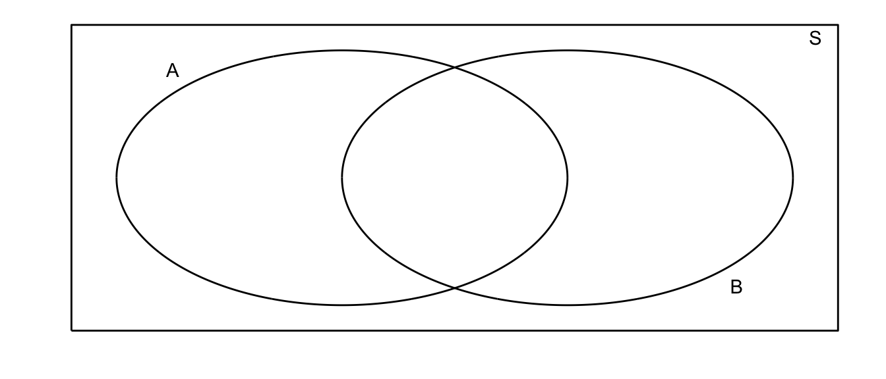
For example, suppose that my random experiment is rolling a fair 6-sided die once. The possible outcomes are \(S=\{1,2,3,4,5,6\}\). Suppose I then define events \(A=\) roll is odd and \(B=\) roll is 5 or greater. In this case our picture is:
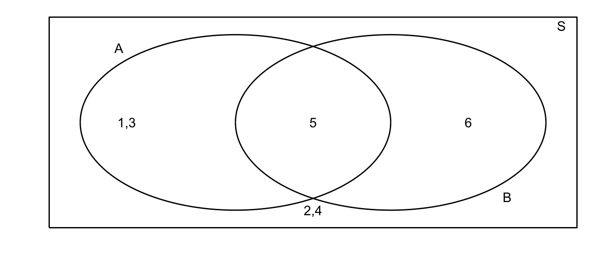
All of our possible events are present, and distributed among our possible events.
2.1.1 Composition of events
I am often interested in discussing the composition of two events and we give the common set operations below.
- Union: Denote the event that either \(A\) or \(B\) occurs as \(A\cup B\).
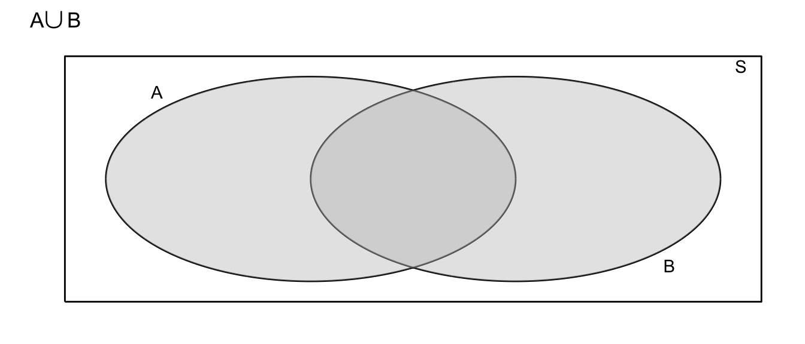
- Denote the event that both \(A\) and \(B\) occur as \(A\cap B\)
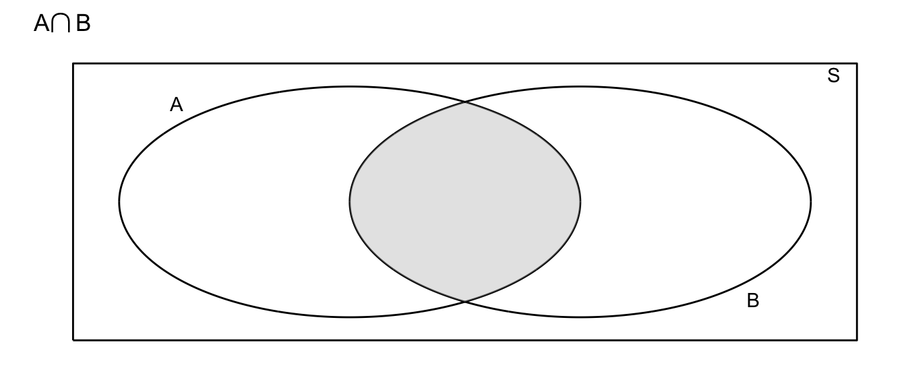
- Denote the event that \(A\) does not occur as \(\bar{A}\) or \(A^{C}\) (different people use different notations)
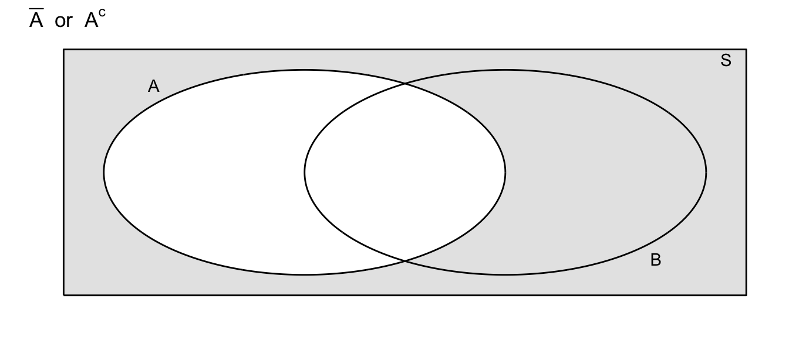
Definition 1. Two events \(A\) and \(B\) are said to be mutually exclusive (or disjoint) if the occurrence of one event precludes the occurrence of the other. For example, on a single roll of a die, a two and a five cannot both come up. For a second example, define \(A\) to be the event that the die is even, and \(B\) to be the event that the die comes up as a \(5\).
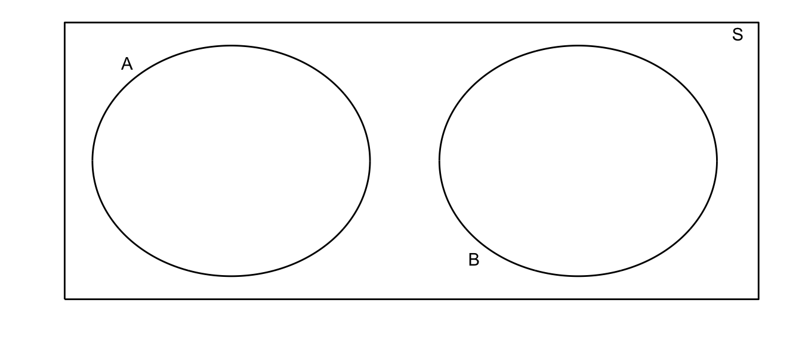
2.2 Probability Rules
2.2.1 Simple Rules
We now take our Venn diagrams and use them to understand the rules of probability. The underlying idea that we will use is the the probability of an event is the area in the Venn diagram.
Definition 2. Probability is the proportion of times an event occurs in many repeated trials of a random phenomenon. In other words, probability is the long-term relative frequency.
Fact. For any event \(A\) the probability of the event \(P(A)\) satisfies \(0\le P(A) \le 1\) because proportions always lie in \([0,1]\).
Because \(S\) is the set of all events that might occur, the area of our bounding rectangle will be \(1\) and the probability of event \(A\) occurring will be represented by the area in the circle \(A\).
Fact. If two events are mutually exclusive, then \(P(A\cup B)=P(A)+P(B)\)
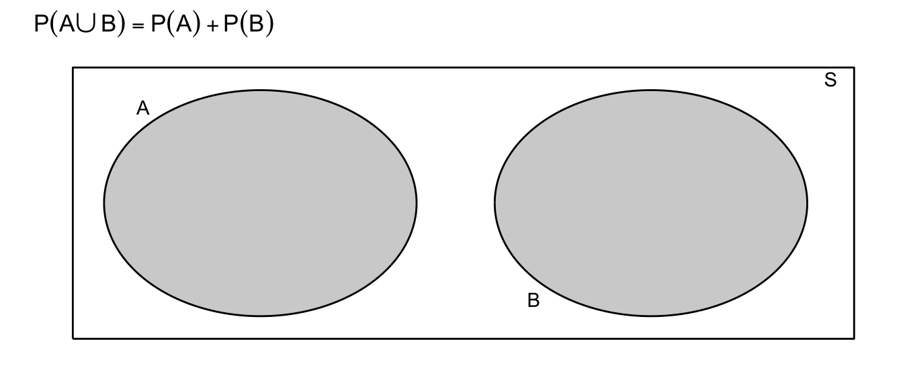
Example. Let \(R\) be the sum of two different colored dice. Suppose we are interested in \(P(R \le 4)\). Notice that the pair of dice can fall 36 different ways (6 ways for the first die and six for the second results in 6x6 possible outcomes, and each way has equal probability \(1/36\). Because the dice cannot simultaneously sum to \(2\) and to \(3\), we could write \[\begin{aligned} P(R \le 4 ) &= P(R=2)+P(R=3)+P(R=4) \\ &= P(\left\{ 1,1\right\} )+P(\left\{ 1,2\right\} \mathrm{\textrm{ or }}\left\{ 2,1\right\} )+P(\{1,3\}\textrm{ or }\{2,2\}\textrm{ or }\{3,1\}) \\ &= \frac{1}{36}+\frac{2}{36}+\frac{3}{36} \\ &= \frac{6}{36} \\ &= \frac{1}{6} \end{aligned}\]
Fact. \(P(A)+P(\bar{A})=1\)
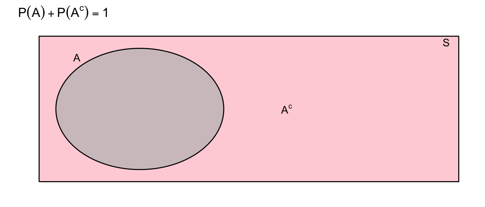
The above statement is true because the probability of whole space \(S\) is one (remember \(S\) is all possible outcomes), then either we get an outcome in which \(A\) occurs or we get an outcome in which \(A\) does not occur.
Fact. \(P(A\cup B)=P(A)+P(B)-P(A\cap B)\)
The reason behind this fact is that if there is if \(A\) and \(B\) are not disjoint, then some area is added twice when I calculate \(P\left(A\right)+P\left(B\right)\). To account for this, I simply subtract off the area that was double counted.
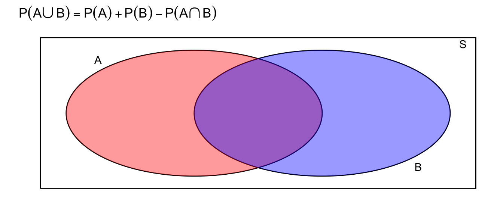
Fact 3. \(P(A)=P(A\cap B)+P(A\cap\bar{B})\)
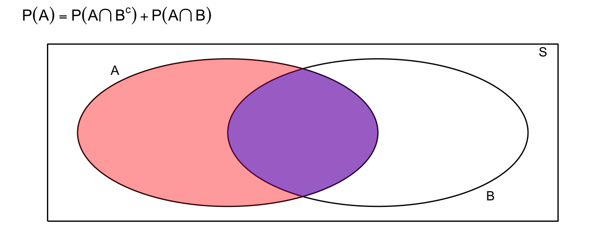
This identity is just breaking the event \(A\) into two disjoint pieces.
2.2.2 Conditional Probability
We are given the following data about insurance claims. Notice that the data is given as \(P(\;Category\;\cap\;PolicyType\;)\) which is apparent because the sum of all the elements in the table is \(100\%\)
| \(\,\) | Fire | Auto | Other |
|---|---|---|---|
| Fraudulant | 6% | 1% | 3% |
| non-Fraudulant | 14% | 29% | 47% |
Summing across the rows and columns, we can find the probabilities of for each category and policy type.
| \(\,\) | Fire | Auto | Other | \(\,\) |
|---|---|---|---|---|
| Fraudulant | 6% | 1% | 3% | 10% |
| non-Fraudulant | 14% | 29% | 47% | 90% |
| \(\,\) | 20% | 30% | 50% | 100% |
It is clear that fire claims are more likely fraudulent than auto or other claims. In fact, the proportion of fraudulent claims, given that the claim is against a fire policy is \[\begin{aligned} P(\textrm{ Fraud }|\textrm{ FirePolicy }) &= \frac{\textrm{proportion of claims that are fire policies and are fraudulent}}{\textrm{proportion of fire claims}} \\ &= \frac{6\%}{20\%}\\ & \\ &= 0.3 \end{aligned}\]
In general we define conditional probability (assuming \(P(B) \ne 0\)) as \[P(A|B)=\frac{P(A\cap B)}{P(B)}\] which can also be rearranged to show \[\begin{aligned} P(A\cap B) &= P(A\,|\,B)\,P(B) \\ &= P(B\,|\,A)\,P(A) \end{aligned}\] Because the order doesn’t matter and \(P\left(A\cap B\right)=P\left(B\cap A\right)\).
Using this rule, we might calculate the probability that a claim is an Auto policy given that it is not fraudulent. \[\begin{aligned} P\left(\,Auto\;|\;NotFraud\,\right) &= \frac{P\left(\,Auto\;\cap\;NotFraud\right)}{P\left(\,NotFraud\,\right)} \\ &= \frac{0.29}{0.9} \\ & \\ &= 0.3\bar{2} \end{aligned}\]
Definition 4. Two events \(A\) and \(B\) are said to be independent if \(P(A|B)=P(A)\;\;\textrm{and}\;\;P(B|A)=P(B)\).
What independence is saying that knowing the outcome of event \(A\) doesn’t give you any information about the outcome of event \(B\).
In simple random sampling, we assume that any two samples are independent. In cluster sampling, we assume that samples within a cluster are not independent, but clusters are independent of each other.
Fact 5. If \(A\) and \(B\) are independent events, then \(P(A\cap B) = P(A|B)P(B) = P(A)P(B)\).
Example 6. Suppose that we are interested in the relationship between the color and the type of car. Specifically I will divide the car world into convertibles and non-convertibles and the colors into red and non-red.
Suppose that convertibles make up just 10% of the domestic automobile market. This is to say \(P(\;Convertable\;)=0.10\). Of the non-convertibles, red is not unheard of but it isn’t common either. So suppose \(P(\;Red\;|\;NonConvertable\;)=0.15\). However red is an extremely popular color for convertibles so let \(P(\;Red\;|\;Convertable\;)=0.60\).
Given the above information, we can create the following table:
| \(\,\) | Convertible | Not Convertible | \(\,\) |
|---|---|---|---|
| Red | |||
| Not Red | |||
| \(\,\) | 10% | 90% | 100% |
We can fill in some of the table using our the definition of conditional probability. For example: \[\begin{aligned} P\left(Red\,\cap\,Convertable\right) &= P\left(Red\,|\,Convertable\right)\,P\left(Convertable\right) \\ &= 0.60*0.10 \\ &= 0.06 \end{aligned}\]
Lets think about what this conditional probability means. Of the \(90\%\) of cars that are not convertibles, \(15\%\) those non-convertibles are red and therefore the proportion of cars that are red non-convertibles is \(0.90*0.15=0.135\). Of the \(10\%\) of cars that are convertibles, \(60\%\) of those are red and therefore proportion of cars that are red convertibles is \(0.10*0.60=0.06\). Thus the total percentage of red cars is actually \[\begin{aligned}P\left(\,Red\,\right) &= P\left(\;Red\;\cap\;Convertible\;\right)+P\left(\,Red\,\cap\,NonConvertible\,\right)\\ &= P\left(\,Red\,|\,Convertable\,\right)P\left(\,Convertible\,\right)+P\left(\,Red\,|\,NonConvertible\,\right)P\left(\,NonConvertible\,\right)\\ &= 0.60*0.10+0.15*0.90\\ &= 0.06+0.135\\ &= 0.195 \end{aligned}\] So when I ask for \(P(\;red\;|\;convertable\;)\), I am narrowing my space of cars to consider only convertibles. While there percentage of cars that are red and convertible is just 6% of all cars, when I restrict myself to convertibles, we see that the percentage of this smaller set of cars that are red is 60%.
Notice that because \(P\left(Red\right)=0.195\ne0.60=P\left(Red\,|\,Convertable\right)\) then the events \(Red\) and \(Convertable\) are not independent.
2.2.3 Summary of Probability Rules
\[0 \le P\left(A\right) \le 1\]
\[P\left(A\right)+P\left(\bar{A}\right)=1\] \[P\left(A\cup B\right) = P\left(A\right)+P\left(B\right)-P\left(A\cap B\right)\] \[P\left(A\cap B\right) = \begin{cases} P\left(A\,|\,B\right)P\left(B\right)\\ P\left(B\,|\,A\right)P\left(A\right)\\ P(A)P(B)\;\; & \textrm{ if A,B are independent} \end{cases}\]
\[P\left(A\,|\,B\right) = \frac{P\left(A\cap B\right)}{P\left(B\right)}\]
2.3 Discrete Random Variables
The different types of probability distributions (and therefore your analysis method) can be divided into two general classes:
Continuous Random Variables - the variable takes on numerical values and could, in principle, take any of an uncountable number of values. In practical terms, if fractions or decimal points in the number make sense, it is usually continuous.
Discrete Random Variables - the variable takes on one of small set of values (or only a countable number of outcomes). In practical terms, if fractions or decimals points don’t make sense, it is usually discrete.
Examples:
- Presence or Absence of wolves in a State?
- Number of Speeding Tickets received?
- Tree girth (in cm)?
- Photosynthesis rate?
2.3.1 Introduction to Discrete Random Variables
The following facts hold for discrete random variables:
- The probability associated with every value lies between 0 and 1
- The sum of all probabilities for all values is equal to 1
- Probabilities for discrete RVs are additive. i.e., \(P(3\textrm{ or }4)=P(3)+P(4)\)
2.3.1.1 Expected Value
Example: Consider the discrete random variable \(S\), the sum of two fair dice.
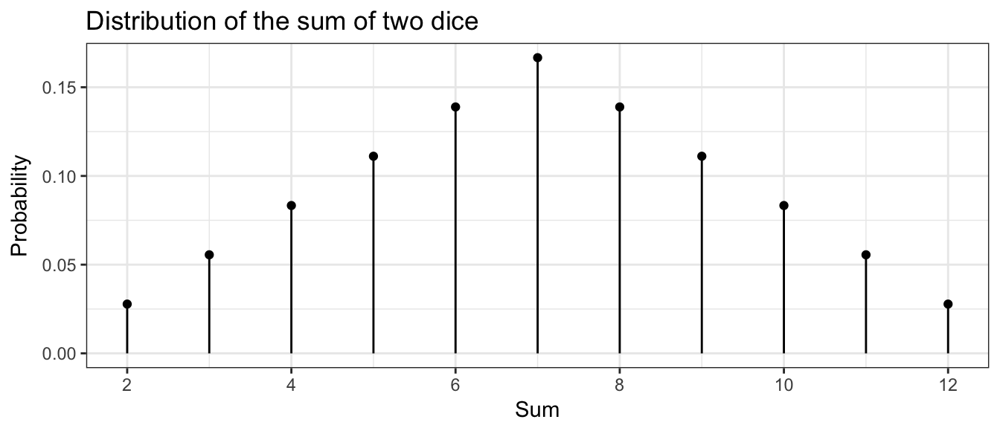
We often want to ask ‘What is expected value of this distribution?’ You might think about taking a really, really large number of samples from this distribution and then taking the mean of that really really big sample. We define the expected value (often denoted by \(\mu\)) as a weighted average of the possible values and the weights are the proportions with which those values occur. \[\mu=E[S] = \sum_{\textrm{possible }s}\;s\cdot P\left(S=s\right)\] In this case, we have that \[\begin{aligned} \mu = E[S] &= \sum_{s=2}^{12}s\cdot P(S=s) \\ &= 2\cdot P\left(S=2\right)+3\cdot P\left(S=3\right)+\dots+11\cdot P\left(S=11\right)+12\cdot P\left(S=12\right) \\ &= 2\left(\frac{1}{36}\right)+3\left(\frac{2}{36}\right)+\dots+11\left(\frac{2}{36}\right)+12\left(\frac{1}{36}\right) \\ &= 7 \end{aligned}\]
2.3.1.2 Variance
Similarly we could define the variance of \(S\) (which we often denote \(\sigma^{2}\)) as a weighted average of the squared-deviations that could occur. \[ \sigma^{2}=V[S] = \sum_{\textrm{possible }s}\; (s-\mu)^2 \cdot P\left(S=s\right)\] which in this example can be calculated as \[\begin{aligned} \sigma^{2}=V[S] &= \sum_{s=2}^{12}\left(s-\mu\right)^{2}P(S=s) \\ &= (2-7)^{2}\left(\frac{1}{36}\right)+(3-7)^{2}\left(\frac{2}{36}\right)+\dots+(12-7)^{2}\left(\frac{1}{36}\right) \\ &= \frac{35}{6}=5.8\bar{3} \end{aligned}\]
We could interpret the expectation as the sample mean of an infinitely large sample, and the variance as the sample variance of the same infinitely large sample. These are two very important numbers that describe the distribution.
Example 7. My wife is a massage therapist and over the last year, the number of clients she sees per work day (denoted Y) varied according the following table:
| Number of Clients | 0 | 1 | 2 | 3 | 4 |
|---|---|---|---|---|---|
| Frequency/Probability | 0.30 | 0.35 | 0.20 | 0.10 | 0.05 |
distr <- data.frame( clients = c( 0, 1, 2, 3, 4 ), # two columns
probability = c(0.3, 0.35, 0.20, 0.10, 0.05 ) ) #
ggplot(distr, aes(x=clients)) + # graph with clients as the x-axis
geom_point(aes(y=probability)) + # where the dots go
geom_linerange(aes(ymax=probability, ymin=0)) + # the vertical lines
theme_bw() # set background color...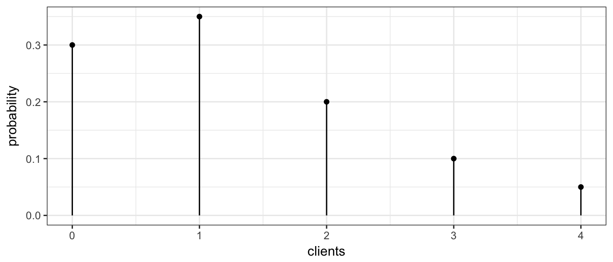
Because this is the long term relative frequency of the number of clients (over 200 working days!), it is appropriate to interpret these frequencies as probabilities. This table and graph is often called a probability mass function (pmf) because it lists how the probability is spread across the possible values of the random variable. We might next ask ourselves what is the average number of clients per day? It looks like it ought to be between 1 and 2 clients per day.
\[\begin{aligned} E\left(Y\right) &= \sum_{\textrm{possible }y}y\,P\left(Y=y\right) \\ &= \sum_{y=0}^{4}y\,P\left(Y=y\right) \\ &= 0\,P\left(Y=0\right)+1\,P\left(Y=1\right)+2\,P\left(Y=2\right)+3\,P\left(Y=3\right)+4\,P\left(Y=4\right) \\ &= 0\left(0.3\right)+1\left(0.35\right)+2\left(0.20\right)+3\left(0.10\right)+4\left(0.05\right) \\ &= 1.25 \end{aligned}\]
Notice that this number is not an integer and therefore is not a value that \(Y\) could actually take on. You might be tempted to therefore round it to the nearest integer. That would be wrong. The rational is that if we wanted to estimate the number of clients she has per month (and thus her income), we would have a worse estimate if we used the rounded number.
Another example of a case where rounding would be inappropriate is in gambling situations where the amount won or lost per hand isn’t particularly important but the average amount won or lost over hundreds or thousands of plays is what matters. A Roulette wheel has 18 red and 18 black slots along with 2 green. If you bet $1 on red, you could either win a dollar or lose a dollar. However, because the probabilities are
| Win ( + $1 ) | Lose (- $1) | |
|---|---|---|
| Probability | \(\frac{18}{38}\) | \(\frac{20}{38}\) |
then the persons expected winnings per play are:
\[ \begin{aligned}E[W] = \sum_{\textrm{possible }w}w\,P\left(W=w\right) = 1 \left(\frac{18}{38} \right) + -1 \left( \frac{20}{38} \right) = -0.0526 \end{aligned}\]
So for every Black/Red bet, the player should expect to lose 5.2 cents. While this number is small, it is enough to make the casino millions of dollars over the long run.
Returning to the massage therapy example, assuming that successive days are independent (which might be a bad assumption) what is the probability she has two days in a row with no clients? \[\begin{aligned}P\left(\textrm{0 on day1 }and\textrm{ 0 on day2}\right) &= P\left(\textrm{0 on day 1}\right)P\left(\textrm{0 on day 2}\right) \\ &= \left(0.3\right)\left(0.3\right) \\ &= 0.09 \end{aligned}\]
What is the variance of this distribution? \[\begin{aligned}V\left(Y\right) &= \sum_{\textrm{possible y}}\,\left(y-\mu\right)^{2}\,P\left(Y=y\right) \\ &= \sum_{y=0}^{4}\,\left(y-\mu\right)^{2}P\left(Y=y\right) \\ &= \left(0-1.25\right)^{2}\left(0.3\right)+\left(1-1.25\right)^{2}\left(0.35\right)+\left(2-1.25\right)^{2}\left(0.20\right)+\left(3-1.25\right)^{2}\left(0.10\right)+\left(4-1.25\right)^{2}\left(0.05\right) \\ &= 1.2875 \end{aligned}\]
Note on Notation: There is a difference between the upper and lower case letters we have been using to denote a random variable. In general, we let the upper case denote the random variable and the lower case as a value that the the variable could possibly take on. So in the massage example, the number of clients seen per day \(Y\) could take on values \(y=0,1,2,3,\) or \(4\).
2.4 Common Discrete Distributions
2.4.1 Binomial Distribution
Example: Suppose we are trapping small mammals in the desert and we spread out three traps. Assume that the traps are far enough apart that having one being filled doesn’t affect the probability of the others being filled and that all three traps have the same probability of being filled in an evening. Denote the event that a trap is filled with a critter as \(C_{i}\) and denote the event that the trap is empty as \(E_{i}\). Denote the probability that a trap is filled by \(\pi=0.8\). (This sort of random variable is often referred to as a Bernoulli RV.)
The possible outcomes are
| Outcome | \(\,\) |
|---|---|
| \(E_1, E_2, E_3\) | \(\,\) |
| \(C_1, E_2, E_3\) | \(\,\) |
| \(E_1, C_2, E_3\) | \(\,\) |
| \(E_1, E_2, C_3\) | \(\,\) |
| \(C_1, C_2, E_3\) | \(\,\) |
| \(C_1, E_2, C_3\) | \(\,\) |
| \(E_1, C_2, C_3\) | \(\,\) |
| \(C_1, C_2, C_3\) | \(\,\) |
Because these are far apart enough in space that the outcome of Trap1 is independent of Trap2 and Trap3, then \[P(E_{1}\cap C_{2}\cap E_{3}) = P(E_{1})P(C_{2})P(E_{3}) = (1-0.8)0.8(1-0.8) = 0.032\] Notice how important the assumption of independence is!!! Similarly we could calculate the probabilities for the rest of the table.
| Outcome | Probability | \(S\) Outcome | Probability |
|---|---|---|---|
| \(E_1, E_2, E_3\) | 0.008 | \(S=0\) | 0.008 |
| ——————- | ————— | ————- | ————— |
| \(C_1, E_2, E_3\) | 0.032 | ||
| \(E_1, C_2, E_3\) | 0.032 | \(S=1\) | \(3(0.032) = 0.096\) |
| \(E_1, E_2, C_3\) | 0.032 | ||
| ——————- | ————— | ————- | ————— |
| \(C_1, C_2, E_3\) | 0.128 | ||
| \(C_1, E_2, C_3\) | 0.128 | \(S=2\) | \(3(0.128) = 0.384\) |
| \(E_1, C_2, C_3\) | 0.128 | ||
| ——————- | ————— | ————- | ————— |
| \(C_1, C_2, C_3\) | 0.512 | \(S=3\) | \(0.512\) |
Next we are interested in the random variable \(S\), the number of traps that were filled:
| \(S\) Outcome | Probability |
|---|---|
| \(S=0\) | \(0.008\) |
| \(S=1\) | \(0.096\) |
| \(S=2\) | \(0.384\) |
| \(S=3\) | \(0.512\) |
\(S\) is an example of a Binomial Random Variable. A binomial experiment is one that:
- Experiment consists of \(n\) identical trials.
- Each trial results in one of two outcomes (Heads/Tails, presence/absence). One will be labeled a success and the other a failure.
- The probability of success on a single trial is equal to \(\pi\) and remains the same from trial to trial.
- The trials are independent (this is implied from property 3).
- The random variable \(Y\) is the number of successes observed during \(n\) trials.
Recall that the probability mass function (pmf) describes how the probability is spread across the possible outcomes, and in this case, I can describe this via a nice formula. The pmf of a a binomial random variable \(X\) taken from \(n\) trials each with probability of success \(\pi\) is
\[P(X=x)=\underbrace{\frac{n!}{x!(n-x)!}}_{orderings}\;\underbrace{\pi^{x}}_{y\,successes}\;\underbrace{(1-\pi)^{n-x}}_{n-y\,failures}\]
where we define \(n!=n(n-1)\dots(2)(1)\) and further define \(0!=1\). Often the ordering term is written more compactly as \[{n \choose x}=\frac{n!}{x!\left(n-x\right)!}\].
For our small mammal example we can create a graph that shows the binomial distribution with the following R code:
dist <- data.frame( x=0:3 ) %>%
mutate(probability = dbinom(x, size=3, prob=0.8))
ggplot(dist, aes(x=x)) +
geom_point(aes(y=probability)) +
geom_linerange(aes(ymax=probability, ymin=0)) +
ggtitle('Binomial distribution: n=3, p=0.8') +
theme_bw()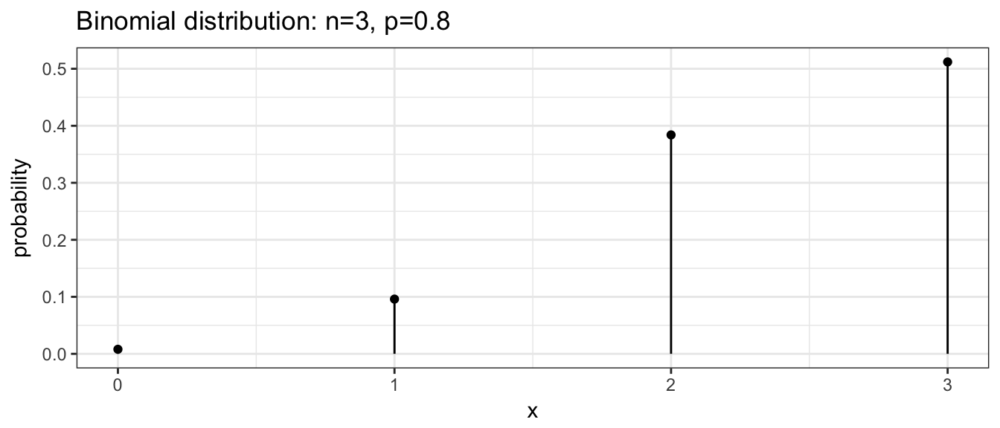
To calculate the height of any of these bars, we can evaluate the pmf at the desired point. For example, to calculate the probability the number of full traps is 2, we calculate the following
\[\begin{aligned} P(X=2) &= {3 \choose 2}\left(0.8\right)^{2}\left(1-0.8\right)^{3-2} \\ &= \frac{3!}{2!(3-2)!}(0.8)^{2}(0.2)^{3-2} \\ &= \frac{3\cdot2\cdot1}{(2\cdot1)1}\;(0.8)^{2}(0.2) \\ &= 3(0.128) \\ &= 0.384 \end{aligned}\]
You can use R to calculate these probabilities. In general, for any distribution, the “d-function” gives the distribution function (pmf or pdf). So to get R to do the preceding calculation we use:
# If X ~ Binomial(n=3, pi=0.8)
# Then P( X = 2 | n=3, pi=0.8 ) =
dbinom(2, size=3, prob=0.8)## [1] 0.384The expectation of this distribution can be shown to be \[\begin{aligned}E[X] &= \sum_{x=0}^{n}x\,P(X=x) \\ &= \sum_{x=0}^{n}x\;\frac{n!}{x!\left(n-x\right)!}\pi^{x}\left(1-\pi\right)^{n-x}\\ &= \vdots \\ &= n\pi \end{aligned}\]
and the variance can be similarly calculated \[\begin{aligned} V[X] &= \sum_{x=0}^{n}\left(x-E\left[X\right]\right)^{2}\,P\left(X=x|n,\pi\right) \\ &= \sum_{x=0}^{n}\left(x-E\left[X\right]\right)^{2}\;\frac{n!}{x!\left(n-x\right)!}\pi^{x}\left(1-\pi\right)^{n-x} \\ &= \vdots \\ &= n\pi(1-\pi) \end{aligned}\]
Example 8. Suppose a bird survey only captures the presence or absence of a particular bird (say the mountain chickadee). Assuming the true presence proportion at national forest sites around Flagstaff \[\pi=0.1\], then for \(n=20\) randomly chosen sites, the number of sites in which the bird was observed would have the distribution
dist <- data.frame( x = 0:20 ) %>%
mutate(probability = dbinom(x, size=20, prob=0.1))
ggplot(dist, aes(x=x)) +
geom_point(aes(y=probability)) +
geom_linerange(aes(ymax=probability, ymin=0)) +
ggtitle('Binomial distribution: n=20, p=0.1') +
xlab('Number of Sites Occupied') +
theme_bw()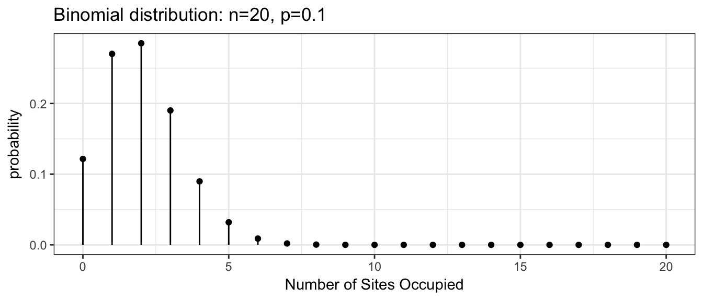
Often we are interested in questions such as \(P(X\le2)\) which is the probability that we see 2 or fewer of the sites being occupied by mountain chickadee. These calculations can be tedious to calculate by hand but R will calculate these cumulative distribution function values for you using the “p-function”. This cumulative distribution function gives the sum of all values up to and including the number given.
# P(X=0) + P(X=1) + P(X=2)
sum <- dbinom(0, size=20, prob=0.1) +
dbinom(1, size=20, prob=0.1) +
dbinom(2, size=20, prob=0.1)
sum## [1] 0.6769268# P(X <= 2)
pbinom(2, size=20, prob=0.1)## [1] 0.6769268In general we will be interested in asking four different questions about a distribution.
- What is the height of the probability mass function (or probability density function). For discrete variable \(Y\) this is \(P\left(Y=y\right)\) for whatever value of \(y\) we want. In R, this will be the
d-function. - What is the probability of observing a value less than or equal to \(y\)? In other words, to calculate \(P\left(Y\le y\right)\). In R, this will be the
p-function. - What is a particular quantile of a distribution? For example, what value separates the lower \(25\%\) from the upper \(75\%\)? In R, this will be the
q-function. - Generate a random sample of values from a specified distribution. In R, this will be the
r-function.
2.4.2 Poisson Distribution
A commonly used distribution for count data is the Poisson.
- Number of customers arriving over a 5 minute interval
- Number of birds observed during a 10 minute listening period
- Number of prairie dog towns per 1000 hectares
- Number of alga clumps per cubic meter of lake water
For a RV is a Poisson RV if the following conditions apply:
- Two or more events do not occur at precisely the same time or in the same space
- The occurrence of an event in a given period of time or region of space is independent of the occurrence of the event in a non overlapping period or region.
- The expected number of events during one period or region, \(\lambda\), is the same in all periods or regions of the same size.
Assuming that these conditions hold for some count variable \(Y\), the the probability mass function is given by \[P(Y=y)=\frac{\lambda^{y}e^{-\lambda}}{y!}\] where \(\lambda\) is the expected number of events over 1 unit of time or space and \(e\) is the constant \(2.718281828\dots\).
\[E[Y] = \lambda\] \[Var[Y] = \lambda\]
Example 9. Suppose we are interested in the population size of small mammals in a region. Let \(Y\) be the number of small mammals caught in a large trap (multiple traps in the same location?) in a 12 hour period. Finally, suppose that \(Y\sim Poi(\lambda=2.3)\). What is the probability of finding exactly 4 critters in our trap? \[P(Y=4) = \frac{2.3^{4}\,e^{-2.3}}{4!} = 0.1169\] What about the probability of finding at most 4? \[\begin{aligned} P(Y\le4) &= P(Y=0)+P(Y=1)+P(Y=2)+P(Y=3)+P(Y=4) \\ &= 0.1003+0.2306+0.2652+0.2033+0.1169 \\ &= 0.9163 \end{aligned}\]
What about the probability of finding 5 or more? \[P(Y\ge5) = 1-P(Y\le4) = 1-0.9163 = 0.0837\]
These calculations can be done using the distribution function (d-function) for the Poisson and the cumulative distribution function (p-function).
dist <- data.frame( NumCaught = 0:10 ) %>%
mutate( probability = dpois( NumCaught, lambda=2.3 ) )
ggplot(dist, aes(x=NumCaught)) +
geom_point( aes(y=probability) ) +
geom_linerange(aes( ymax=probability, ymin=0)) +
ggtitle(expression(paste('Poisson Distribution with ', lambda == 2.3))) +
labs(x='Number Caught') +
theme_bw() 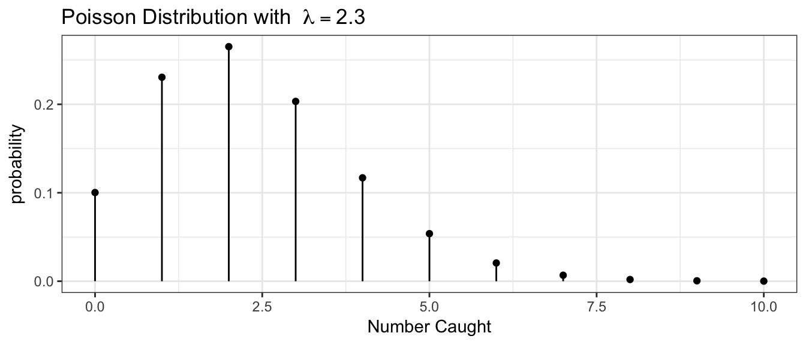
# P( Y = 4)
dpois(4, lambda=2.3)## [1] 0.1169022# P( Y <= 4)
ppois(4, lambda=2.3)## [1] 0.9162493# 1-P(Y <= 4) == P( Y > 4) == P( Y >= 5)
1-ppois(4, 2.3)## [1] 0.083750722.5 Continuous Random Variables
Continuous random variables can take on an (uncountably) infinite number of values, and this results in a few obnoxious mathematical differences between how we handle continuous and discrete random variables. In particular, the probability that a continuous random variable \(X\) will take on a particular value will be zero, so we will be interested in finding the probability that the random variable is in some interval instead. Wherever we had a summation, \(\sum\), we will instead have an integral, but because many students haven’t had calculus, we will resort to using R or tables of calculated values.
2.5.1 Uniform(0,1) Distribution
Suppose you wish to draw a random number number between 0 and 1 and any two intervals of equal size should have the same probability of the value being in them. This random variable is said to have a Uniform(0,1) distribution.
Because there are an infinite number of rational numbers between 0 and 1, the probability of any particular number being selected is \(1/\infty=0\). But even though each number has 0 probability of being selected, some number must end up being selected. Because of this conundrum, probability theory doesn’t look at the probability of a single number, but rather focuses on a region of numbers.
To make this distinction, we will define the distribution using a probability density function (pdf) instead of the probability mass function. In the discrete case, we had to constrain the probability mass function to sum to 1. In the continuous case, we have to constrain the probability density function to integrate to 1.
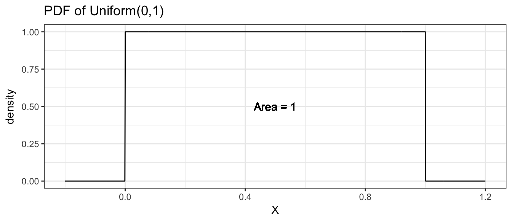
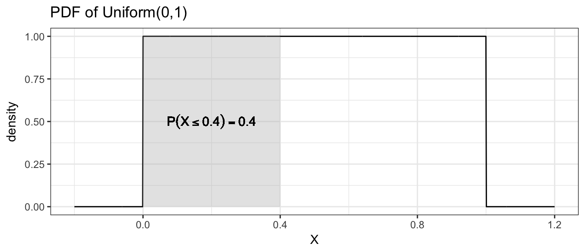
Finding the area under the curve of a particular density function \(f(x)\) usually requires the use of calculus, but since this isn’t a calculus course, we will resort to using R or tables of calculated values.
2.5.2 Exponential Distribution
The exponential distribution is the continuous analog of the Poisson distribution and is often used to model the time between occurrence of successive events. Perhaps we are modeling time between transmissions on a network, or the time between feeding events or prey capture. If the random variable \(X\) has an Exponential distribution, its probability density function is \[f(x)=\begin{cases} \lambda e^{-\lambda x} & x\ge0\;\textrm{ and }\;\lambda>0\\ 0 & \textrm{otherwise} \end{cases}\]
Analogous to the discrete distributions, we can define the Expectation and Variance of these distributions by replacing the summation with an integral \[\mu = E[X] = \int_{0}^{\infty}x\,f(x)\,dx = \dots = \frac{1}{\lambda} \] \[\sigma^2 = Var[X] = \int_{0}^{\infty}\left(x-\mu\right)^{2}\,f\left(x\right)\,dx = \dots = \frac{1}{\lambda^{2}}\]
Because the exponential distribution is defined by the rate of occurrence of an event, increasing that rate decreases the time between events. Furthermore because the rate of occurrence cannot be negative, we restrict \(\lambda>0\).
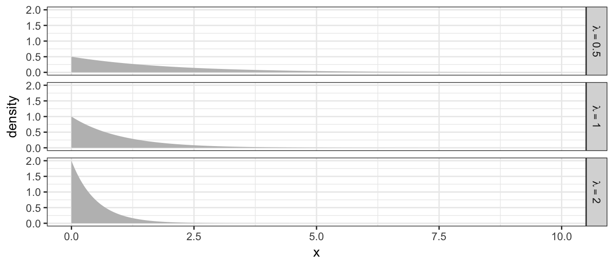
Example 10. Suppose the time between insect captures \(X\) during a summer evening for a species of bat follows a exponential distribution with capture rate of \(\lambda=2\) insects per minute and therefore the expected waiting time between captures is \(1/\lambda=1/2\) minute. Suppose that we are interested in the probability that it takes a bat more than 1 minute to capture its next insect.
\[P(X>1)=\]
data <- data.frame(x=seq(0,5,length=1000), lambda = 2) %>%
mutate(y=dexp(x, rate = lambda),
grp = ifelse( x > 1, '> 1', '<= 1'))
ggplot(data, aes(x=x, y=y, fill=grp)) +
geom_area() +
labs(y='density') +
theme_bw()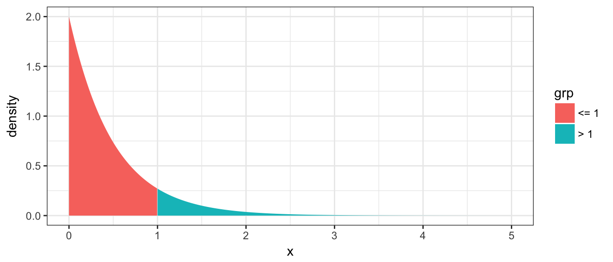
We now must resort to calculus to find this area. Or use tables of pre-calculated values. Or use R, remembering that p-functions give the area under the curve to the left of the given value.
# P(X > 1) == 1 - P(X <= 1)
1 - pexp(1, rate=2)## [1] 0.13533532.5.3 Normal Distribution
Undoubtedly the most important distribution in statistics is the normal distribution. If my RV \(X\) is normally distributed with mean \(\mu\) and standard deviation \(\sigma\), its probability density function is given by \[f(x)=\frac{1}{\sqrt{2\pi}\sigma}\exp\left[\frac{-(x-\mu)^{2}}{2\sigma^{2}}\right]\] where \(\exp[y]\) is the exponential function \(e^{y}\). We could slightly rearrange the function to
\[f(x)=\frac{1}{\sqrt{2\pi}\sigma}\exp\left[-\frac{1}{2}\left(\frac{x-\mu}{\sigma}\right)^{2}\right]\]
and see this distribution is defined by its expectation \(E[X]=\mu\) and its variance \(Var[X]=\sigma^{2}\). Notice I could define it using the standard deviation \(\sigma\), and different software packages will expect it to be defined by one or the other. R defines the normal distribution using the standard deviation.
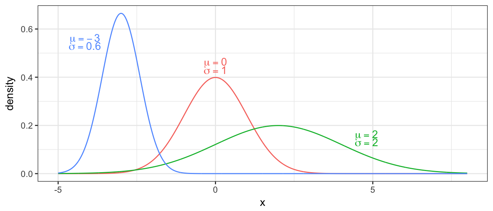
Example 11. It is known that the heights of adult males in the US is approximately normal with a mean of 5 feet 10 inches (\(\mu=70\) inches) and a standard deviation of \(\sigma=3\) inches. Your instructor is a mere 5 feet 4 inches (64 inches). What proportion of the population is shorter than your professor?
distr <- data.frame(x=seq(57, 82, length=1000)) %>%
mutate( density = dnorm(x, mean=70, sd=3),
group = ifelse(x<=64, 'Shorter','Taller') )
ggplot(distr, aes(x=x, y=density, fill=group)) +
geom_line() +
geom_area() +
theme_bw()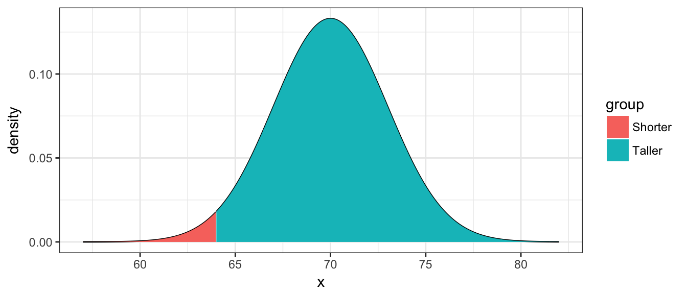
Using R you can easily find this
pnorm(64, mean=70, sd=3)## [1] 0.022750132.5.4 Standardizing
Before we had computers that could calculate these probabilities for any normal distribution, it was important to know how to convert a probability statement from an arbitrary \(N\left(\mu,\sigma^{2}\right)\) distribution to a question about a Standard Normal distribution, which is a normal distribution with mean \(\mu=0\) and standard deviation \(\sigma=1\). If we have \[X\sim N\left(\mu,\sigma^{2}\right)\] then \[Z=\frac{X-\mu}{\sigma}\sim N\left(0,1\right)\]
You might remember doing something similar in an undergraduate statistics course in order to use a table to look up some probability. From the height example, we calculate \[\begin{aligned}z &= \frac{64-70}{3} \\ &= \frac{-6}{3} \\ &= -2 \end{aligned}\] Note that this calculation shows that he is \(-2\) standard deviations from the mean. Next we look at a table for \(z=-2.00\). To do this we go down to the \(-2.0\) row and over to the \(.00\) column and find \(0.0228\). Only slightly over 2% of the adult male population is shorter!
How tall must a person be to be taller than \(80\%\) of the rest of the adult male population? To answer that we must use the table in reverse and look for the \(0.8\) value. We find the closest value possible \((0.7995)\) and the \(z\) value associated with it is \(z=0.84\). Next we solve the standardizing equation for \(x\) \[\begin{aligned} z &= \frac{x-\mu}{\sigma} \\ 0.84 &= \frac{x-70}{3} \\ x &= 3(0.84)+70 \\ &= 72.49\;\textrm{inches} \end{aligned}\]
Alternatively we could use the quantile function for the normal distribution (q-function) in R and avoid the imprecision of using a table.
qnorm(.8, mean=0, sd=1)## [1] 0.8416212Empirical Rule - It is from the normal distribution that the empirical rule from the previous chapter is derived. If \(X\sim N(\mu,\sigma^{2})\) then \[\begin{aligned} P(\mu-\sigma\le X\le\mu+\sigma) &= P(-1 \le Z \le 1) \\ &= P(Z \le 1) - P(Z \le -1) \\ &\approx 0.8413-0.1587 \\ &= 0.6826 \end{aligned}\]
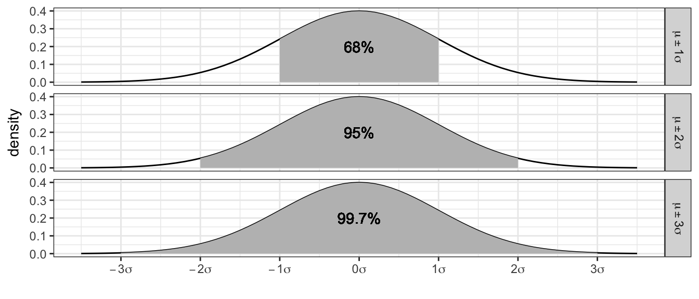
1.6 R Comments
There will be a variety of distributions we’ll be interested in and R refers to them using the following abbreviations
| Distribution | Stem | Parameters | Parameter Interpretation |
|---|---|---|---|
Binomial |
|
|
Number of Trials, Probability of Success (per Trial) |
Exponential |
|
|
Mean of the distribution |
Normal |
|
|
Center of the distribution, Standard deviation |
Uniform |
|
|
Minimum and Maximum of the distribution |
All the probability distributions available in R are accessed in exactly the same way, using a d-function, p-function, q-function, and r-function.
| Function | Result |
|---|---|
|
The height of the probability distribution/density at \(x\) |
|
\(P\left(X\le x\right)\) |
|
\(x\) such that \(P\left(X\le x\right) = q\) |
|
\(n\) random observations from the distribution |
The mosaic package has versions of the p and q -functions that also print a out nice picture of the probabilities that you ask for. These functions are named by just adding an ‘x’ at the beginning of the function. For example mosaic::xpnorm(-1).
2.6 Exercises
The population distribution of blood donors in the United States based on race/ethnicity and blood type as reported by the American Red Cross is given here:
Notice that the numbers given in the table sum to 100%, so the data presented are the probability of a particular ethnicity and blood type.\(\,\) O A B AB Total White
36%
32.2%
8.8%
3.2%
\(\,\)
Black
7%
2.9%
2.5%
0.5%
\(\,\)
Asian
1.7%
1.2%
1%
0.3%
\(\,\)
Other
1.5%
0.8%
0.3%
0.1%
\(\,\)
\(\,\)
\(\,\)
\(\,\)
\(\,\)
\(\,\)
100%
- Fill in the column and row totals.
- What is the probability that a randomly selected donor will be Asian and have Type O blood? That is to say, given a donor is randomly selected from the list of all donors, what is the probability that the selected donor will Asian with Type O?
- What is the probability that a randomly selected donor is white? That is to say, given a donor is randomly selected from the list of all donors, what is the probability that the selected donor is white?
- What is the probability that a randomly selected donor has Type A blood? That is to say, given a donor is selected from the list of all donors, what is the probability that the selected donor has Type A blood?
- What is the probability that a white donor will have Type A blood? That is to say, given a donor is randomly selected from the list of all the white donors, what is the probability that the selected donor has Type A blood? (Notice we already know the donor is white because we restricted ourselves to that subset!)
- Is blood type and ethnicity independent? Justify your response mathematically using your responses from the previous answers.
- For each of the following, mark if it is Continuous or Discrete.
- \(\underline{\hspace{1in}}\) Milliliters of tea drunk per day.
- \(\underline{\hspace{1in}}\) Different brands of soda drunk over the course of a year.
- \(\underline{\hspace{1in}}\) Number of days per week that you are on-campus for any amount of time.
- \(\underline{\hspace{1in}}\) Number of grizzly bears individuals genetically identified from a grid of hair traps in Glacier National Park.
- For each scenario, state whether the event should be modeled via a binomial or Poisson distribution.
- \(\underline{\hspace{1in}}\) Number of M&Ms I eat per hour while grading homework
- \(\underline{\hspace{1in}}\) The number of mornings in the coming 7 days that I change my son’s first diaper of the day.
- \(\underline{\hspace{1in}}\) The number of Manzanita bushes per 100 meters of trail.
- During a road bike race, there is always a chance a crash will occur. Suppose the probability that at least one crash will occur in any race I’m in is \(\pi=0.2\) and that races are independent.
- What is the probability that the next two races I’m in will both have crashes?
- What is the probability that neither of my next two races will have a crash?
- What is the probability that at least one of the next two races have a crash?
- My cats suffer from gastric distress due to eating house plants and the number of vomits per week that I have to clean up follows a Poisson distribution with rate \(\lambda=1.2\) pukes per week.
- What is the probability that I don’t have to clean up any vomits this coming week?
- What is the probability that I must clean up 1 or more vomits?
- If I wanted to measure this process with a rate per day, what rate should I use?
Suppose that the number of runners I see on a morning walk on the trails near my house has the following distribution (Notice I’ve never seen four or more runners on a morning walk):
y 0 1 2 3 4+ Probabilty 0.45 0.25 0.20 0.0 - What is the probability that I see 3 runners on a morning walk?
- What is the expected number of runners that I will encounter?
- What is the variance of the number of runners that I will encounter?
- If \(Z\sim N\left(\mu=0,\sigma^{2}=1\right)\), find the following probabilities:
- \(P(Z<1.58)=\)
- \(P(Z=1.58)=\)
- \(P(Z>-.27)=\)
- \(P(-1.97<Z<2.46)=\)
- Using the Standard Normal Table or the table functions in R, find \(z\) that makes the following statements true.
- \(P(Z<z)=.75\)
- \(P(Z>z)=.4\)
- The amount of dry kibble that I feed my cats each morning can be well approximated by a normal distribution with mean \(\mu=200\) grams and standard deviation \(\sigma=30\) grams.
- What is the probability that I fed my cats more than 250 grams of kibble this morning?
- From my cats’ perspective, more food is better. How much would I have to feed them for this morning to be among the top \(10\%\) of feedings?
3 Confidence Intervals via Bootstrapping
# Every chapter, we will load all the librarys we will use at the beginning
# of the chapter.
library(ggplot2) # graphing functions
library(dplyr) # data summary tools
# Set default behavior of ggplot2 graphs to be black/white theme
theme_set(theme_bw())3.1 Theory of Bootstrapping
Suppose that we had a population of interest and we wish to estimate the mean of that population (the population mean we’ll denote as \(\mu\)). We can’t observe every member of the population (which would be prohibitively expensive) so instead we take a random sample and from that sample calculate a sample mean (which we’ll denote \(\bar{x}\)). We believe that \(\bar{x}\) will be a good estimator of \(\mu\), but it will vary from sample to sample and won’t be exactly equal to \(\mu\).
Next suppose we wish to ask if a particular value for \(\mu\), say \(\mu_{0}\), is consistent with our observed data? We know that \(\bar{x}\) will vary from sample to sample, but we have no idea how much it will vary between samples. However, if we could understand how much \(\bar{x}\) varied sample to sample, we could answer the question. For example, suppose that \(\bar{x}=5\) and we know that \(\bar{x}\) varied about \(\pm2\) from sample to sample. Then I’d say that possible values of \(\mu_{0}\) in the interval \(3\) to \(7\) \(\left(5\pm2\right)\) are reasonable values for \(\mu\) and anything outside that interval is not reasonable.
Therefore, if we could take many, many repeated samples from the population and calculate our test statistic \(\bar{x}\) for each sample, we could rule out possible values of \(\mu\). Unfortunately we don’t have the time or money to repeatedly sample from the actual population, but we could sample from our best approximation to what the population is like.
Suppose we were to sample from a population of shapes, and we observed \(4/9\) of the sample were squares, \(3/9\) were circles, and a triangle and a diamond. Then our best guess of what the population that we sampled from was a population with \(4/9\) squares, \(3/9\) circles, and \(1/9\) of triangles and diamonds.
multiplot(sample.plot, population.plot, cols=2)## Loading required package: grid
Using this approximated population (which is just many many copies of our sample data), we can repeated sample \(\bar{x}^{*}\) values to create an estimate of the sampling distribution of \(\bar{x}\).
Because our approximate population is just an infinite number of copies of our sample data, then sampling from the approximate population is equivalent to sampling with replacement from our sample data. If I take \(n\) samples from \(n\) distinct objects with replacement, then the process can be thought of as mixing the \(n\) objects in a bowl and taking an object at random, noting which it is, replace it into the bowl, and then draw the next sample. Practically, this means some objects will be selected more than once and some will not be chosen at all. To sample our observed data with replacement, we’ll use the resample() function in the mosaic package. We see that some rows will be selected multiple times, and some will not be selected at all.
Testing.Data <- data.frame(
name=c('Alison','Brandon','Casey','Derek','Elise'))
Testing.Data## name
## 1 Alison
## 2 Brandon
## 3 Casey
## 4 Derek
## 5 Elise# Sample rows from the Testing Data (with replacement)
mosaic::resample(Testing.Data)## name orig.id
## 1 Alison 1
## 4 Derek 4
## 3 Casey 3
## 1.1 Alison 1
## 5 Elise 5Notice Alison has selected twice, while Brandon has not been selected at all.
The sampling from the estimated population via sampling from the observed data is called bootstrapping because we are making no distributional assumptions about where the data came from, and the idiom “Pulling yourself up by your bootstraps” seemed appropriate.
Example: Mercury Levels in Fish from Florida Lakes
A data set provided by the Lock\(^{5}\) introductory statistics textbook looks at the mercury levels in fish harvested from lakes in Florida. There are approximately 7,700 lakes in Florida that are larger than 10 acres. As part of a study to assess the average mercury contamination in these lakes, a random sample of \(n=53\) lakes, an unspecified number of fish were harvested and the average mercury level (in ppm) was calculated for fish in each lake. The goal of the study was to assess if the average mercury concentration was greater than the 1969 EPA “legally actionable level” of 0.5 ppm.
# read the Lakes data set
Lakes <- read.csv('http://www.lock5stat.com/datasets/FloridaLakes.csv')
# make a nice picture... dot plots are very similar to histograms
# but in this case, my y-axis doen't make any sense.
ggplot(Lakes, aes(x=AvgMercury)) +
geom_dotplot()## `stat_bindot()` using `bins = 30`. Pick better value with `binwidth`.
We can calculate mean average mercury level for the \(n=53\) lakes
Lakes %>% summarise(xbar = mean( AvgMercury ))## xbar
## 1 0.5271698The sample mean is greater than \(0.5\) but not by too much. Is a true population mean concentration \(\mu_{Hg}\) that is \(0.5\) or less incompatible with our observed data? Is our data sufficient evidence to conclude that the average mercury content is greater than \(0.5\)? Perhaps the true average mercury content is less than (or equal to) \(0.5\) and we just happened to get a random sample that with a mean greater than \(0.5\)?
The first step in answering these questions is to create an estimate of the sampling distribution of \(\bar{x}_{Hg}\). To do this, we will sample from the approximate population of lakes, which is just many many replicated copies of our sample data.
# create the Estimated Sampling Distribution of xbar
BootDist <- mosaic::do(10000) *
mosaic::resample(Lakes) %>%
summarise(xbar = mean(AvgMercury))
# what columns does the data frame "BootDist" have?
head(BootDist)## xbar
## 1 0.5111321
## 2 0.5043396
## 3 0.5252830
## 4 0.5362264
## 5 0.4992453
## 6 0.5960377# show a histogram of the estimated sampling distribution of xbar
ggplot(BootDist, aes(x=xbar)) +
geom_histogram() +
ggtitle('Estimated Sampling distribution of xbar' )
3.2 Quantile-based Confidence Intervals
In many cases we have seen, the sampling distribution of a statistic is centered on the parameter we are interested in estimating and is symmetric about that parameter. There are actually several ways to create a confidence interval from the estimated sampling distribution. The method presented here is called the “percentile” method and works when the sampling distribution is symmetric and the estimator we are using is unbiased. For example, we expect that the sample mean \(\bar{x}\) should be a good estimate of the population mean \(\mu\) and the sampling distribution of \(\bar{x}\) should look something like the following.

There are two points, (call them \(L\) and \(U\)) where for our given sample size and population we are sampling from, where we expect that \(95\%\) of the sample means to fall within. That is to say, \(L\) and \(U\) capture the middle \(95\%\) of the sampling distribution of \(\bar{x}\).

These sample means are randomly distributed about the population mean \(\mu\). Given our sample data and sample mean \(\bar{x}\), we can examine how our simulated values of \(\bar{x}^{*}\) vary about \(\bar{x}\). I expect that these simulated sample means \(\bar{x}^{*}\) should vary about \(\bar{x}\) in the same way that \(\bar{x}\) values vary around \(\mu\). Below are three estimated sampling distributions that we might obtain from three different samples and their associated sample means.

For each possible sample, we could consider creating the estimated sampling distribution of \(\bar{X}\) and calculating the \(L\) and \(U\) values that capture the middle \(95\%\) of the estimated sampling distribution. Below are twenty samples, where we’ve calculated this interval for each sample.

Most of these intervals contain the true parameter \(\mu\), that we are trying to estimate. In practice, I will only take one sample and therefore will only calculate one sample mean and one interval, but I want to recognize that the method I used to produce the interval (i.e. take a random sample, calculate the mean and then the interval) will result in intervals where only \(95\%\) of those intervals will contain the mean \(\mu\). Therefore, I will refer to the interval as a \(95\%\) confidence interval.
After the sample is taken and the interval is calculated, the numbers lower and upper bounds of the confidence interval are fixed. Because \(\mu\) is a constant value and the confidence interval is fixed, nothing is changing. To distinguish between a future random event and the fixed (but unknown) outcome of if I ended up with an interval that contains \(\mu\) and we use the term confidence interval instead of probability interval.
# create the Estimated Sampling Distribution of xbar
BootDist <- mosaic::do(10) *
mosaic::resample(Lakes) %>%
summarise(xbar=mean(AvgMercury))
# show a histogram of the estimated sampling distribution of xbar
ggplot(BootDist, aes(x=xbar, y=..density..)) +
geom_histogram() +
ggtitle('Estimated Sampling distribution of xbar')
# calculate the 95% confidence interval using middle 95% of xbars
quantile( BootDist$xbar, probs=c(.025, .975) )## 2.5% 97.5%
## 0.4803066 0.6067217There are several ways to interpret this interval.
The process used to calculate this interval (take a random sample, calculate a statistic, repeatedly re-sample, and take the middle \(95\%\)) is a process that results in an interval that contains the parameter of interest on \(95\%\) of the samples we could have collected, however we don’t know if the particular sample we collected and its resulting interval of \(\left(0.44,\,0.62\right)\) is one of the intervals containing \(\mu\).
We are \(95\%\) confident that \(\mu\) is in the interval \(\left(0.44,\,0.62\right)\). This is delightfully vague and should be interpreted as a shorter version of the previous interpretation.
The interval \(\left(0.44,\,0.62\right)\) is the set of values of \(\mu\) that are consistent with the observed data at the \(0.05\) threshold of statistical significance for a two-sided hypothesis test
Example: Fuel Economy
Suppose we have data regarding fuel economy of \(5\) new vehicles of the same make and model and we wish to test if the observed fuel economy is consistent with the advertised \(31\) mpg at highway speeds. We the data are
CarMPG <- data.frame( ID=1:5, mpg = c(31.8, 32.1, 32.5, 30.9, 31.3) )
CarMPG %>% summarise( xbar=mean(mpg) )## xbar
## 1 31.72We will use the sample mean to assess if the sample fuel efficiency is consistent with the advertised number. Because these cars could be considered a random sample of all new cars of this make, we will create the estimated sampling distribution using the bootstrap re-sampling of the data.
BootDist <- mosaic::do(10000) *
mosaic::resample(CarMPG) %>%
summarise(xbar=mean(mpg))
# show a histogram of the sampling distribution of xbar
ggplot(BootDist, aes(x=xbar)) +
geom_histogram() +
ggtitle('Estimated Sampling distribution of xbar')## `stat_bin()` using `bins = 30`. Pick better value with `binwidth`.
# calculate the 95% confidence interval using middle 95% of xbars
quantile( BootDist$xbar, probs=c(.025, .975) )## 2.5% 97.5%
## 31.22 32.20We see that the \(95\%\) confidence interval is \(\left(31.2,\,32.2\right)\) and does not actually contain the advertised \(31\) mpg. However, I don’t think we would object to a car manufacturer selling us a car that is better than advertised.
Example: Pulse Rate of College Students
In the package Lock5Data, the dataset GPAGender contains information taken from undergraduate students in an Introductory Statistics course. This is a convenience sample, but could be considered representative of students at that university. One of the covariates measured was the students pulse rate and we will use this to create a confidence interval for average pulse of students at that university.
First we’ll look at the raw data.
data(GPAGender, package='Lock5Data') # load the dataset
# Now a nice histogram
ggplot(GPAGender, aes(x=Pulse, y=..density..)) +
geom_histogram(binwidth=2) +
ggtitle('Sample Data')
It is worth noting this was supposed to be measuring resting heart rates, but there are two students had extremely high pulse rates and six with extremely low rates. The two high values are approximately what you’d expect from someone currently engaged in moderate exercise and the low values are levels we’d expect from highly trained endurance athletes.
# Summary Statistics
GPAGender %>% summarise(xbar = mean(Pulse),
StdDev = sd(Pulse))## xbar StdDev
## 1 69.90379 12.08569So the sample mean is \(\bar{x}=69.9\) but how much should we expect our sample mean to vary from sample to sample when our sample size is \(n=343\) people? We’ll estimate the sampling distribution of \(\bar{X}\) using the bootstrap.
# Create the bootstrap replicates
BootDist <- mosaic::do(10000) *
mosaic::resample(GPAGender) %>%
summarise(xbar = mean(Pulse))
ggplot(BootDist, aes(x=xbar, y=..density..)) +
geom_histogram(binwidth=.2) +
ggtitle('Sampling Distribution of Mean(Pulse)')
Just by sampling variability, we expect the sampling mean \(\bar{X}\) to vary from approximately 68 to 72. The appropriate quantiles for a \(95\%\) bootstrap confidence interval are actually
quantile( BootDist$xbar, probs=c(0.025, 0.975) )## 2.5% 97.5%
## 68.65306 71.207073.3 Exercises
For several of these exercises, we will use data sets from the R package Lock5Data, which greatly contributed to the pedagogical approach of these notes. Install the package from CRAN using the RStudio point-and-click interface Tools -> Install Packages….
Load the dataset
BodyTemp50from the Lock5Data package. This is a dataset of 50 healthy adults. Unfortunately the documentation doesn’t give how the data was collected, but for this problem we’ll assume that it is a representative sample of healthy US adults.data( BodyTemp50, package='Lock5Data' ) ?BodyTemp50## No documentation for 'BodyTemp50' in specified packages and libraries: ## you could try '??BodyTemp50'One of the columns of this dataset is the Pulse of the 50 data points, which is the number of heartbeats per minute.
- Create a histogram of the observed pulse values. Comment on the graph and aspects of the graph that might be of scientific interest.
- Calculate the sample mean \(\bar{x}\) and sample standard deviation \(s\) of the pulses.
- Create a dataset of 10000 bootstrap replicates of \(\bar{x}^{*}\).
- Create a histogram of the bootstrap replicates. Calculate the mean and standard deviation of this distribution. Notice that the standard deviation of the distribution is often called the Standard Error of \(\bar{x}\) and we’ll denote it as \(\hat{\sigma}_{\bar{x}}\).
- Using the bootstrap replicates, create a 95% confidence interval for \(\mu\), the average adult heart rate.
- Calculate the interval \[\left(\bar{x}-2\cdot\hat{\sigma}_{\bar{x}}\,,\,\;\;\bar{x}+2\cdot\hat{\sigma}_{\bar{x}}\right)\] and comment on its similarity to the interval you calculated in part (e).
- Load the dataset
EmployedACSfrom theLock5Datapackage. This is a dataset drawn from American Community Survey results which is conducted monthly by the US Census Bureau and should be representative of US workers. The columnHoursWkrepresents the number of hours worked per week.- Create a histogram of the observed hours worked. Comment on the graph and aspects of the graph that might be of scientific interest.
- Calculate the sample mean \(\bar{x}\) and sample standard deviation \(s\) of the worked hours per week.
- Create a dataset of 10000 bootstrap replicates of \(\bar{x}^{*}\).
- Create a histogram of the bootstrap replicates. Calculate the mean and standard deviation of this distribution. Notice that the standard deviation of the distribution is often called the Standard Error of \(\bar{x}\) and we’ll denote it as \(\sigma_{\bar{x}}\).
- Using the bootstrap replicates, create a 95% confidence interval for \(\mu\), the average worked hours per week.
- Calculate the interval \[\left(\bar{x}-2\cdot\hat{\sigma}_{\bar{x}}\,,\,\;\;\bar{x}+2\cdot\hat{\sigma}_{\bar{x}}\right)\] and comment on its similarity to the interval you calculated in part (e).
4 Sampling Distribution of \(\bar{X}\)
# load the ggplot2 and dplyr packages... which I use constantly.
library(ggplot2)
library(dplyr)
# Set default behavior of ggplot2 graphs to be black/white theme
theme_set(theme_bw())
# other packages I'll only use occasionally so instead of loading the
# whole package, I'll just do packageName::functionName() when I use
# the function.In the previous chapter, we using bootstrapping to estimate the sampling distribution of \(\bar{X}\). We then used this bootstrap distribution to calculate a confidence interval for the population mean. We noticed that the sampling distribution of \(\bar{X}\) almost always looked like a normal distribution. Prior to the advent of modern computing, statisticians used a theoretical approximation known as the Central Limit Theorem (CLT). Even today, statistical procedures based on the CLT are widely used and often perform as the corresponding re-sampling technique. In this chapter we’ll lay the theoretical foundations for the CLT as well as introduce computation
4.1 Enlightening Example
Suppose we are sampling from a population that has a mean of \(\mu=5\) and is skewed. For this example, I’ll use a Chi-squared distribution with parameter \(\nu=5\).
# Population is a Chi-sq distribution with df=5
PopDist <- data.frame(x = seq(0,20,length=10000)) %>%
mutate(density=dchisq(x,df=5))
ggplot(PopDist, aes(x=x, y=density)) +
geom_area(fill='salmon') +
ggtitle('Population Distribution')
We want to estimate the mean \(\mu\) and take a random sample of \(n=5\). Lets do this a few times and notice that the sample mean is never exactly 5, but is a bit off from that.
n <- 5 # Our Sample Size!
mosaic::do(3) * {
Sample.Data <- data.frame( x = rchisq(n,df=5) )
Sample.Data %>% summarise( xbar = mean(x) )
}## xbar
## 1 4.327771
## 2 7.053190
## 3 4.878844n <- 5
SampDist <- mosaic::do(10000) * {
Sample.Data <- data.frame( x = rchisq(n,df=5) )
Sample.Data %>% summarise( xbar = mean(x) )
}We will compare the population distribution to the sampling distribution graphically.
ggplot() +
geom_area(data=PopDist, aes(x=x, y=density), fill='salmon') +
geom_histogram(data=SampDist, aes(x=xbar, y=..density..),
binwidth=.1,
alpha=.6) # alpha is the opacity of the layer
From the histogram of the sample means, we notice three things:
- The sampling distribution of \(\bar{X}\) is centered at the population mean \(\mu\).
- The sampling distribution of \(\bar{X}\) has less spread than the population distribution.
- The sampling distribution of \(\bar{X}\) is less skewed than the population distribution.
4.2 Mathematical details
4.2.1 Probability Rules for Expectations and Variances
Claim: For random variables \(X\) and \(Y\) and constant \(a\) the following statements hold: \[E\left(aX\right) = aE\left(X\right)\] \[Var\left(aX\right) = a^{2}Var\left(X\right)\] \[E\left(X+Y\right) = E\left(X\right)+E\left(Y\right)\] \[E\left(X-Y\right) = E\left(X\right)-E\left(Y\right)\] \[Var\left(X\pm Y\right) = Var\left(X\right)+Var\left(Y\right)\;\textrm{if X,Y are independent}\]
Proving these results is relatively straight forward and is done in almost all introductory probability text books.
4.2.2 Mean and Variance of the Sample Mean
We have been talking about random variables drawn from a known distribution and being able to derive their expected values and variances. We now turn to the mean of a collection of random variables. Because sample values are random, any function of them is also random. So even though the act of calculating a mean is not a random process, the numbers that are feed into the algorithm are random. Thus the sample mean will change from sample to sample and we are interested in how it varies.
Using the rules we have just confirmed, it is easy to calculate the expectation and variance of the sample mean. Given a sample \(X_{1},X_{2},\dots,X_{n}\) of observations where all the observations are independent of each other and all the observations have expectation \(E\left[X_{i}\right]=\mu\) and variance \(Var\left[X_{i}\right]=\sigma^{2}\) then \[\begin{aligned}E\left[\bar{X}\right] &= E\left[\frac{1}{n}\sum_{i=1}^{n}X_{i}\right] \\ &= \frac{1}{n}E\left[\sum_{i=1}^{n}X_{i}\right] \\ &= \frac{1}{n}\sum_{i=1}^{n}E\left[X_{i}\right] \\ &= \frac{1}{n}\sum_{i=1}^{n}\mu \\ &= \frac{1}{n}\,n\mu \\ &= \mu\end{aligned}\] and \[\begin{aligned} Var\left[\bar{X}\right] &= Var\left[\frac{1}{n}\sum_{i=1}^{n}X_{i}\right] \\ &= \frac{1}{n^{2}}Var\left[\sum_{i=1}^{n}X_{i}\right] \\ &= \frac{1}{n^{2}}\sum_{i=1}^{n}Var\left[X_{i}\right] \\ &= \frac{1}{n^{2}}\sum_{i=1}^{n}\sigma^{2} \\ &= \frac{1}{n^{2}}\,n\sigma^{2} \\ &= \frac{\sigma^{2}}{n} \end{aligned}\]
Notice that the sample mean has the same expectation as the original distribution that the samples were pulled from, but it has a smaller variance! So the sample mean is an unbiased estimator of the population mean \(\mu\) and the average distance of the sample mean to the population mean decreases as the sample size becomes larger.
4.3 Distribution of \(\bar{X}\)
If the samples were drawn from a normal distribution
If \(X_{i}\stackrel{iid}{\sim}N\left(\mu,\sigma^{2}\right)\) then it is well known (and proven in most undergraduate probability classes) that \(\bar{X}\) is also normally distributed with a mean and variance that were already established. That is \[\bar{X}\sim N\left(\mu_{\bar{X}}=\mu,\;\sigma_{\bar{X}}^{2}=\frac{\sigma^{2}}{n}\right)\]
Notation: Because the expectations of \(X\) and \(\bar{X}\) are the same, I could drop the subscript for the expectation of \(\bar{X}\) but it is sometimes helpful to be precise. Because the variances are different we will use \(\sigma_{\bar{X}}\) to denote the standard deviation of \(\bar{X}\) and \(\sigma_{\bar{X}}^{2}\) to denote variance of \(\bar{X}\). If there is no subscript, we are referring to the population parameter of the distribution from which we taking the sample from.
Exercise: A researcher measures the wingspan of a captured Mountain Plover three times. Assume that each of these \(X_{i}\) measurements comes from a \(N\left(\mu=6\textrm{ inches},\,\sigma^{2}=1^{2}\textrm{ inch}\right)\) distribution.
What is the probability that the first observation is greater than 7? \[\begin{aligned}P\left(X\ge7\right) &= P\left(\frac{X-\mu}{\sigma}\ge\frac{7-6}{1}\right) \\ &= P\left(Z\ge1\right) \\ &= 0.1587 \end{aligned}\]
What is the distribution of the sample mean? \[\bar{X}\sim N\left(\mu_{\bar{X}}=6,\,\;\sigma_{\bar{X}}^{2}=\frac{1^{2}}{3}\right)\]
What is the probability that the sample mean is greater than 7? \[\begin{aligned}P\left(\bar{X}\ge7\right) &= P\left(\frac{\bar{X}-\mu_{\bar{X}}}{\sigma_{\bar{X}}}\ge\frac{7-6}{\sqrt{\frac{1}{3}}}\right) \\ &= P\left(Z\ge\sqrt{3}\right) \\ &= P\left(Z\ge1.73\right) \\ &= 0.0418 \end{aligned}\]
Example: Suppose that the weight of an adult black bear is normally distributed with standard deviation \(\sigma=50\) pounds. How large a sample do I need to take to be \(95\%\) certain that my sample mean is within \(10\) pounds of the true mean \(\mu\)?
So we want \[\left|\bar{X}-\mu\right| \le 10\] which we rewrite as \[-10 \le\bar{X}-\mu_{\bar{X}}\le 10\]
\[\frac{-10}{\left(\frac{50}{\sqrt{n}}\right)} \le\frac{\bar{X}-\mu_{\bar{X}}}{\sigma_{\bar{X}}}\le \frac{10}{\left(\frac{50}{\sqrt{n}}\right)}\]
\[\frac{-10}{\left(\frac{50}{\sqrt{n}}\right)} \le Z\le \frac{10}{\left(\frac{50}{\sqrt{n}}\right)}\]
Next we look in our standard normal table to find a \(z\)-value such that \(P\left(-z\le Z\le z\right)=0.95\) and that value is \(z=1.96\).
data <- data.frame( z= seq(-3, 3, length=1000) ) %>%
mutate( y = dnorm(z) )
ggplot(data, aes(x=z, y=y)) +
geom_line() +
geom_area( data = data %>% filter(abs(z) <= 1.96), fill='grey', alpha=.7) +
geom_text( x=0, y=.2, label='95%')
So all we need to do is solve the following equation for \(n\) \[1.96 = \frac{10}{ \left( \frac{50}{\sqrt{n}} \right) }\] \[\frac{1.96}{10}\left(50\right) = \sqrt{n}\] \[96 \approx n\]
4.4 Central Limit Theorem
I know of scarcely anything so apt to impress the imagination as the wonderful form of cosmic order expressed by the “Law of Frequency of Error”. The law would have been personified by the Greeks and deified, if they had known of it. It reigns with serenity and in complete self-effacement, amidst the wildest confusion. The huger the mob, and the greater the apparent anarchy, the more perfect is its sway. It is the supreme law of Unreason. Whenever a large sample of chaotic elements are taken in hand and marshaled in the order of their magnitude, an unsuspected and most beautiful form of regularity proves to have been latent all along. - Sir Francis Galton (1822-1911)
It was not surprising that the average of a number of normal random variables is also a normal random variable. Because the average of a number of binomial random variables cannot be binomial since the average could be something besides a \(0\) or \(1\) and the average of Poisson random variables does not have to be an integer. The question arises, what can we say the distribution of the sample mean if the data comes from a non-normal distribution? The answer is quite a lot! Provided the distribution sample from has a non-infinite variance and we have a sufficient sample size.
Central Limit Theorem
Let \(X_{1},\dots X_{n}\) be independent observations collected from a distribution with expectation \(\mu\) and variance \(\sigma^{2}\). Then the distribution of \(\bar{X}\) converges to a normal distribution with expectation \(\mu\) and variance \(\sigma^{2}/n\) as \(n\rightarrow\infty\).
In practice this means that if \(n\) is large (usually \(n>30\) is sufficient), then \[\bar{X}\stackrel{\cdot}{\sim}N\left(\mu_{\bar{X}}=\mu,\,\,\,\sigma_{\bar{X}}^{2}=\frac{\sigma^{2}}{n}\right)\]
So what does this mean?
Variables that are the sum or average of a bunch of other random variables will be close to normal. Example: human height is determined by genetics, prenatal nutrition, food abundance during adolescence, etc. Similar reasoning explains why the normal distribution shows up surprisingly often in natural science.
With sufficient data, the sample mean will have a known distribution and we can proceed as if the sample mean came from a normal distribution.
Example: Suppose the waiting time from order to delivery at a fast-food restaurant is a exponential random variable with rate \(\lambda=1/2\) minutes and so the expected wait time is \(2\) minutes and the variance is \(4\) minutes. What is the approximate probability that we observe a sample of size \(n=40\) with a mean time greater than \(2.5\) minutes?
\[\begin{aligned}P\left(\bar{X}\ge2.5\right) &= P\left(\frac{\bar{X}-\mu_{\bar{X}}}{\sigma_{\bar{X}}}\ge\frac{2.5-\mu_{\bar{X}}}{\sigma_{\bar{X}}}\right) \\ &\approx P\left(Z\ge\frac{2.5-2}{\frac{2}{\sqrt{40}}}\right) \\ &= P\left(Z\ge1.58\right) \\ &= 0.0571 \end{aligned}\]
# Answer obtained via simulation
SampDist <- mosaic::do(10000) *{ # make 10,000
Sample <- data.frame( x= rexp(n=40, rate=1/2 ) ) # simulated xbar
Sample %>% summarise( xbar = mean( x ) ) # values
}
SampDist %>% # What proportion of those
mutate(Greater = ifelse(xbar >= 2.5, 1, 0)) %>% # xbar values are
summarise( ProportionGreater = mean(Greater) ) # greater than 2.5?## ProportionGreater
## 1 0.0621Summary
Often we have sampled \(n\) elements from some population \(Y_{1},Y_{2},\dots,Y_{n}\) independently and \(E\left(Y_{i}\right)=\mu\) and \(Var\left(Y_{i}\right)=\sigma^{2}\) and we want to understand the distribution of the sample mean, that is we want to understand how the sample mean varies from sample to sample.
\(E\left(\bar{Y}\right)=\mu\). That states that the distribution of the sample mean will centered at \(\mu\). We expect to sometimes take samples where the sample mean is higher than \(\mu\) and sometimes less than \(\mu\), but the average underestimate is the same magnitude as the average overestimate.
\(Var\left(\bar{Y}\right)=\frac{\sigma^{2}}{n}\). This states that as our sample size increases, we trust the sample mean to be close to \(\mu\). The larger the sample size, the greater our expectation that the \(\bar{Y}\) will be close to \(\mu\).
If \(Y_{1},Y_{2},\dots,Y_{n}\) were sampled from a \(N\left(\mu,\sigma^{2}\right)\) distribution then \(\bar{Y}\) is normally distributed. \[\bar{Y} \sim N\left(\mu_{\bar{Y}}=\mu,\;\;\sigma_{\bar{Y}}^{2}=\frac{\sigma^{2}}{n}\right)\]
If \(Y_{1},Y_{2},\dots,Y_{n}\) were sampled from a distribution that is not normal but has mean \(\mu\) and variance \(\sigma^{2}\), and our sample size is large, then \(\bar{Y}\) is approximately normally distributed. \[\bar{Y} \stackrel{\cdot}{\sim} N\left(\mu_{\bar{Y}}=\mu,\;\;\sigma_{\bar{Y}}^{2}=\frac{\sigma^{2}}{n}\right)\]
4.5 Exercises
- Suppose that the amount of fluid in a small can of soda can be well approximated by a Normal distribution. Let \(X\) be the amount of soda (in milliliters) in a single can and \(X\sim N\left(\mu=222,\;\sigma=5\right)\).
- \(P\left(X>230\right)=\)
- Suppose we take a random sample of 6 cans such that the six cans are independent. What is the expected value of the mean of those six cans? In other words, what is \(E\left(\bar{X}\right)\)?
- What is \(Var\left(\bar{X}\right)\)? (Recall we denote this as \(\sigma_{\bar{X}}^{2}\))
- What is the standard deviation of \(\bar{X}\)? (Recall we denote this as \(\sigma_{\bar{X}}\))
- What is the probability that the sample mean will be greater than 230 ml? That is, find \(P\left(\bar{X}>230\right)\).
- Suppose that the number of minutes that I spend waiting for my order at Big Foot BBQ can be well approximated by a Normal distribution with mean \(\mu=10\) minutes and standard deviation \(\sigma=1.5\) minutes.
- Tonight I am planning on going to Big Foot BBQ. What is the probability I have to wait less than 9 minutes?
- Over the next month, I’ll visit Big Foot BBQ 5 times. What is the probability that the mean waiting time of those 5 visits is less than 9 minutes? (This assumes independence of visits but because I don’t hit the same restaurant the same night each week, this assumption is probably OK.)
- Suppose that we have a population with the following distribution that has mean \(\mu=5.2\) and standard deviation \(\sigma=3.0\):

- Which of the histograms would most likely represent the distribution of the sample mean \(\bar{x}\) of \(n=4\) observations?
- Which of the histograms would most likely represent the distribution of the sample mean \(\bar{x}\) of \(n=30\) observations?
- Justify your choices in parts (a) and (b).
- Which of the histograms would most likely represent the distribution of the sample mean \(\bar{x}\) of \(n=4\) observations?
- A bottling company uses a machine to fill bottles with a tasty beverage. The bottles are advertised to contain 300 milliliters (ml), but in reality the amount varies according to a normal distribution with mean \(\mu=298\) ml and standard deviation \(\sigma=3\) ml. (For this problem, we’ll assume \(\sigma\) is known and carry out the calculations accordingly).
- What is the probability that a randomly chosen bottle contains less than 296 ml?
- Given a simple random sample of size \(n=6\) bottles, what is the probability that the sample mean is less than \(296\) ml?
- What is the probability that a single bottle is filled within \(1\) ml of the true mean \(\mu=298\) ml? Hint: Draw the distribution and shade in what probability you want… then convert that to a question about standard normals. To find the answer using a table or R, you need to look up two values and perform a subtraction.
- What is the probability that the mean of \(10\) randomly selected bottles is within \(1\) ml of the mean? What about the mean of a sample of \(n=100\) bottles?
- If a sample of size \(n=50\) has a sample mean of \(\bar{x}=298\), should this be evidence that the filling machine is out of calibration? i.e., assuming the machine has a mean fill amount of \(\mu=300\) and \(\sigma=3\), what is \(P\left(\bar{X}\le298\right)\)?
5 Confidence Intervals for \(\mu\)
library(ggplot2)
library(dplyr)
# Set default behavior of ggplot2 graphs to be black/white theme
theme_set(theme_bw())5.1 Asymptotic result (\(\sigma\) known)
We know that our sample mean \(\bar{x}\), should be close to the population mean \(\mu\). So when giving a region of values for \(\mu\) that are consistent with the observed data, we would expect our CI formula to be something like \(\left(\bar{x}-d,\;\bar{x}+d\right)\) for some value \(d\). That value of \(d\) should be small if our sample size is big, representing our faith that a large amount of data should result in a statistic that is very close to the true value of \(\mu\). Recall that if our data \(X_{i}\sim N\left(\mu,\,\sigma^{2}\right)\) or our sample size was large enough, then we know
\[\bar{X}\sim N\left(\mu,\,\;\sigma_{\bar{X}}^{2}=\frac{\sigma^{2}}{n}\right)\] or is approximately so. Doing a little re-arranging, we see that \[\frac{\bar{X}-\mu}{\left(\frac{\sigma}{\sqrt{n}}\right)}\sim N\left(0,1\right)\]
So if we take the 0.025 and 0.975 quantiles of the normal distribution, which are \(z_{0.025}=-1.96\) and \(z_{0.975}=1.96\), we could write \[\begin{aligned}0.95 &= P\left[ -1.96\le\frac{\bar{X}-\mu}{\sigma/\sqrt{n}}\le1.96 \right] \\ &= P\left[ -1.96\left(\frac{\sigma}{\sqrt{n}}\right)\le\bar{X}-\mu\le1.96\left(\frac{\sigma}{\sqrt{n}}\right) \right] \\ &= P\left[ \bar{X}-1.96\left(\frac{\sigma}{\sqrt{n}}\right)\le\mu\le\bar{X}+1.96\left(\frac{\sigma}{\sqrt{n}}\right) \right] \end{aligned}\] Which suggests that a reasonable 95% Confidence Interval for \(\mu\) is \[\bar{x}\pm1.96\left(\frac{\sigma}{\sqrt{n}}\right)\] In general for a \(\left(1-\alpha\right)\cdot100\%\) confidence interval, we would use the formula \(\bar{x}\pm z_{1-\alpha/2}\left(\frac{\sigma}{\sqrt{n}}\right)\). Notice that I could write the formula using \(z_{\alpha/2}\) instead of \(z_{1-\alpha/2}\) because the normal distribution is symmetric about 0 and we are subtracting and adding the same quantity to \(\bar{x}\).
The interpretation of a confidence interval is that over repeated sampling, \(100(1-\alpha)\%\) of the resulting intervals will contain the population mean \(\mu\) but we don’t know if the interval we have actually observed is one of the good intervals that contains the mean \(\mu\) or not. Because this is quite the mouthful, we will say “we are \(100\left(1-\alpha\right)\%\) confident that the observed interval contains the mean \(\mu\).”
Example: Suppose a bottling facility has a machine that supposedly fills bottles to 300 milliliters (ml) and is known to have a standard deviation of \(\sigma=3\) ml. However, the machine occasionally gets out of calibration and might be consistently overfilling or under-filling bottles. To discover if the machine is calibrated correctly, we take a random sample of \(n=40\) bottles and observe the mean amount filled was \(\bar{x}=299\) ml. We calculate a \(95\%\) confidence interval (CI) to be \[\begin{aligned} \bar{x} &\pm z_{1-\alpha/2}\left(\frac{\sigma}{\sqrt{n}}\right)\\ 299 &\pm 1.96\left(\frac{3}{\sqrt{40}}\right) \\ 299 &\pm 0.93 \end{aligned}\] and conclude that we are \(95\%\) confident that the that the true mean fill amount is in \(\left[298.07,299.93\right]\) and that the machine has likely drifted off calibration.
5.2 Asymptotoic result (\(\sigma\) unknown)
It is unrealistic to expect that we know the population variance \(\sigma^{2}\) but do not know the population mean \(\mu\). So in calculations that involve \(\sigma\), we want to use the sample standard deviation \(s\) instead.
Our previous results about confidence intervals assumed that \(\bar{X}\sim N\left(\mu,\frac{\sigma^{2}}{n}\right)\) (or is approximately so) and therefore \[\frac{\bar{X}-\mu}{\sqrt{\frac{\sigma^{2}}{n}}}\sim N\left(0,1\right)\] I want to just replace \(\sigma^{2}\) with \(S^{2}\) but the sample variance \(S^{2}\) is also a random variable and incorporating it into the standardization function might affect the distribution. \[\frac{\bar{X}-\mu}{\sqrt{\frac{S^{2}}{n}}}\sim\;???\] Unfortunately this substitution of \(S^{2}\) for \(\sigma^{2}\) comes with a cost and this quantity is not normally distributed. Instead it has a \(t\)-distribution with \(n-1\) degrees of freedom. However as the sample size increases and \(S^{2}\) becomes a more reliable estimator of \(\sigma^{2}\), this penalty should become smaller.

The \(t\)-distribution is often call “Student’s t-distribution” is named after William Gosset who worked at Guinness Brewing and did work with small sample sizes in both the brewery and at the farms that supplied the barley. Because Guinness prevented its employees from publishing any of their work, he published under the pseudonym “Student”.
Notice that as the sample size increases, the t-distribution gets closer and closer to the normal distribution. From here on out, we will use the following standardization formula: \[\frac{\bar{X}-\mu}{\frac{S}{\sqrt{n}}}\sim\;t_{n-1}\] and emphasize that this formula is valid if the sample observations came from a population with a normal distribution or if the sample size is large enough for the Central Limit Theorem to imply that \(\bar{X}\) is approximately normally distributed.
Substituting the sample standard deviation into the confidence interval formula, we also substitute a t-quantile for the standard normal quantile. We will denote \(t_{n-1}^{1-\alpha/2}\) as the \(1-\alpha/2\) quantile of a \(t\)-distribution with \(n-1\) degrees of freedom. Therefore we will use the following formula for the calculation of \(100\left(1-\alpha\right)\%\) confidence intervals for the mean \(\mu\): \[\bar{x}\pm t_{n-1}^{1-\alpha/2}\left(\frac{s}{\sqrt{n}}\right)\]
Notation: We will be calculating confidence intervals for the rest of the course and it is useful to recognize the skeleton of a confidence interval formula. The basic form is always the same \[Estimate\;\pm\,t_{df}^{1-\alpha/2}\,\,Standard\,Error\left(\,Estimate\,\right)\] In our current problem, \(\bar{x}\) is our estimate of \(\mu\) and the estimated standard deviation (which is commonly called the standard error) is \(s/\sqrt{n}\) and the appropriate degrees of freedom are \(df=n-1\).
Example: Suppose we are interested in calculating a \(95\%\) confidence interval for the mean weight of adult black bears. We collect a random sample of \(40\) individuals (large enough for the CLT to kick in) and observe the following data:
bears <- data.frame(weight =
c(306, 446, 276, 235, 295, 302, 374, 339, 624, 266,
497, 384, 429, 497, 224, 157, 248, 349, 388, 391,
266, 230, 621, 314, 344, 413, 267, 380, 225, 418,
257, 466, 230, 548, 277, 354, 271, 369, 275, 272))
xbar <- mean(bears$weight)
s <- sd( bears$weight)
cbind(xbar, s)## xbar s
## [1,] 345.6 108.8527Notice that the data do not appear to come from a normal distribution, but a slightly heavier right tail. We’ll plot the histogram of data along with a normal distribution with the same mean and standard deviation as our data.
normal.data <- data.frame(weight=seq(100,700,length=1000)) %>%
mutate( y = dnorm(weight, mean=xbar, sd=s))
ggplot() +
labs(y='density') +
geom_area( data=normal.data, aes(x=weight, y=y), fill='light blue' ) +
geom_histogram(data=bears, aes(x=weight, y=..density..),
binwidth=30, alpha=.6) 
The observed sample mean is \(\bar{x}=345.6\) pounds and a sample standard deviation \(s=108.8527\) pounds. Because we want a \(95\%\) $confidence interval \(\alpha=0.05\). Using t-tables or the following R code
qt(.975, df=39)## [1] 2.022691we find that \(t_{n-1}^{1-\alpha/2}=2.022691\). Therefore the \(95\%\) confidence interval is \[\bar{x} \pm t_{n-1}^{1-\alpha/2}\left(\frac{s}{\sqrt{n}}\right)\] \[345.6 \pm 2.022691\left(\frac{108.8527}{\sqrt{40}}\right)\] \[345.6 \pm 34.8\] or \(\left(310.8, \, 380.4\right)\) which is interpreted as “We are 95% confident that the true mean \(\mu\) is in this interval” which is shorthand for “The process that resulted in this interval (taking a random sample, and then calculating an interval using the algorithm presented) will result in intervals such that 95% of them contain the mean \(\mu\), but we cannot know of this particular interval is one of the good ones or not.”
We can wonder how well this interval matches up with the interval we would have gotten if we had used the bootstrap method to create a confidence interval for \(\mu\). In this case, where the sample size \(n\) is relatively large, the Central Limit Theorem is certainly working and the distribution of the sample mean certainly looks fairly normal.
SampDist <- mosaic::do(10000) * {
mosaic::resample(bears) %>%
summarise(xbar=mean(weight))
}
ggplot(SampDist, aes(x=xbar, y=..density..)) +
geom_histogram()
Grabbing the appropriate quantiles from the bootstrap estimate of the sampling distribution, we see that the bootstrap \(95\%\) confidence interval matches up will with the confidence interval we obtained from asymptotic theory.
quantile( SampDist$xbar, probs=c(0.025, 0.975) )## 2.5% 97.5%
## 312.6000 380.5256Example: Assume that the percent of alcohol in casks of whiskey is normally distributed. From the last batch of casks produced, the brewer samples \(n=5\) casks and wants to calculate a \(90\%\) confidence interval for the mean percent alcohol in the latest batch produced. The sample mean was \(\bar{x}=55\) percent and the sample standard deviation was \(s=4\) percent.
\[\bar{x} \pm t_{n-1}^{1-\alpha/2}\left(\frac{s}{\sqrt{n}}\right)\]
qt( 1 - .1/2, df=4) # 1-(.1)/2 = 1-.05 = .95## [1] 2.131847\[55 \pm 2.13\left(\frac{4}{\sqrt{5}}\right)\] \[55 \pm 3.8\]
Question: If we wanted a \(95\%\) confidence interval, would it have been wider or narrower?
Question: If this interval is too wide to be useful, what could we do to make it smaller?
5.3 Sample Size Selection
Often a researcher is in the position of asking how many sample observations are necessary to achieve a specific width of confidence interval. Let the margin of error, which we denote \(ME\), be the half-width desired (so the confidence interval would be \(\bar{x}\pm ME\)). So given the desired confidence level, and if we know \(\sigma\), then we can calculate the necessary number of samples to achieve a particular \(ME\). To do this calculation, we must also have some estimate of the population standard deviation \(\sigma\).
\[ME=z_{1-\alpha/2}\left(\frac{\sigma}{\sqrt{n}}\right)\] and therefore \[n\approx\left[z_{1-\alpha/2}\left(\frac{\sigma}{ME}\right)\right]^{2}\]
Notice that because \[n\propto\left[\frac{1}{ME}\right]^{2}\] then if we want a margin of error that is twice as precise (i.e. the CI is half as wide) then we need to quadruple our sample size! Second, this result requires having some knowledge of \(\sigma\). We could acquire an estimate through: 1. a literature search 2. a pilot study 3. expert opinion.
A researcher is interested in estimating the mean weight of an adult elk in Yellowstone’s northern herd after the winter and wants to obtain a \(90\%\) confidence interval with a half-width \(ME=10\) pounds. Using prior collection data from the fall harvest (road side checks by game wardens), the researcher believes that \(\sigma=60\) lbs is a reasonable standard deviation number to use. \[\begin{aligned} n &\approx \left[ z_{0.95} \left(\frac{\sigma}{ME}\right)\right]^{2} \\ &= \left[1.645\left(\frac{60}{10}\right)\right]^{2} \\ &= 97.41 \end{aligned}\]
Notice that I don’t bother using the \(t\)-distribution in this calculations because because I am assuming that \(\sigma\) is known. While this is a horrible assumption, the difference between using a \(t\) quantile instead of \(z\) quantile is small and what really matters is how good the estimate of \(\sigma\) is. As with many things, the quality of the input values is reflected in the quality of the output. Typically this sort of calculation is done with only a rough estimate of \(\sigma\) and therefore I would subsequently regard the resulting sample size \(n\) as an equally rough estimate.
We could be a bit more precise and use the \(t\)-quantile, but because the degrees of freedom depend on \(n\) as well, then we would have \(n\) on both sides of the equation and there is no convenient algebraic solution to solving for \(n\). Later on we’ll use an R function that accounts for this, but for now we will use the rough approximation.
5.4 Exercises
An experiment is conducted to examine the susceptibility of root stocks of a variety of lemon trees to a specific larva. Forty of the plants are subjected to the larvae and examined after a fixed period of time. The response of interest is the logarithm of the number of larvae per gram of of root stock. For these 40 plants, the sample mean is \(\bar{x}=11.2\) and the sample standard deviation is \(s=1.3\). Use these data to construct a \(90\%\) confidence interval for \(\mu\), the mean susceptibility of lemon tree root stocks from which the sample was taken.
A social worker is interested in estimating the average length of time spent outside of prison for first offenders who later commit a second crime and are sent to prison again. A random sample of \(n=100\) prison records in the count courthouse indicates that the average length of prison-free life between first and second offenses is \(4.2\) years, with a standard deviation of \(1.1\) years. Use this information to construct a \(95\%\) confidence interval for \(\mu\), the average time between first and second offenses for all prisoners on record in the county courthouse.
A biologist wishes to estimate the effect of an antibiotic on the growth of a particular bacterium by examining the number of colony forming units (CFUs) per plate of culture when a fixed amount of antibiotic is applied. Previous experimentation with the antibiotic on this type of bacteria indicates that the standard deviation of CFUs is approximately \(4\). Using this information, determine the number of observations (i.e. cultures developed) necessary to calculate a \(99\%\) confidence interval with a half-width of \(1\).
- In the R package
Lock5Data, the datasetFloridaLakescontains information about the mercury content of fish in 53 Florida lakes. For this question, we’ll be concerned with the average ppm of mercury in fish from those lakes which is encoded in the columnAvgMercury.- Using the bootstrapping method, calculate a 95% confidence interval for \(\mu\), the average ppm of mercury in fish in all Florida lakes.
- Using the asymptotic approximations discussed in this chapter, calculate a 95% confidence interval for \(\mu\), the average ppm of mercury in fish in all Florida lakes.
- Comment on the similarity of these two intervals.
- In the R package
Lock5Data, the dataset Cereal contains nutrition information about a random sample of 30 cereals taken from an on-line nutrition information website (see the help file for the dataset to get the link). For this problem, we’ll consider the column Sugars which records the grams of sugar per cup.- Using the bootstrapping method, calculate a 90% confidence interval for \(\mu\), the average grams of sugar per cup of all cereals listed on the website.
- Using the asymptotic approximations discussed in this chapter, calculate a 90% confidence interval for \(\mu\), the average grams of sugar per cup of all cereals listed on this website.
- Comment on the similarity of these two intervals.
- We could easily write a little program (or pay an undergrad) to obtain the nutritional information about all the cereals on the website so the random sampling of 30 cereals is unnecessary. However, a bigger concern is that the website cereals aren’t representative of cereals Americans eat. Why? For example, consider what would happen if we added 30 new cereals that were very nutritious but were never sold.
6 Hypothesis Tests for the mean of a population
library(dplyr)
library(tidyr)
library(ggplot2)
# Set default behavior of ggplot2 graphs to be black/white theme
theme_set(theme_bw())Science is done by observing how the world works, making a conjecture (or hypothesis) about the mechanism and then performing experiments to see if real data agrees or disagrees with the proposed hypothesis.
Example. Suppose a rancher in Texas (my brother-in-law Bryan) wants to buy some calves from another rancher. This rancher claims that the average weight of his calves is 500 pounds. My brother-in-law likes them and buys 10. A few days later he starts looking at the cows and begins to wonder if the average really is 500 pounds. He weighs his 10 cows and the sample mean is \(\bar{x}=475\) and the sample standard deviation is \(s=50\). Below are the data
cows <- data.frame(
weight = c(553, 466, 451, 421, 523, 517, 451, 510, 392, 466) )
cows %>% summarise( xbar=mean(weight), s=sd(weight) )## xbar s
## 1 475 49.99556There are two possibilities. Either Bryan was just unlucky the random selection of his 10 cows from the heard, or the true average weight within the herd is less than 500.
\[H_{0}:\;\mu = 500\] \[H_{a}:\;\mu < 500\]
For this calculation we’ll assume the weight of a steer is normally distributed \(N\left(\mu,\sigma\right)\), and therefore \(\bar{X}\) is normally distributed \(N\left(\mu,\frac{\sigma}{\sqrt{n}}\right)\). If true mean is 500, how likely is it to get a sample mean of 475 (or less)? One way to think about this is that we want a measure of how extreme the event is that we observed, and one way to do that is to calculate how much probability there is for events that are even more extreme.
To calculate how far into the tail our observed sample mean \(\bar{x}=475\) is by measuring the area of the distribution that is farther into the tail than the observed value.
\[\begin{aligned}P\left(\bar{X}\le475\right) &= P\left(\frac{\bar{X}-\mu}{\left(\frac{s}{\sqrt{n}}\right)}\le\frac{475-500}{\left(\frac{50}{\sqrt{10}}\right)}\right) \\ &= P\left(T_{9}\le-1.58\right) \\ &= 0.074 \end{aligned}\]
We see that the observed \(\bar{X}\) is in the tail of the distribution and tends to not support \(H_{0}\).
P-value is the probability of seeing the observed data or something more extreme given the null hypothesis is true. By “something more extreme”, we mean samples that would be more evidence for the alternative hypothesis.
\[\mbox{p-value}=P(T_{9}<-1.58)=0.074\]
The above value is the actual value calculated using R
# pt(-1.58, df=9) # No Graph
mosaic::xpt(-1.58, df=9, ncp=0) # With a graph; Non-Centrality Parameter = 0
## [1] 0.07428219but using tables typically found in intro statistics books, the most precise thing you would be able to say is \(0.05 \le \mbox{p-value} \le 0.10\) So there is a small chance that my brother-in-law just got unlucky with his ten cows. While the data isn’t entirely supportive of \(H_{0}\), we don’t have strong enough data to out right reject \(H_{0}\). So we will say that we fail to reject \(H_{0}\). Notice that we aren’t saying that we accept the null hypothesis, only that there is insufficient evidence to call-out the neighbor as a liar.
6.1 Writing Hypotheses
6.1.1 Null and alternative hypotheses
In elementary school most students are taught the scientific method follows the following steps:
- Ask a question of interest.
- Construct a hypothesis.
- Design and conduct an experiment that challenges the hypothesis.
- Depending on how consistent the data is with the hypothesis:
- If the observed data is inconsistent with the hypothesis, then we have proven it wrong and we should consider competing hypotheses.
- If the observed data is consistent with the hypothesis, design a more rigorous experiment to continue testing the hypothesis.
Through the iterative process of testing ideas and refining them under the ever growing body of evidence, we continually improve our understanding of how our universe works. The heart of the scientific method is the falsification of hypothesis and statistics is the tool we’ll use to assess the consistency of our data with a hypothesis.
Science is done by examining competing ideas for how the world works and throwing evidence at them. Each time a hypothesis is removed, the remaining hypotheses appear to be more credible. This doesn’t mean the remaining hypotheses are correct, only that they are consistent with the available data.
In approximately 300 BC, Eratosthenes showed that the world was not flat. (Carl Sagan has an excellent episode of Cosmos on this topic. He did this by measuring the different lengths of shadows of identical sticks in two cities that were 580 miles apart but lay on the same meridian (Alexandria is directly north of Aswan). His proposed alternative was that the Earth was a sphere. While his alternative is not technically true (it is actually an oblate spheroid that bulges at the equator), it was substantially better than the flat world hypothesis.
At one point it was believed that plants “ate” the soil and turned it into plant mass. A experiment to test this hypothesis was performed by Johannes Baptista van Helmont in 1648 in which he put exactly 200 pounds of soil in a pot and then grew a willow tree out of it for five years. At the end of the experiment, the pot contained 199.875 pounds of soil and 168 pounds of willow tree. He correctly concluded that the plant matter was not substantially taken from the soil but incorrectly jumped to the conclusion that the mass must of have come from the water that was used to irrigate the willow.
It is helpful to our understanding to label the different hypothesis, both the ones being tested and the different alternatives. We’ll label the hypothesis being tested as \(H_{0}\) which we often refer to as the “null hypothesis.” The alternative hypothesis, which we’ll denote \(H_{a}\), should be the opposite of the null hypothesis. Had Eratosthenes known about modern scientific methods, he would have correctly considered \(H_{0}\): the world is flat verses \(H_{a}\): the world is not flat and not incorrectly concluded that the world is a sphere. Amusingly Eratosthenes’ data wasn’t inconsistent with the hypothesis that the world was shaped like a doughnut, but he thought the sphere to be more likely. Likewise Helmont should have considered the hypotheses \(H_{0}\): plants only consume soil versus the alternative \(H_{a}\): plants consume something besides soil.
In both of cases, the observed data was compared to what would have been expected if the null hypothesis was true. If the null was true Eratosthenes would have seen the same length shadow in both cities and Helmont would have seen 168 pounds of willow tree and \(200-168=32\) pounds of soil remaining.
6.1.2 Error
Unfortunately the world is not a simple place and experiments rarely can isolate exactly the hypothesis being tested. We can repeat an experiment and get slightly different results each time due to variation in weather, temperature, or diligence of the researcher. If we are testing the effectiveness of a new drug to treat a particular disease, we don’t trust the results of a single patient, instead we wish to examine many patients (some that receive the new drug and some the receive the old) to average out the noise between the patients. The questions about how many patients do we need to have and how large of a difference between the treatments is large enough to conclude the new drug is better are the heart of modern statistics.
Suppose we consider the population of all US men aged 40-60 with high blood pressure (there might be about 20 million people in this population). We want to know if exercise and ACE inhibitors lower systolic blood pressure better than exercise alone for these people. We’ll consider the null hypothesis that exercise is equivalent to exercise and ACE inhibitors versus exercise is different than exercise and ACE inhibitors. If we could take every single member of the population and expose them to exercise or exercise with ACE inhibitors, we would know for certain how the population reacts to the different treatments. Unfortunately this is too expensive and ethically dubious.
Instead of testing the entire population we’ll take a sample of \(n\) men from the population and treat half of them with exercise alone and half of them with exercise and ACE inhibitors. What might our data look like if there is a difference between the two treatments at different samples sizes compared to if there is no difference? At small sample sizes it is difficult to distinguish the effect of the treatment when it is masked by individual variation. At high sample sizes, the individual variation is smoothed out and the difference between the treatments can be readily seen.

Comparing possible data assuming there is a difference between treatments versus no difference. In the top row of graphs, there is a difference between the Exercise and the Exercise + Inhibitor treatments. However, at small sample sizes, we can’t tell if the observed difference is due to the difference in treatment or just random variation in the data. In the second row, there is no difference between the treatments.
When the sample size is large it is easy to see if the treatments differ in their effect on systolic blood pressure, but at medium or small sample sizes, the question is much harder. It is important to recognize that the core of the problem is still “is the observed data consistent with the null hypothesis?” but we now have to consider an addition variability term that is unrelated to the research hypothesis of interest. In the above example, the small sample data is consistent with the null hypothesis even when the null hypothesis is false!
Perhaps the hardest part about conducting a hypothesis test is figuring out what the null and alternative hypothesis should be. The null hypothesis is a statement about a population parameter. \[H_{0}:\mbox{ population parameter = hypothesized value}\] and the alternative will be one of \[\begin{aligned} H_{a}: \textrm{population parameter } &< \textrm{ hypothesized value} \\ H_{a}: \textrm{population parameter } &> \textrm{ hypothesized value} \\ H_{a}: \textrm{population parameter } &\ne \textrm{ hypothesized value} \end{aligned}\] The hard part is figuring which of the possible alternatives we should examine. The alternative hypothesis is what the researcher believes is true. By showing that the complement of \(H_{a}\) (that is \(H_{0}\)) can not be true, we support the alternative which we believe to be true.
\(H_{0}\) is often a statement of no effect, or no difference between the claimed and observed.
Example A light bulb company advertises that their bulbs last for 1000 hours. Consumers will be unhappy if the bulbs last less time, but will not mind if the bulbs last longer. Therefore Consumer Reports might perform a test and would consider the hypotheses \[H_{0}:\;\mu = 1000\] \[H_{a}:\;\mu < 1000\]
Suppose we perform an experiment with \(n=20\) light bulbs and observe \(\bar{x}=980\) and \(s=64\) hours and therefore our test statistic is \[ t_{19} = \frac{\bar{x}-\mu}{s/\sqrt{n}} = \frac{980-1000}{64/\sqrt{20}} = -1.40\] Then the p-value would be
# pt(-1.4, df=19) # No Graph
mosaic::xpt(-1.4, df=19, ncp=0 ) # With a Graph
## [1] 0.08881538and we calculate p-value \(=P\left(T_{19}<-1.4\right)=0.0888\)
Example A computer company is buying resistors from another company. The resistors are supposed to have a resistance of \(2\) Ohms and too much or too little resistance is bad. Here we would be testing \[\begin{aligned} H_{0}:\mbox{ }\mu &= 2 \\ H_{a}:\mbox{ }\mu &\ne 2 \end{aligned}\]
Suppose we perform a test of a random sample of resistors and obtain a test statistics of \(t_{9}=1.8\). Because the p-value is “the probability of your data or something more extreme” and in this case more extreme implies extreme values in both tails then
mosaic::xpt( c(-1.8, 1.8), df=9, ncp=0)
## [1] 0.05269534 0.94730466and we calculate \[\textrm{p-value} = P\left(\left|T_{9}\right|>1.8\right)=2P\left(T_{9}<-1.8\right)=2\left(0.0527\right)=0.105\]
using the R commands
2 * pt(-1.8, df=9)## [1] 0.10539076.1.3 Why should hypotheses use \(\mu\) and not \(\bar{x}\)?
There is no need to make a statistical test of the form \[\begin{aligned} H_{0}:\;\bar{x} &= 3 \\ H_{a}:\;\bar{x} &\ne 3 \end{aligned}\]
because we know the value of \(\bar{x}\); we calculated the value there is no uncertainty to what it is. However I want to use the sample mean \(\bar{x}\) as an estimate of the population mean \(\mu\) and because I don’t know what \(\mu\) is but know that it should be somewhere near \(\bar{x}\), my hypothesis test is a question about \(\mu\) and if it is near the value stated in the null hypothesis.
Hypotheses are always statements about population parameters such as \(\mu\) or \(\sigma\) and never about sample statistic values such as \(\bar{x}\) or \(s\).
Examples
- A potato chip manufacturer advertises that it sells 16 ounces of chips per bag. A consumer advocacy group wants to test this claim. They take a sample of \(n=18\) bags and carefully weights the contents of each bag and calculate a sample mean \(\bar{x}=15.8\) oz and a sample standard deviation of \(s=0.2\).
- State an appropriate null and alternative hypothesis. \[\begin{aligned} H_{0}:\mu &= 16\mbox{ oz } \\ H_{a}:\mu &< 16\mbox{ oz } \end{aligned}\]
- Calculate an appropriate test statistic given the sample data. \[t=\frac{\bar{x}-\mu_{0}}{\frac{s}{\sqrt{n}}}=\frac{15.8-16}{\frac{.2}{\sqrt{18}}}=-4.24\]
- Calculate the p-value. \[\mbox{p-value }=P(T_{17}<-4.24)=0.000276\]
- Do you reject or fail to reject the null hypothesis at the \(\alpha=0.05\) level? Because the p-value is less than \(\alpha=0.05\) we will reject the null hypothesis.
- State your conclusion in terms of the problem. There is statistically significant evidence to conclude that the mean weight of chips is less than 16 oz.
- A pharmaceutical company has developed an improved pain reliever and believes that it acts faster than the leading brand. It is well known that the leading brand takes \(25\) minutes to act. They perform an experiment on \(16\) people with pain and record the time until the patient notices pain relief. The sample mean is \(\bar{x}=23\) minutes, and the sample standard deviation was \(s=10\) minutes.
- State an appropriate null and alternative hypothesis. \[\begin{aligned} H_{0}:\mu &= 25\mbox{ minutes } \\ H_{a}:\mu &< 25\mbox{ minutes } \end{aligned}\]
- Calculate an appropriate test statistic given the sample data. \[t_{15}=\frac{\bar{x}-\mu_{0}}{\frac{s}{\sqrt{n}}}=\frac{23-25}{\frac{10}{\sqrt{16}}}=-0.8\]
- Calculate the p-value. \[\mbox{p-value }=P(T_{15}<-0.8)=0.218\]
- Do you reject or fail to reject the null hypothesis at the \(\alpha=.10\) level?
Since the p-value is larger than my \(\alpha\)-level, I will fail to reject the null hypothesis. - State your conclusion in terms of the problem. These data do not provide statistically significant evidence to conclude that this new pain reliever acts faster than the leading brand.
- Consider the case of SAT test preparation course. They claim that their students perform better than the national average of 1019. We wish to perform a test to discover whether or not that is true. \[\begin{aligned} H_{0}:\,\mu &= 1019 \\ H_{a}:\,\mu &> 1019 \end{aligned}\] They take a sample of size \(n=10\) and the sample mean is \(\bar{x}=1020\), with a sample standard deviation \(s=50\). The test statistic is \[t_{9}=\frac{\bar{x}-\mu_{0}}{\frac{s}{\sqrt{n}}}=\frac{1}{\frac{50}{\sqrt{10}}}=.06\] So the p-value is \(\mbox{p-value }=P(T_{9}>.06)\approx0.5\) and we fail to reject the null hypothesis. However, what if they had performed this experiment with \(n=20000\) students and gotten the same results? \[t_{19999}=\frac{\bar{x}-\mu_{0}}{\frac{s}{\sqrt{n}}}=\frac{1}{\frac{50}{\sqrt{20000}}}=2.83\] and thus \(\mbox{p-value }=P(T_{19999}>2.83)=0.0023\) At \(\alpha=.05\), we will reject the null hypothesis and conclude that there is statistically significant evidence that the students who take the course perform better than the national average.
So what just happened and what does “statistically significant” mean? It appears that there is very slight difference between the students who take the course versus those that don’t. With a small sample size we can not detect that difference, but by taking a large sample size, I can detect the difference of even 1 SAT point. So here I would say that there is a statistical difference between the students who take the course versus those that don’t because given such a large sample, we are very unlikely to see a sample mean of \(\bar{x}=1020\) if the true mean is \(\mu=1019\). So statistically significant really means “unlikely to occur by random chance”.
But is there a practical difference in 1 SAT point? Not really. Since SAT scores are measured in multiple of 5 (you can score 1015, or 1020, but not 1019), there isn’t any practical value of raising a students score by 1 point. By taking a sample so large, I have been able to detect a completely worthless difference.
Thus we have an example of a statistically significant difference, but it is not a practical difference.
6.1.4 Calculating p-values
Students often get confused by looking up probabilities in tables and don’t know which tail of the distribution supports the alternative hypothesis. This is further exacerbated by tables sometimes giving area to the left, sometimes area to the right, and R only giving area to the left. In general, your best approach to calculating p-values correctly is to draw the picture of the distribution of the test statistic (usually a t-distribution) and decide which tail(s) supports the alternative and figuring out the area farther out in the tail(s) than your test statistic. However, since some students need a more algorithmic set of instructions, the following will work:
- If your alternative has a \(\ne\) sign
- Look up the value of your test statistic in whatever table you are going to use and get some probability… which I’ll call \(p^{*}\).
- Is \(p^{*} > 0.5\)? If so, you just looked up the area in the wrong tail. To fix your error, subtract from one… that is \(p^{*} \leftarrow 1-p^{*}\)
- Because this is a two sided test, multiply \(p^{*}\) by two and that is your p-value. \(\textrm{p-value}=2\left(p^{*}\right)\)
- A p-value is a probability and therefore must be in the range \([0,1]\). If what you’ve calculated is outside that range, you’ve made a mistake.
- If your alternative is \(<\) (or \(>\)) then the p-value is the area to the left (to the right for the greater than case) of your test statistic.
- Look up the value of your test statistic in whatever table you are using and get the probability… which again I’ll call \(p^{*}\)
- If \(p^{*} > 0.5\), you have most likely screwed up and looked up the area for the wrong tail. Be careful here, because if your alternative is “greater than” and your test statistic is negative, then the p-value really is greater than \(0.5\). This situation is rare and 9 times out of 10, the student has just used the table incorrectly. Most of the time you’ll subtract from one \(p^{*}=1-p^{*}\).
- After possibly adjusting for looking up the wrong tail, your p-value is \(p^{*}\) with no multiplication necessary.
6.1.5 Calculating p-values vs cutoff values
We have been calculating p-values and then comparing those values to the desired alpha level. It is possible, however, to use the alpha level to back-calculate a cutoff level for the test statistic, or even original sample mean. Often these cutoff values are referred to as critical values. Neither approach is wrong, but is generally a matter of preference, although knowing both techniques can be useful.
Example. We return to the pharmaceutical company that has developed a new pain reliever. Recall null and alternative hypothesis was \[\begin{aligned} H_{0}:\mu &= 25\mbox{ minutes } \\ H_{a}:\mu &< 25\mbox{ minutes } \end{aligned}\] and we had observed a test statistic \[t=\frac{\bar{x}-\mu_{0}}{\frac{s}{\sqrt{n}}}=\frac{23-25}{\frac{10}{\sqrt{16}}}=-0.8\] with \(15\) degrees of freedom. Using an \(\alpha=0.10\) level of significance, if this test statistic is smaller than the \(0.10\)th quantile of a \(t\)-distribution with \(15\) degrees of freedom, then we will reject the null hypothesis. This cutoff value is \(t_{crit}=-1.341\) and can be using either R or the t-table. Because the observed test statistic is less extreme than the cutoff value, we failed to reject the null hypothesis.
We can push this idea even farther and calculate a critical value on the original scale of \(\bar{x}\) by solving \[\begin{aligned} t_{crit} &= \frac{\bar{x}_{crit}-\mu_{0}}{\left( \frac{s}{\sqrt{n}} \right)} \\ \\ -1.341 &= \frac{\bar{x}_{crit}-25}{\left( \frac{10}{\sqrt{16}} \right) } \\ -1.341\left(\frac{10}{\sqrt{16}}\right)+25 &= \bar{x}_{crit} \\ 21.65 &= \bar{x}_{crit} \end{aligned}\] So if we observe a sample mean \(\bar{x}<21.65\) then we would reject the null hypothesis. Here we actually observed \(\bar{x}=23\) so this comparison still fails to reject the null hypothesis and concludes there is insufficient evidence to reject that the new pain reliever has the same time till relief as the old medicine.
In general, I prefer to calculate and report p-values because they already account for any ambiguity in if we are dealing with a 1 sided or 2 sided test and how many degrees of freedom there are.
6.1.6 t-tests in R
While it is possible to do t-tests by hand, most people will use a software package to perform these calculations. Here we will use the R function t.test(). This function expects a vector of data (so that it can calculate \(\bar{x}\) and \(s\)) and a hypothesized value of \(\mu\).
Example. Suppose we have data regarding fuel economy of \(5\) vehicles of the same make and model and we wish to test if the observed fuel economy is consistent with the advertised \(31\) mpg at highway speeds. Assuming the fuel economy varies normally among cars of the same make and model, we test \[\begin{aligned} H_{0}:\,\mu &= 31 \\ H_{a}:\,\mu &\ne 31 \end{aligned}\] and calculate
cars <- data.frame(mpg = c(31.8, 32.1, 32.5, 30.9, 31.3))
cars %>% summarise(mean(mpg), sd(mpg))## mean(mpg) sd(mpg)
## 1 31.72 0.6340347The test statistic is: \[t=\frac{\bar{x}-\mu_{0}}{s/\sqrt{n}}=\frac{31.72-31}{\left(\frac{0.634}{\sqrt{5}}\right)}=2.54\]
The p-value is \[\textrm{p-value}=2\cdot P\left(T_{4}>2.54\right)=0.064\]
and a \(95\%\) confidence interval is \[\begin{aligned} \bar{x} &\pm t_{n-1}^{1-\alpha/2}\left(\frac{s}{\sqrt{n}}\right) \\ 31.72 &\pm 2.776445\left(\frac{0.63403}{\sqrt{5}}\right) \\ 31.72 &\pm 0.7872 \\ [30.93,\; & 32.51] \end{aligned}\]
t.test( cars$mpg, mu=31, alternative='two.sided' )##
## One Sample t-test
##
## data: cars$mpg
## t = 2.5392, df = 4, p-value = 0.06403
## alternative hypothesis: true mean is not equal to 31
## 95 percent confidence interval:
## 30.93274 32.50726
## sample estimates:
## mean of x
## 31.72The t.test() function supports testing one-sided alternatives and more information can be found in the R help system using help(t.test).
6.2 Type I and Type II Errors
We can think of the p-value as measuring how much evidence we have for the null hypothesis. If the p-value is small, the evidence for the null hypothesis is small. Conversely if the p-value is large, then the data is supporting the null hypothesis.
There is an important philosophical debate about how much evidence do we need in order to reject the null hypothesis. My brother-in-law would have to have extremely strong evidence before he stated the other rancher was wrong. Likewise, researchers needed solid evidence before concluding that Newton’s Laws of Motion were incorrect.
Since the p-value is a measure of support for the null hypothesis, if the p-value drops below a specified threshold (call it \(\alpha\)), I will chose to reject the null hypothesis. Different scientific disciplines have different levels of rigor. Therefore they set commonly used \(\alpha\) levels differently. For example physicists demand a high degree of accuracy and consistency, thus might use \(\alpha=0.01\), while ecologists deal with very messy data and might use an \(\alpha=0.10\).
The most commonly used \(\alpha\)-level is \(\alpha=0.05\), which is traditional due to an off-hand comment by R.A. Fisher. There is nothing that fundamentally forces us to use \(\alpha=0.05\) other than tradition. However, when sociologists do experiments presenting subjects with unlikely events, it is usually when the events have a probability around \(0.05\) that the subjects begin to suspect they are being duped.
People who demand rigor might want to set \(\alpha\) as low as possible, but there is a trade off. Consider the following possibilities, where the “True State of Nature” is along the top, and the decision is along the side.
\(H_0\) True |
\(H_0\) False |
|
Fail to reject \(H_0\) |
:) |
Type II Error |
Reject \(H_0\) |
Type I Error |
:) |
There are two ways to make a mistake. The type I error is to reject \(H_{0}\) when it is true. This error is controlled by \(\alpha\). We can think of \(\alpha\) as the probability of rejecting \(H_{0}\) when we shouldn’t. However there is a trade off. If \(\alpha\) is very small then we will fail to reject \(H_{0}\) in cases where \(H_{0}\) is not true. This is called a type II error and we will define \(\beta\) as the probability of failing to reject \(H_{0}\) when it is false.
This trade off between type I and type II errors can be seen by examining our legal system. A person is presumed innocent until proven guilty. So the hypothesis being tested in the court of law are
\[\begin{aligned} H_{0}: & \textrm{ defendent is innocent} \\ H_{a}: & \textrm{ defendent is guilty} \end{aligned}\]
Our legal system theoretically operates under the rule that it is better to let 10 guilty people go free, than wrongly convict 1 innocent. In other words, it is worse to make a type I mistake (concluding guilty when innocent), than to make a type II mistake (concluding not guilty when guilty). Critically, when a jury finds a person “not guilty” they are not saying that defense team has proven that the defendant is innocent, but rather that the prosecution has not proven the defendant guilty.
This same idea manifests itself in science with the \(\alpha\)-level. Typically we decide that it is better to make a type II mistake. An experiment that results in a large p-value does not prove that \(H_{0}\) is true, but that there is insufficient evidence to conclude \(H_{a}\).
If we still suspect that \(H_{a}\) is true, then we must repeat the experiment with a larger samples size. A larger sample size makes it possible to detect smaller differences.
6.2.1 Power and Sample Size Selection
Just as we calculated the necessary sample size to achieve a confidence interval of a specified width, we are also often interested in calculating the necessary sample size to find a significant difference from the hypothesized mean \(\mu_{0}\). Just as in the confidence interval case where we had to specify the half-width \(E\) and some estimate of the population standard deviation \(\hat{\sigma}\), we now must specify a difference we want to be able to detect \(\delta\) and an estimate of the population standard deviation \(\hat{\sigma}\).
Example. Suppose that I work in Quality Control for a company that manufactures a type of rope. This rope is supposed to have a mean breaking strength of \(5000\) pounds and long experience with the process suggests that the standard deviation is approximately \(s=50\). As with many manufacturing processes, sometimes the machines that create the rope get out of calibration. So each morning we take a random sample of \(n=7\) pieces of rope and using \(\alpha=0.05\), test the hypothesis \[\begin{aligned} H_{0}:\;\mu &= 5000 \\ H_{a}:\;\mu &< 5000 \end{aligned}\] Notice that I will reject the null hypothesis if \(\bar{x}\) is less than some cut-off value (which we denote \(\bar{x}_{crit}\)), which we calculate by first recognizing that the critical t-value is \[t_{crit}=t_{n-1}^{\alpha}=-1.943\] and then solving the following equation for \(\bar{x}_{crit}\) \[\begin{aligned} t_{crit} &= \frac{\bar{x}_{crit}-\mu_{0}}{\frac{s}{\sqrt{n}}} \\ t_{crit}\left(\frac{s}{\sqrt{n}}\right)+\mu_{0} &= \bar{x}_{crit} \\ -1.943\left(\frac{50}{\sqrt{7}}\right)+5000 &= \bar{x}_{crit} \\ 4963 &= \bar{x}_{crit} \end{aligned}\]
There is a trade off between the Type I and Type II errors. By making a Type I error, I will reject the null hypothesis when the null hypothesis is true. Here I would stop manufacturing for the day while re-calibrating the machine. Clearly a Type I error is not good. The probability of making a Type I error is denoted \(\alpha\).

A type II error occurs when I fail to reject the null hypothesis when the alternative is true. This would mean that we would be selling ropes that have a breaking point less than the advertised amount. This opens the company up to a lawsuit. We denote the probability of making a Type II error is denoted as \(\beta\) and define Power \(=1-\beta\). But consider that I don’t want to be shutting down the plant when the breaking point is just a few pounds from the true mean. The head of engineering tells me that if the average breaking point is more than \(50\) pounds less than \(5000\), we have a problem, but less than \(50\) pounds is acceptable.
So I want to be able to detect if the true mean is less than \(4950\) pounds. Consider the following where we assume \(\mu=4950\).

The the probability of a type II error is \[\begin{aligned} \beta &= P\left(\bar{X}>4963.3\;|\,\mu=4950\right) \\ &= P\left(\frac{\bar{X}-4950}{50/\sqrt{7}}>\frac{4963.3-4950}{50/\sqrt{7}}\right) \\ &= P\left(T_{6}>0.703\right) \\ &= 0.254 \end{aligned}\]
and therefore my power for detecting a mean breaking strength less than or equal to 4950 is \(1-\beta=0.7457\) which is very close to what any statistical package will calculate for us.The power calculation should done using a t-distribution with non-centrality parameter instead of just shifting the distribution. The difference is slight, but is enough to cause our calculation to be slightly off. This power is rather low and I would prefer to have the power be near \(0.95\). We can improve our power by using a larger sample size. We’ll repeat these calculations using \(n=15\).

Power calculations are relatively tedious to do by hand, but fortunately there are several very good resources for exploring how power and sample size interact. My favorite is a Java Applet web page maintained by Dr. Russ Lenth at http://www.stat.uiowa.edu/~rlenth/Power/. It will provide you a list of analysis to do the calculations for and the user is responsible for knowing that we are doing a one-sample t-test with a one-sided alternative.
Alternatively, we can do these calculations in R using the function power.t.test().
Fundamentally there are five values that can be used and all power calculators will allow a user to input four of them and the calculator will calculate the fifth.
- The difference \(\delta\) from the hypothesized mean \(\mu_{0}\) that we wish to detect.
- The population standard deviation \(\sigma\).
- The significance level of the test \(\alpha\).
- The power of the test \(1-\beta\).
- The sample size \(n\).
power.t.test(delta=50, sd=50, sig.level=0.05, n=7,
type="one.sample", alternative="one.sided")##
## One-sample t test power calculation
##
## n = 7
## delta = 50
## sd = 50
## sig.level = 0.05
## power = 0.7543959
## alternative = one.sidedpower.t.test(delta=50, sd=50, sig.level=0.05, power=0.95,
type="one.sample", alternative="one.sided")##
## One-sample t test power calculation
##
## n = 12.32052
## delta = 50
## sd = 50
## sig.level = 0.05
## power = 0.95
## alternative = one.sidedThe general process for selecting a sample size is to
- Pick a \(\alpha\)-level. Usually this is easy and people use \(\alpha=0.05\).
- Come up with an estimate for the standard deviation \(\sigma\). If you don’t have an estimate, then a pilot study should be undertaken to get a rough idea what the variability is. Often this is the only good data that comes out of the first field season in a dissertation.
- Decide how large of an effect is scientifically interesting.
- Plug the results of steps 1-3 into a power calculator and see how large a study you need to achieve a power of \(90\%\) or \(95\%\).
6.3 Exercises
One way the amount of sewage and industrial pollutants dumped into a body of water affects the health of the water is by reducing the amount of dissolved oxygen available for aquatic life. Over a 2-month period, 8 samples were taken from a river at a location 1 mile downstream from a sewage treatment plant. The amount of dissolved oxygen in the samples was determined and is reported in the following table.
Current research suggests that the mean dissolved oxygen level must be at least 5.0 parts per million (ppm) for fish to survive. Do the calculations in parts (b) and (e) by hand.5.1 4.9 5.6 4.2 4.8 4.5 5.3 5.2 - Use R to calculate the sample mean and standard deviation.
- Using the asymptotic results and the quantities you calculated, by hand calculation create a \(95\%\) two-sided confidence interval for the mean dissolved oxygen level during the 2-month period. What assumption is being made for this calculation to be valid?
- Calculate a 95% two-sided confidence interval using the bootstrap method. Examine the bootstrap distribution of the sample means, does it appear normal? If so, what does that imply about the assumption you made in the calculation in the previous part?
- Using the confidence interval calculated in part (b), do the data support the hypothesis that the mean dissolved oxygen level is equal to 5 ppm?
- Using the quantities you calculated in part (a), by hand perform a 1-sided hypothesis test that the mean oxygen level is less that 5 ppm with a significance level of \(\alpha=0.05\).
- Use the function
t.testin R to repeat the calculations you made in parts (b) and (e).
We are interested in investigating how accurate radon detectors sold to homeowners are. We take a randomly selection of \(n=12\) detectors and expose them to \(105\) pico-curies per liter (pCi/l) of radon. The following values were given by the radon detectors.
91.9 97.8 111.4 122.3 105.4 95.0 103.8 99.6 96.6 119.3 104.8 101.7 Do all of the following calculations by hand (except for the calculations of the mean and standard deviation).
- Calculate a \(90\%\) confidence interval using the asymptotic method.
- State an appropriate null and alternative hypothesis for a two-sided t-test. Why is a two-sided test appropriate here?
- Calculate an appropriate test statistic.
- Calculate a p-value.
- At an \(\alpha=0.10\) level, what is your conclusion. Be sure to state your conclusion in terms of the problem.
- Use the function t.test() to redo the the hand calculations you did in parts (a), (c), (d).
Given data such that \(X_{i}\sim N\left(\mu,\sigma^{2}=5^{2}\right)\), the following graph shows the distribution of a sample mean of \(n=8\) observations under the null hypothesis \(H_{0}:\mu=5\). We are interested in testing the alternative \(H_{a}:\mu>5\) at the \(\alpha=0.05\) level and therefore the cut off point for rejecting the null hypothesis is \(t_{crit}=1.895\) and \(\bar{x}_{crit}=1.895*5+5=8.35\).
- Add the plot of the distribution of the sample mean if \(\mu=11\) and denote which areas represent \(\alpha\), \(\beta\), and the power in the figure below. I expect most people will print out the graph and shade/label everything by hand.

- Under the same alternative value of \(\mu=11\), find the probability of a Type II error. That is, calculate the value of \(\beta=P\left(\bar{X}<8.35\,|\,\mu=11\right)\).
- A study is to be undertaken to study the effectiveness of connective tissue massage therapy on the range of motion of the hip joint for elderly clients. Practitioners think that a reasonable standard deviation of the differences (post - pre) would be \(\sigma=20\) degrees.
- Suppose an increase of 5 degrees in the range would be a clinically significant result. How large of a sample would be necessary if we wanted to control the Type I error rate by \(\alpha=0.1\) and the Type II error rate with \(\beta=0.1\) (therefore the power is \(1-\beta=0.90\))? Use the use the
power.t.test()function available in the packagepwrto find the necessary sample size. - Suppose we were thought that only increases greater than 10 degrees were substantive. How large must our minimum sample size be in this case? Comment on how much larger a sample size must be to detect a difference half as small.
- Suppose an increase of 5 degrees in the range would be a clinically significant result. How large of a sample would be necessary if we wanted to control the Type I error rate by \(\alpha=0.1\) and the Type II error rate with \(\beta=0.1\) (therefore the power is \(1-\beta=0.90\))? Use the use the
7 Two-Sample Hypothesis Tests and Confidence Intervals
library(ggplot2)
library(dplyr)
library(tidyr)
# Set default behavior of ggplot2 graphs to be black/white theme
theme_set(theme_bw())There are two broad classifications of types of research, observational studies and designed experiments. These two types of research differ in the way that the researcher interacts with the subjects being observed. In an observational study, the researcher doesn’t force a subject into some behavior or treatment, but merely observes the subject (making measurements but not changing behaviors). In contrast, in an experiment, the researcher imposes different treatments onto the subjects and the pairing between the subject and treatment group happens at random.
Example: For many years hormone (Estrogen and Progestin) replacement therapy’s primary use for post-menopausal woman was to reduce the uncomfortable side-effects of menopause but it was thought to also reduced the rate of breast cancer in post-menopausal women. This belief was the result of many observational studies where women who chose to take hormone replacement therapy also had reduced rates of breast cancer. The lurking variable that the observational studies missed was that hormone therapy is relatively expensive and was taken by predominately women of a high socio- economic status. Those women tended to be more health conscious, lived in areas with less pollution, and were generally at a lower risk for developing breast cancer. Even when researchers realized that socio-economic status was confounded with the therapy, they couldn’t be sure which was the cause of the reduced breast cancer rates. Two variables are said to be confounded if the design of a given experiment or study cannot distinguish the effect of one variable from the other. To correctly test this, nearly 17,000 women underwent an experiment in which each women was randomly assigned to take either the treatment (E+P) or a placebo. The Women’s Health Initiative (WHI) Estrogen plus Progestin Study (E+P) was stopped on July 7, 2002 (after an average 5.6 years of follow-up) because of increased risks of cardiovascular disease and breast cancer in women taking active study pills, compared with those on placebo (inactive pills). The study showed that the overall risks exceeded the benefits, with women taking E+P at higher risk for heart disease, blood clots, stroke, and breast cancer, but at lower risk for fracture and colon cancer. Lurking variables such as income levels and education are correlated to overall health behaviors and with an increased use of hormone replacement therapy. By randomly assigning each woman to a treatment, the unidentified lurking variables were evenly spread across treatments and the dangers of hormone replacement therapy were revealed.
In the previous paragraph, we introduced the idea of a lurking variable where a lurking variable is a variable the researcher hasn’t considered but affects the response variable. In observational studies a researcher will try to measure all the variables that might affect the response but will undoubtedly miss something.
There is a fundamental difference between imposing treatments onto subjects versus taking a random sample from a population and observing relationships between variables. In general, designed experiments allow us to determine cause-and-effect relationships while observational studies can only determine if variables are correlated. This difference in how the data is generated will result in different methods for generating a sampling distribution for a statistic of interest. In this chapter we will focus on experimental designs, though the same analyses are appropriate for observational studies.
7.1 Difference in means between two groups
Often researchers will obtain a group of subjects and divide them into two groups, provide different treatments to each, and observe some response. The goal is to see if the two groups have different mean values, as this is the most common difference to be interested in.
The first thing to consider is that the group of subjects in our sample should be representative of a population of interest. Because we cannot impose an experiment on an entire population, we often are forced to examine a small sample and we hope that the sample statistics (the sample mean \(\bar{x}\), and sample standard deviation \(s\)) are good estimates of the population parameters (the population mean \(\mu\), and population standard deviation \(\sigma\)). First recognize that these are a sample and we generally think of them to be representative of some population.
Example: Finger Tapping and Caffeine
The effects of caffeine on the body have been well studied. In one experiment, a group of male college students were trained in a particular tapping movement and to tap at a rapid rate. They were randomly divided into caffeine and non-caffeine groups and given approximately two cups of coffee (with either 200 mg of caffeine or none). After a 2-hour period, the students tapping rate was measured.
The population that we are trying to learn about is male college-aged students and we the most likely question of interest is if the mean tap rate of the caffeinated group is different than the non-caffeinated group. Notice that we don’t particularly care about these 20 students, but rather the population of male college-aged students so the hypotheses we are interested in are \[\begin{aligned} H_{0}: \mu_{c} &= \mu_{nc} \\ H_{a}: \mu_{c} &\ne \mu_{nc} \end{aligned}\]
where \(\mu_{c}\) is the mean tap rate of the caffeinated group and \(\mu_{nc}\) is the mean tap rate of the non-caffeinated group. We could equivalently express these hypotheses via \[\begin{aligned} H_{0}: \mu_{nc}-\mu_{c} &= 0 \\ H_{a}: \mu_{nc}-\mu_{c} &\ne 0 \end{aligned}\]
Or we could let \(\delta=\mu_{nc}-\mu_{c}\) and write the hypotheses as \[\begin{aligned} H_{0}:\,\delta &= 0 \\ H_{a}:\,\delta &\ne 0 \end{aligned}\]
The data are available in many different formats at http://www.lock5stat.com/datapage.html
data(CaffeineTaps, package='Lock5Data') # load the data from the Lock5Data package
str(CaffeineTaps)## 'data.frame': 20 obs. of 2 variables:
## $ Taps : int 246 248 250 252 248 250 246 248 245 250 ...
## $ Group: Factor w/ 2 levels "Caffeine","NoCaffeine": 1 1 1 1 1 1 1 1 1 1 ...The first thing we should do is, as always, graph the data.
ggplot(CaffeineTaps, aes(x=Taps)) +
geom_dotplot( binwidth=.2) +
facet_grid( Group ~ . ) # two graphs stacked by Group (Caffeine vs non)
From this view, it looks like the caffeine group has a higher tapping rate. It will be helpful to summarize the difference between these two groups with a single statistic by calculating the mean for each group and then calculate the difference between the group means.
CaffeineTaps %>%
group_by(Group) %>% # group the summary stats by Treatment group
summarise(xbar=mean(Taps), s=sd(Taps))## # A tibble: 2 x 3
## Group xbar s
## <fct> <dbl> <dbl>
## 1 Caffeine 248. 2.21
## 2 NoCaffeine 245. 2.39# No Caffeine - Caffeine
244.8 - 248.3## [1] -3.5CaffeineTaps %>% group_by(Group) %>%
summarise(xbar=mean(Taps)) %>%
summarise(d = diff(xbar))## # A tibble: 1 x 1
## d
## <dbl>
## 1 -3.5Notationally, lets call this statistic \(d=\bar{x}_{nc}-\bar{x}_{c}=-3.5\). We are interested in testing if this observed difference might be due to just random chance and we just happened to assigned more of the fast tappers to the caffeine group. How could we test the null hypothesis that the mean of the caffeinated group is different than the non-caffeinated?
7.1.1 Inference via resampling
The key idea is “How could the data have turned out if the null hypothesis is true?” If the null hypothesis is true, then the caffeinated/non-caffeinated group treatment had no effect on the tap rate and it was just random chance that the caffeinated group got a larger percentage of fast tappers. That is to say the group variable has no relationship to tap rate. I could have just as easily assigned the fast tappers to the non-caffeinated group purely by random chance. So our simulation technique is to shuffle the group labels and then calculate a difference between the group means!
We can perform this shuffling with the following code:
# shuffle(): takes an input column and reorders it randomly
CaffeineTaps %>% mutate(ShuffledGroup = mosaic::shuffle(Group))## Taps Group ShuffledGroup
## 1 246 Caffeine Caffeine
## 2 248 Caffeine NoCaffeine
## 3 250 Caffeine NoCaffeine
## 4 252 Caffeine Caffeine
## 5 248 Caffeine NoCaffeine
## 6 250 Caffeine Caffeine
## 7 246 Caffeine NoCaffeine
## 8 248 Caffeine Caffeine
## 9 245 Caffeine NoCaffeine
## 10 250 Caffeine Caffeine
## 11 242 NoCaffeine Caffeine
## 12 245 NoCaffeine Caffeine
## 13 244 NoCaffeine NoCaffeine
## 14 248 NoCaffeine Caffeine
## 15 247 NoCaffeine NoCaffeine
## 16 248 NoCaffeine NoCaffeine
## 17 242 NoCaffeine Caffeine
## 18 244 NoCaffeine NoCaffeine
## 19 246 NoCaffeine NoCaffeine
## 20 242 NoCaffeine CaffeineWe can then calculate the mean difference but this time using the randomly generated groups, and now the non-caffeinated group just happens to have a slightly higher mean tap rate just by the random sorting into two groups.
CaffeineTaps %>%
mutate( ShuffledGroup = mosaic::shuffle(Group) ) %>%
group_by( ShuffledGroup ) %>%
summarise(xbar=mean(Taps)) %>%
summarise(d.star = diff(xbar)) ## # A tibble: 1 x 1
## d.star
## <dbl>
## 1 -0.7We could repeat this shuffling several times and see the possible values we might have seen if the null hypothesis is correct and the treatment group doesn’t matter at all.
mosaic::do(5) * {
CaffeineTaps %>%
mutate( ShuffledGroup = mosaic::shuffle(Group) ) %>%
group_by( ShuffledGroup ) %>%
summarise(xbar=mean(Taps)) %>%
summarise(d.star = diff(xbar))
}## d.star
## 1 -1.5
## 2 -1.7
## 3 -0.3
## 4 2.3
## 5 -0.3Of course, five times isn’t sufficient to understand the sampling distribution of the mean difference under the null hypothesis, we should do more.
PermutationDist <- mosaic::do(10000) * {
CaffeineTaps %>%
mutate( ShuffledGroup = mosaic::shuffle(Group) ) %>%
group_by( ShuffledGroup ) %>%
summarise(xbar=mean(Taps)) %>%
summarise(d.star = diff(xbar))
}ggplot(PermutationDist, aes(x=d.star)) +
geom_histogram(binwidth=.2) +
ggtitle('Permutation dist. of d* assuming H0 is true') +
xlab('d*')
We have almost no cases where the randomly assigned groups produced a difference as extreme as the actual observed difference of \(d=-3.5\). We can calculate the percentage of the sampling distribution of the difference in means that is farther from zero
PermutationDist %>%
mutate( MoreExtreme = ifelse( abs(d.star) >= 3.5, 1, 0)) %>%
summarise( p.value1 = sum(MoreExtreme)/n(), # these are all the
p.value2 = mean(MoreExtreme), # same calculation
p.value3 = mean( abs(d.star) >= 3.5 ) ) # but more verbose## p.value1 p.value2 p.value3
## 1 0.0058 0.0058 0.0058We see that only 58/10,000 simulations of data produced assuming \(H_{0}\) is true produced a \(d^{*}\) value more extreme than our observed difference in sample means so we can reject the null hypothesis \(H_{0}:\mu_{nc}-\mu_{c}=0\) in favor of the alternative \(H_{a}:\mu_{nc}-\mu_{c}\ne 0\) at an \(\alpha=0.05\) or any other reasonable \(\alpha\) level.
Everything we know about the biological effects of ingesting caffeine suggests that we should have expected the caffeinated group to tap faster, so we might want to set up our experiment so only faster tapping represents “extreme” data compared to the null hypothesis. In this case we want an alternative of \(H_{a}:\,\mu_{nc}-\mu_{c}<0\)? Therefore the null and alternative hypothesis are \[\begin{aligned} H_{0}:\,\mu_{nc}-\mu_{c} &\ge 0 \\ H_{a}:\,\mu_{nc}-\mu_{c} &< 0 \end{aligned}\] or using the parameter \(\delta=\mu_{nc}-\mu_{c}\) the null and alternative are \[\begin{aligned} H_{0}:\,\delta &\ge 0 \\ H_{a}:\,\delta & < 0 \end{aligned}\]
The creation of the sampling distribution of the mean difference \(d^*\) is identical to our previous technique because if our observed difference d is so negative that it is incompatible with the hypothesis that \(\delta=0\) then it must also be incompatible with any positive value of \(\delta\), so we evaluate the consistency of our data with the value of \(\delta\) that is closest to the observed d while still being true to the null hypothesis. Thus for either the the one-sided (i.e. \(\delta<0\)) or the two-sided case (i.e. \(\delta \ne 0\)), we generate the sampling distribution of \(d^*\) in the same way. The only difference in the analysis is at the end when we calculate the p-value and don’t consider the positive tail. That is, the p-value is the percent of simulations where \(d^*<d\).
PermutationDist %>%
summarize( p.value = mean( d.star <= -3.5 ))## p.value
## 1 0.0028and we see that the p-value is approximately cut in half by ignoring the upper tail, which makes sense considering the observed symmetry in the sampling distribution of \(d^*\).
In general, we prefer to use a two-sided test because if the two-sided test leads us to reject the null hypothesis then so would the appropriate one-sided hypothesis (except in the case where the alternative was chosen before the data was collected and the observed data was in the other tail). Second, by using a two-sample test, it prevents us from from “tricking” ourselves when we don’t know the which group should have a higher mean going into the experiment, but after seeing the data, thinking we should have known and using the less stringent test. Some statisticians go so far as to say that using a 1-sided test is outright fraudulent. Generally, we’ll concentrate on two-sided tests as they are the most widely acceptable.
Notice that the corresponding confidence interval gives a similar inference.
BootDist <- mosaic::do(10000)*{
CaffeineTaps %>%
group_by(Group) %>%
mosaic::resample() %>%
summarise( xbar=mean(Taps) ) %>%
summarise( d.star = diff(xbar) ) }ggplot(BootDist, aes(x=d.star)) +
geom_histogram(binwidth=.2) +
ggtitle('Bootstrap distribution of d*')
CI <- quantile( BootDist$d.star, probs=c(0.025, 0.975) )
CI## 2.5% 97.5%
## -5.400000 -1.515152Notice that the null hypothesis value, \(\delta=0\), is not a value supported by the data because 0 is not in the 95% confidence interval. A subtle point in the above bootstrap code is that I re-sampled each group separately. Because the experimental protocol was to have 10 in each group, then we want our simulated data sets should obey the same rule. Had I re-sampled first and then did the grouping, we might end up with 12 caffeinated and 8 decaffeinated subjects, which is data that our experimental design couldn’t have generated.
7.1.2 Inference via asymptotic results (unequal variance assumption)
Previously we’ve seen that the Central Limit Theorem gives us a way to estimate the distribution of the sample mean. So it should be reasonable to assume that for our two groups (1=NonCaffeine, 2=Caffeine), \[\bar{X}_{1}\stackrel{\cdot}{\sim}N\left(\mu_{1},\, \frac{\sigma_{1}^{2}}{n_1}\right)\;\;\;\textrm{and}\;\;\;\bar{X}_{2}\stackrel{\cdot}{\sim}N\left(\mu_{2},\; \frac{\sigma_{2}^{2}}{n_2}\right)\]
It turns out that because \(\bar{X}_{C}\) and \(\bar{X}_{NC}\) both have approximately normal distributions, then the difference between them also does. This shouldn’t be too surprising after looking at the permutation and bootstrap distributions of the \(d^*\) values.
So our hypothesis tests and confidence interval routine will follow a similar pattern as our one-sample tests, but we now need to figure out the correct standardization formula for the difference in means. The only difficulty will be figuring out what the appropriate standard deviation term \(\hat{\sigma}_{D}\) should be.
Recall that if two random variables, A and B, are independent then \[Var\left(A-B\right)=Var(A)+Var(B)\] and therefore \[\begin{aligned} Var\left(D\right) &= Var\left(\bar{X}_{1}-\bar{X}_{2}\right) \\ &= Var\left(\bar{X}_{1}\right)+Var\left(\bar{X}_{2}\right) \\ &= \frac{\sigma_{1}^{2}}{n_{1}}+\frac{\sigma_{2}^{2}}{n_{2}} \end{aligned}\] and finally we have \[StdErr\left(D\right)=\sqrt{\frac{s_{1}^{2}}{n_{1}}+\frac{s_{2}^{2}}{n_{2}}}\] and therefore my standardized value for the difference will be \[\begin{aligned} t_{???} &= \frac{\textrm{estimate}\,\,\,-\,\,\,\textrm{hypothesized value}}{StdErr\left(\,\,\textrm{estimate}\,\,\right)} \\ &= \frac{\left(\bar{x}_{1}-\bar{x}_{2}\right)-0}{\sqrt{\frac{s_{1}^{2}}{n_{1}}+\frac{s_{2}^{2}}{n_{2}}}} \\ &= \frac{\left(-3.5\right)-0}{\sqrt{\frac{2.39^{2}}{10}+\frac{2.21^{2}}{10}}} \\ &= -3.39 \end{aligned}\]
This is somewhat painful, but reasonable. The last question is what t-distribution should we compare this to? Previously we’ve used \(df=n-1\) but now we have two samples. So our degrees of freedom ought to be somewhere between \(\min\left(n_{1},n_{2}\right)-2=8\) and \(\left(n_{1}+n_{2}\right)-1=19\).
There is no correct answer, but the best approximation to what it should be is called Satterwaite’s Approximation. \[df=\frac{\left(V_{1}+V_{2}\right)^{2}}{\frac{V_{1}^{2}}{n_{1}-1}+\frac{V_{2}^{2}}{n_{2}-1}}\] where \[V_{1}=\frac{s_{1}^{2}}{n_{1}}\;\;\textrm{and }\;\;V_{2}=\frac{s_{2}^{2}}{n_{2}}\]
So for our example we have
\[V_{1}=\frac{2.39^{2}}{10}=0.5712\;\;\;\textrm{and}\;\;\;V_{2}=\frac{2.21^{2}}{10}=0.4884\] and \[df=\frac{\left(0.5712+0.4884\right)^{2}}{\frac{\left(0.5712\right)^{2}}{9}+\frac{\left(0.4884\right)^{2}}{9}}=17.89\]
So now we can compute our p-value as
\[\textrm{p.value}=P\left(T_{17.89}<-3.39\right)\]
mosaic::xpt(-3.39, df=17.89, ncp=0)
## [1] 0.00164277In a similar fashion, we can calculate the confidence interval in our usual fashion
\[\begin{aligned} \textrm{Est}\;\; &\pm\; t_{???}^{1-\alpha/2}\;\textrm{StdErr}\left(\;\textrm{Est}\;\right) \\ \left(\bar{x}_{1}-\bar{x}_{2}\right) &\pm t_{17.89}^{1-\alpha/2}\sqrt{\frac{s_{1}^{2}}{n_{1}}+\frac{s_{2}^{2}}{n_{2}}} \\ -3.5 &\pm 2.10\sqrt{\frac{2.39^{2}}{10}+\frac{2.21^{2}}{10}} \\ -3.5 &\pm 2.16 \end{aligned}\]
\[\left(-5.66,\;-1.34\right)\]
It is probably fair to say that this is an ugly calculation to do by hand. Fortunately it isn’t too hard to make R do these calculations for you. The function t.test() will accept two arguments, a vector of values from the first group and a vector from the second group.
##### Using the base function t.test
# Caffeine <- CaffeineTaps$Taps[ 1:10] # first 10 are Caffeine
# NonCaffeine <- CaffeineTaps$Taps[11:20] # last 10 are non-Caffeine
# t.test( NonCaffeine, Caffeine )
# Using the mosaic version that allows me to give it a formula
mosaic::t.test(Taps ~ Group, data=CaffeineTaps)##
## Welch Two Sample t-test
##
## data: Taps by Group
## t = 3.3942, df = 17.89, p-value = 0.003255
## alternative hypothesis: true difference in means is not equal to 0
## 95 percent confidence interval:
## 1.332616 5.667384
## sample estimates:
## mean in group Caffeine mean in group NoCaffeine
## 248.3 244.87.1.3 Inference via asymptotic results (equal variance assumption)
In the CaffeineTaps example, the standard deviations of each group are quite similar. Instead of thinking of the data as \[\bar{X}_{1}\stackrel{\cdot}{\sim}N\left(\mu_{1},\,\frac{\sigma_{1}^{2}}{n_1}\right)\;\;\;\textrm{and}\;\;\;\bar{X}_{2}\stackrel{\cdot}{\sim}N\left(\mu_{2},\;\frac{\sigma_{2}^{2}}{n_2}\right)\] we could consider the model where we assume that the variance term is the same for each sample. \[\bar{X}_{1}\stackrel{\cdot}{\sim}N\left(\mu_{1},\,\frac{\sigma^{2}}{n_1}\right)\;\;\;\textrm{and}\;\;\;\bar{X}_{2}\stackrel{\cdot}{\sim}N\left(\mu_{2},\; \frac{\sigma^{2}}{n_2}\right)\]
First, we can estimate \(\mu_{1}\) and \(\mu_{2}\) with the appropriate sample means \(\bar{x}_{1}\) and \(\bar{x}_{2}\). Next we need to calculate an estimate of \(\sigma\) using all of the data. First recall the formula for the sample variance for one group was \[s^{2}=\frac{1}{n-1}\left[\sum_{j=1}^{n}\left(x_{j}-\bar{x}\right)^{2}\right]\]
In the case with two samples, we want a similar formula but it should take into account data from both sample groups. Define the notation \(x_{1j}\) to be the \(j\)th observation of group 1, and \(x_{2j}\) to be the \(j\)th observation of group 2 and in general \(x_{ij}\) as the \(j\)th observation from group \(i\). We want to subtract each observation from the its appropriate sample mean and then, because we had to estimate two means, we need to subtract two degrees of freedom from the denominator. \[\begin{aligned} s_{pooled}^{2} &= \frac{1}{n_{1}+n_{2}-2}\left[\sum_{j=1}^{n_{1}}\left(x_{1j}-\bar{x}_{1}\right)^{2}+\sum_{j=1}^{n_{2}}\left(x_{2j}-\bar{x}_{2}\right)^{2}\right] \\ &= \frac{1}{n_{1}+n_{2}-2}\left[\sum_{j=1}^{n_{1}}e_{1j}^{2}+\sum_{j=1}^{n_{2}}e_{2j}^{2}\right]\\ &= \frac{1}{n_{1}+n_{2}-2}\left[\sum_{i=1}^{2}\sum_{j=1}^{n_{i}}e_{ij}^{2}\right] \end{aligned}\]
where \(\bar{x}_{1}\) and \(\bar{x}_{2}\) are the sample means and \(e_{ij}=x_{ij}-\bar{x}_{i}\) is the residual error of the \(i,j\) observation. A computationally convenient formula for this same quantity is \[s_{pooled}^{2}=\frac{1}{n_{1}+n_{2}-2}\left[\left(n_{1}-1\right)s_{1}^{2}+\left(n_{2}-1\right)s_{2}^{2}\right]\]
Finally we notice that this pooled estimate of the variance term \(\sigma^{2}\) has \(n_{1}+n_{2}-2\) degrees of freedom. One benefit of the pooled procedure is that we don’t have to mess with the Satterthwaite’s approximate degrees of freedom.
Recall our test statistic in the unequal variance case was \[t_{???} =\frac{\left(\bar{x}_{1}-\bar{x}_{2}\right)-0}{\sqrt{\frac{s_{1}^{2}}{n_{1}}+\frac{s_{2}^{2}}{n_{2}}}}\] but in the equal variance case, we will use the pooled estimate of the variance term \(s_{pooled}^{2}\) instead of \(s_{1}^{2}\) and \(s_{2}^{2}\). So our test statistic becomes
\[\begin{aligned} t_{df=n_{1}+n_{2}-2} &= \frac{\left(\bar{x}_{1}-\bar{x}_{2}\right)-0}{\sqrt{\frac{s_{pool}^{2}}{n_{1}}+\frac{s_{pool}^{2}}{n_{2}}}} \\ &= \frac{\left(\bar{x}_{1}-\bar{x}_{2}\right)-0}{s_{pool}\sqrt{\frac{1}{n_{1}}+\frac{1}{n_{2}}}} \end{aligned}\]
where we have \[StdErr\left(\bar{X}_{1}-\bar{X}_{2}\right)=s_{pooled}\sqrt{\left(1/n_{1}\right)+\left(1/n_{2}\right)}\] For the CaffeineTaps data, this results in the following analysis for \[\begin{aligned}
H_{0}: &\mu_{nc}-\mu_{c} = 0 \\
H_{a}: &\mu_{nc}-\mu_{c} \ne 0
\end{aligned}\]
First we have to calculate the summary statistics (along with the pooled \(\sigma_{pooled}\)).
CaffeineTaps %>%
group_by(Group) %>%
summarise(xbar.i = mean(Taps), # sample mean for each group
s2.i = var(Taps), # sample variances for each group
s.i = sd(Taps), # sample standard deviations for each group
n.i = n() ) # sample sizes for each group## # A tibble: 2 x 5
## Group xbar.i s2.i s.i n.i
## <fct> <dbl> <dbl> <dbl> <int>
## 1 Caffeine 248. 4.90 2.21 10
## 2 NoCaffeine 245. 5.73 2.39 10CaffeineTaps %>%
group_by(Group) %>%
summarize( n.i = n(),
s2.i = var(Taps) ) %>%
summarize( s2.p = sum( (n.i-1)*s2.i ) / ( sum(n.i)-2 ),
s.p = sqrt(s2.p) ) ## # A tibble: 1 x 2
## s2.p s.p
## <dbl> <dbl>
## 1 5.32 2.31Next we can calculate \[t_{18}=\frac{\left(244.8-248.3\right)-0}{2.31\sqrt{\frac{1}{10}+\frac{1}{10}}}=-3.39\]
p.value <- 2 * pt(-3.39, df=18) # 2-sided test, so multiply by 2
p.value## [1] 0.003262969The associated \(95\%\) confidence interval is \[\left(\bar{x}_{1}-\bar{x}_{2}\right)\pm t_{n_{1}+n_{2}-2}^{1-\alpha/2}\;\left(s_{pool}\sqrt{\frac{1}{n_{1}}+\frac{1}{n_{2}}}\right)\]
qt( .975, df=18 ) ## [1] 2.100922\[\begin{aligned} -3.5 &\pm 2.10\left(\,2.31\sqrt{\frac{1}{10}+\frac{1}{10}}\right) \\ -3.5 &\pm 2.17 \end{aligned}\] \[\left(-5.67,\;-1.33\right)\]
This p-value and \(95\%\) confidence interval are quite similar to the values we got in the case where we assumed unequal variances.
As usual, these calculations are pretty annoying to do by hand and we wish to instead do them using R. Again the function t.test() will do the annoying calculations for us.
# Do the t-test
mosaic::t.test( Taps ~ Group, data=CaffeineTaps, var.equal=TRUE ) ##
## Two Sample t-test
##
## data: Taps by Group
## t = 3.3942, df = 18, p-value = 0.003233
## alternative hypothesis: true difference in means is not equal to 0
## 95 percent confidence interval:
## 1.33357 5.66643
## sample estimates:
## mean in group Caffeine mean in group NoCaffeine
## 248.3 244.8# Do the t-test
mosaic::t.test( Taps ~ Group, data=CaffeineTaps, var.equal=TRUE, conf.level=.99 ) ##
## Two Sample t-test
##
## data: Taps by Group
## t = 3.3942, df = 18, p-value = 0.003233
## alternative hypothesis: true difference in means is not equal to 0
## 99 percent confidence interval:
## 0.5318082 6.4681918
## sample estimates:
## mean in group Caffeine mean in group NoCaffeine
## 248.3 244.8Example - Does drinking beer increase your attractiveness to mosquitoes?
In places in the country substantial mosquito populations, the question of whether drinking beer causes the drinker to be more attractive to the mosquitoes than drinking something else has plagued campers. To answer such a question, researchers conducted a study to determine if drinking beer attracts more mosquitoes than drinking water. Of \(n=43\) subjects, \(n_{b}=25\) drank a liter beer and \(n_{w}=18\) drank a liter of water and mosquitoes were caught in traps as they approached the different subjects. The critical part of this study is that the treatment (beer or water) was randomly assigned to each subject.
For this study, we want to test \[H_{0}:\:\delta=0\;\;\;\;\;\;\textrm{vs}\;\;\;\;\;\;H_{a}:\,\delta<0\] where we define \(\delta=\mu_{w}-\mu_{b}\) and \(\mu_{b}\) is the mean number of mosquitoes attracted to a beer drinker and \(\mu_{w}\) is the mean number attracted to a water drinker. As usual we begin our analysis by plotting the data.
# I can't find this dataset on-line so I'll just type it in.
Mosquitoes <- data.frame(
Number = c(27,19,20,20,23,17,21,24,31,26,28,20,27,
19,25,31,24,28,24,29,21,21,18,27,20,
21,19,13,22,15,22,15,22,20,
12,24,24,21,19,18,16,23,20),
Treat = c( rep('Beer', 25), rep('Water',18) ) )
# Plot the data
ggplot(Mosquitoes, aes(x=Number)) +
geom_histogram(binwidth=1) +
facet_grid( Treat ~ . )
For this experiment and the summary statistic that captures the difference we are trying to understand is \(d=\bar{x}_{w}-\bar{x}_{b}\) where \(\bar{x}_{w}\) is the sample mean number of mosquitoes attracted by the water group and \(\bar{x}_{b}\) is the sample mean number of mosquitoes attracted by the beer group. Because of the order we chose for the subtraction, a negative value for d is supportive of the alternative hypothesis that mosquitoes are more attracted to beer drinkers.
Mosquitoes %>% group_by(Treat) %>%
summarise(xbar.i = mean(Number),
s2.i = var(Number),
s.i = sd(Number),
n.i = n())## # A tibble: 2 x 5
## Treat xbar.i s2.i s.i n.i
## <fct> <dbl> <dbl> <dbl> <int>
## 1 Beer 23.6 17.1 4.13 25
## 2 Water 19.2 13.5 3.67 18Here we see that our statistic of interest is \[\begin{aligned} d &= \bar{x}_{w}-\bar{x}_{b} \\ &= 19.22-23.6 \\ &= -4.37\bar{7} \end{aligned}\] The hypothesis test and confidence interval to see if this is statistically significant evidence to conclude that beer increases attractiveness to mosquitoes is as follows. First we perform the hypothesis test by creating the sampling distribution of \(d^*\) assuming \(H_0\) is true by repeatedly shuffling the group labels and calculating differences.
PermutationDist <- mosaic::do(10000) *{
Mosquitoes %>%
mutate(ShuffledTreat = mosaic::shuffle(Treat)) %>%
group_by( ShuffledTreat ) %>%
summarise( xbar.i = mean(Number) ) %>%
summarise( d.star = diff(xbar.i) )
}ggplot(PermutationDist, aes(x=d.star)) +
geom_histogram(binwidth=.5) +
ggtitle('Sampling Dist. of d* assuming H0 is true')
p.value <- PermutationDist %>%
summarise( mean( d.star <= -4.377 ))
p.value## mean(d.star <= -4.377)
## 1 2e-04The associated confidence interval (lets do a \(90\%\) confidence level), is created via bootstrapping.
BootDist <- mosaic::do(10000)*{
Mosquitoes %>%
group_by(Treat) %>%
mosaic::resample() %>%
summarise( xbar.i = mean(Number) ) %>%
summarise( d.star = diff(xbar.i) )
}ggplot(BootDist, aes(x=d.star)) +
geom_histogram(binwidth=.5) +
ggtitle('Bootstrap dist. of d*')
quantile( BootDist$d.star, probs=c(.05, .95))## 5% 95%
## -6.336262 -2.449065The calculated p-value is extremely small and the associated two-sided 90% confidence interval does not contain 0, so we can conclude that the choice of drink does cause a change in attractiveness to mosquitoes.
If we wanted to perform the same analysis using asymptotic methods we could do the calculations by hand, or just use R.
mosaic::t.test( Number ~ Treat, data=Mosquitoes,
var.equal=TRUE, conf.level=0.90)##
## Two Sample t-test
##
## data: Number by Treat
## t = 3.587, df = 41, p-value = 0.0008831
## alternative hypothesis: true difference in means is not equal to 0
## 90 percent confidence interval:
## 2.323889 6.431666
## sample estimates:
## mean in group Beer mean in group Water
## 23.60000 19.22222Notice that we didn’t specify the order for the subtraction and the mosaic:t.test() function did the subtraction in the opposite order than we did. The p-value is slightly different but doesn’t change the resulting inference.
7.2 Difference in means between two groups: Paired Data
If the context of study is such that we can logically pair an observation from the first population to a particular observation in the second, then we can perform what is called a Paired Test. In a paired test, we will take each set of paired observations, calculate the difference, and then perform a 1-sample regular hypothesis test on the differences.
For example, in the package Lock5Data there is a dataset that examines the age in which men and women get married. The data was obtained by taking a random sample from publicly available marriage licenses in St. Lawrence County, NY.
data(MarriageAges, package='Lock5Data')
head(MarriageAges)## Husband Wife
## 1 53 50
## 2 38 34
## 3 46 44
## 4 30 36
## 5 31 23
## 6 26 31Unfortunately the format of this dataset is not particularly convenient for making graphs. Instead I want to turn this data into a “long” dataset where I have one row per person, not one row per marriage.
# Make a dataset that is more convenient for graphing.
MarriageAges.Long <- MarriageAges %>%
mutate(Marriage = factor(1:n())) %>% # Give each row a unique ID
gather('Spouse', 'Age', Husband, Wife) %>% # pivot from Husband/Wife to Spouse/Age
arrange(Marriage, desc(Spouse)) # Sort by Marriage, then (Wife,Husband)# Make a graph of ages, by Spouse Type
ggplot(MarriageAges.Long, aes(x=Age)) +
geom_histogram(binwidth=5) +
facet_grid(Spouse ~ .) 
Looking at this view of the data, it doesn’t appear that the husbands tend to be older than the wives. A t-test to see if the average age of husbands is greater than the average age of wives gives an insignificant difference.
mosaic::t.test( Age ~ Spouse, data=MarriageAges.Long )##
## Welch Two Sample t-test
##
## data: Age by Spouse
## t = 1.8055, df = 203.12, p-value = 0.07248
## alternative hypothesis: true difference in means is not equal to 0
## 95 percent confidence interval:
## -0.2603887 5.9175316
## sample estimates:
## mean in group Husband mean in group Wife
## 34.66667 31.83810# t.test( MarriageAges$Husband, MarriageAges$Wife ) # Another way to run the t.testBut critically, we are ignoring that while the average ages might not be different, for a given marriage, the husband tends to be older than the wife. Instead of looking at the difference in the means (i.e \(d=\bar{h}-\bar{w}\)) we should actually be looking at the mean of the differences \(\bar{d}=\frac{1}{n}\sum d_{i}\) where \(d_{i}=h_{i}-w_{i}\).
MarriageAges <- MarriageAges %>%
mutate( d = Husband - Wife )
ggplot(MarriageAges, aes(x = d)) +
geom_histogram(binwidth=2)
Given this set of differences, we’d like to know if this data is compatible with the null hypothesis that husbands and wives tend to be the same age versus the alternative that husbands tend to be older. (We could chose the two-sided test as well). \[\begin{aligned} H_{0}:\;\delta &= 0 \\ H_{A}:\;\delta &> 0 \end{aligned}\]
Because we have reduced our problem to a 1-sample test, we can perform the asymptotic t-test easily enough in R.
t.test( MarriageAges$d )##
## One Sample t-test
##
## data: MarriageAges$d
## t = 5.8025, df = 104, p-value = 7.121e-08
## alternative hypothesis: true mean is not equal to 0
## 95 percent confidence interval:
## 1.861895 3.795248
## sample estimates:
## mean of x
## 2.828571#t.test( MarriageAges$Husband, MarriageAges$Wife, paired=TRUE ) # Another way to run the t.testThe result is highly statistically significant, and we see the mean difference in ages for the husband to be 2.8 years older.
To perform the same analysis using re-sampling methods, we need to be careful to do the re-sampling correctly. To perform the hypothesis test, we want to create data where the null hypothesis is true. To do this, we’ll shuffle the ages within the marriage so that the husband and the wife have equal probability of being the older spouse. For the bootstrap CI, we need to be certain that we are re-sampling marriages, not people.
# Permutation t-test of delta == 0
PermDist <- mosaic::do(10000)*{
MarriageAges.Long %>%
group_by(Marriage) %>%
mutate(Age = mosaic::shuffle(Age)) %>% # shuffle the ages within each marriage
summarize(d.i = diff(Age)) %>% # Calc Husband - Wife age difference
summarize(d.bar = mean(d.i)) # calc the mean difference
}
ggplot(PermDist, aes(x=d.bar)) +
geom_histogram()## `stat_bin()` using `bins = 30`. Pick better value with `binwidth`.
PermDist %>%
summarize( p.value = mean(d.bar >= 2.83) )## p.value
## 1 0# Bootstrap CI for delta
BootDist <- mosaic::do(10000)*{
MarriageAges.Long %>%
group_by(Marriage) %>%
summarize(d.i = diff(Age)) %>% # Calc observed Husband - Wife age differences
mosaic::resample() %>% # resample from the observed differences
summarize(d.bar = mean(d.i)) # calc the mean difference
}
quantile( BootDist$d.bar, probs=c(0.025, 0.975) )## 2.5% 97.5%
## 1.895238 3.809524We observe a similar p-value and confidence interval as we did using the asymptotic test as expected. The code for calculating the bootstrap CI is a bit inefficient because I keep recalculating the observed differences with each bootstrap. However, it is nice to have the code “recipe” for the hypothesis test and the associated CI to be fairly similar.
Example - Traffic Flow
Engineers in Dresden, Germany were looking at ways to improve traffic flow by enabling traffic lights to communicate information about traffic flow with nearby traffic lights and modify their timing sequence appropriately. The engineers wished to compare new flexible timing system with the standard fixed timing sequence by evaluating the delay at a randomly selected \(n=24\) intersections in Dresden. The data show results of one experiment where they simulated buses moving along a street and recorded the delay time for both systems. Because each simulation is extremely intensive, they only simulated \(n=24\) intersections instead of simulating the whole city.
data(TrafficFlow, package='Lock5Data')
head(TrafficFlow)## Timed Flexible Difference
## 1 88 45 43
## 2 90 46 44
## 3 91 45 46
## 4 99 51 48
## 5 101 48 53
## 6 101 48 53# A data set more convenient for Graphing and Permutation Tests.
TrafficFlow.Long <- TrafficFlow %>%
mutate(Light = factor(1:n())) %>% # Give each row a unique ID
gather('Seq', 'Delay', Flexible, Timed) %>% # pivot to SequenceType and Delay amount
arrange(Light, Seq) # Sort by Light, then by SequenceType
head(TrafficFlow.Long)## Difference Light Seq Delay
## 1 43 1 Flexible 45
## 2 43 1 Timed 88
## 3 44 2 Flexible 46
## 4 44 2 Timed 90
## 5 46 3 Flexible 45
## 6 46 3 Timed 91As usual, we’ll first examine the data with a graph.
ggplot(TrafficFlow.Long, aes(x=Delay)) +
geom_histogram(binwidth=2) + # histograms of Delay time
facet_grid(Seq ~ .) # two plots, stacked by SequenceType
ggplot(TrafficFlow, aes(x=Difference)) +
geom_histogram(binwidth=2) +
ggtitle('Difference (Standard - Flexible)')
All of the differences were positive, so it is almost ridiculous to do a hypothesis test that there is no decrease in delays with the flexible timing system, but we might as well walk through the analysis.
t.test( TrafficFlow$Difference )##
## One Sample t-test
##
## data: TrafficFlow$Difference
## t = 19.675, df = 23, p-value = 6.909e-16
## alternative hypothesis: true mean is not equal to 0
## 95 percent confidence interval:
## 54.58639 67.41361
## sample estimates:
## mean of x
## 61# Permutation t-test of delta == 0
PermDist <- mosaic::do(10000)*{
TrafficFlow.Long %>%
group_by(Light) %>%
mutate(Delay = mosaic::shuffle(Delay)) %>% # shuffle the delays within each intersection
arrange(Light, Seq) %>% # Put into the Flexible, SeqType order
summarize(d.i = diff(Delay)) %>% # Calc Timed - Flexible delay difference
summarize(d.bar = mean(d.i)) # calc the mean difference
}
PermDist %>%
summarize( p.value = mean(d.bar >= 61) )## p.value
## 1 0Our p-value is 0, but because we we actually only did 10,000 permutations, the most we can say is that the p-value is less than 1/ 10,000.
# Bootstrap CI for delta
BootDist <- mosaic::do(10000)*{
TrafficFlow.Long %>%
group_by(Light) %>%
summarize(d.i = diff(Delay)) %>% # Calc observed Timed-Flexible delay differences
mosaic::resample() %>% # resample from the observed differences
summarize(d.bar = mean(d.i)) # calc the mean difference
}
quantile( BootDist$d.bar, probs=c(0.025, 0.975) )## 2.5% 97.5%
## 55.54167 67.33333The confidence interval suggests that these data support that the mean difference between the flexible timing sequence versus the standard fixed timing sequence in Dresden is in the interval \(\left(55.5,\,67.3\right)\) seconds.
7.3 Exercises
- In the 2011 article “Methane contamination of drinking water accompanying gas-well drilling and hydraulic fracturing” in the Proceedings of the National Academy of Sciences, \(n_{1}=21\) sites in proximity to a fracking well had a mean methane level of \(\bar{x}_{1}=19.2\) mg \(CH_{4} L^{-1}\) with a sample standard deviation \(s_{1}=30.3\). The \(n_{2}=13\) sites in the same region with no fracking wells within 1 kilometer had mean methane levels of \(\bar{x}_{2}=1.1\) mg \(CH_{4} L^{-1}\) and standard deviation \(s_{2}=6.3\). Perform a one-sided, two-sample t-test with unpooled variance and an \(\alpha=0.05\) level to investigate if the presence of fracking wells increases the methane level in drinking-water wells in this region. Notice that because I don’t give you the data, you can only analyze the data using the asymptotic method and plugging in the give quantities into the formulas presented.
- State an appropriate null and alternative hypothesis. (Be sure to use correct notation!)
- Calculate an appropriate test statistic (making sure to denote the appropriate degrees of freedom, if necessary).
- Calculate an appropriate p-value.
- At an significance level of \(\alpha=0.05\), do you reject or fail to reject the null hypothesis?
- Restate your conclusion in terms of the problem.
- All persons running for public office must report the amount of money raised and spent during their campaign. Political scientists contend that it is more difficult for female candidates to raise money. Suppose that we randomly sample \(30\) male and \(30\) female candidates for state legislature and observe the male candidates raised, on average, \(\bar{y}=\$350,000\) with a standard deviation of \(s_{y}=\$61,900\) and the females raised on average \(\bar{x}=\$245,000\) with a standard deviation of \(s_{x}=\$52,100\). Perform a one-sided, two-sample t-test with pooled variance to test if female candidates generally raise less in their campaigns that male candidates. Notice that because I don’t give you the data, you can only analyze the data using the asymptotic method and plugging in the give quantities into the formulas presented.
- State an appropriate null and alternative hypothesis. (Be sure to use correct notation!)
- Calculate an appropriate test statistic (making sure to denote the appropriate degrees of freedom, if necessary).
- Calculate an appropriate p-value.
- At an significance level of \(\alpha=0.05\), do you reject or fail to reject the null hypothesis?
- Restate your conclusion in terms of the problem.
- In the Lock5Data package, the dataset
Smilesgives data “…from a study examining the effect of a smile on the leniency of disciplinary action for wrongdoers. Participants in the experiment took on the role of members of a college disciplinary panel judging students accused of cheating. For each suspect, along with a description of the offense, a picture was provided with either a smile or neutral facial expression. Note, that for each individual only one picture was submitted. A leniency score was calculated based on the disciplinary decisions made by the participants.”- Graph the leniency score for the smiling and non-smiling groups. Comment on if you can visually detect any difference in leniency score.
- Calculate the mean and standard deviation of the leniencies for each group. Does it seem reasonable that the standard deviation of each group is the same?
- Do a two-sided two-sample t-test using pooled variance using the asymptotic method. Report the test statistic, p-value, and a \(95\%\) CI.
- Do a two-side two-sample t-test using re-sampling methods. Report the p-value and a \(95\%\) CI.
- What do you conclude at an \(\alpha=0.05\) level? Do you feel we should have used a more stringent \(\alpha\) level?
In the Lock5Data package, the dataset
StorySpoilersis data from an experiment where the researchers are testing if a “spoiler” at the beginning of a short story negatively affects the enjoyment of the story. A set of \(n=12\) stories were selected and a spoiler introduction was created. Each version of each story was read by at least \(30\) people and rated. Reported are the average ratings for the spoiler and non-spoiler versions of each story. The following code creates the “long” version of the data.library(dplyr) library(tidyr) data(StorySpoilers, package='Lock5Data') StorySpoilers.Long <- StorySpoilers %>% gather('Type', 'Rating', Spoiler, Original) %>% mutate( Story = factor(Story), # make Story and Type into Type = factor(Type) ) %>% # categorical variables arrange(Story)- Based on the description, a 1-sided test is appropriate. Explain why.
- Graph the ratings for the original stories and the modified spoiler version. Comment on if you detect any difference in ratings between the two.
- Graph the difference in ratings for each story. Comment on if the distribution of the differences seems to suggest that a spoiler lowers the rating.
- Do a paired one-sided t-test using the asymptotic method. Also calculate a \(95\%\) confidence interval.
- Do a paired one-sided t-test using the permutation method. Also calculate a \(95\%\) confidence interval using the bootstrap.
- Based on your results in parts (d) and (e), what do you conclude?
In the Lock5Data package, the dataset
Wetsuitsdescribes an experiment with the goal of quantifying the effect of wearing a wetsuit on the speed of swimming. (It is often debated among triathletes whether or not to wear a wetsuit when it is optional.) A set of \(n=12\) swimmers and triathletes did a 1500 m swim in both the wetsuit and again in regular swimwear. The order in which they swam (wetsuit first or non-wetsuit first) was randomized for each participant. Reported is the maximum velocity during each swim.# Code for creating the "long" version of the data library(dplyr) library(tidyr) data('Wetsuits', package='Lock5Data') Wetsuits.Long <- Wetsuits %>% mutate(Participant = factor(1:12) ) %>% gather('Suit', 'MaxVelocity', Wetsuit,NoWetsuit) %>% arrange( Participant, Suit) %>% mutate(Suit = factor(Suit))- Why did the researcher randomize which suit was worn first?
- Plot the velocities for the wetsuit and non-wetsuit for each participant. Comment on if you detect any difference in the means of these two distributions.
- Ignore the pairing and do a two-sided two-sample t-test using the asymptotic method. What would you conclude doing the t-test this way?
- Plot the difference in velocity for each swimmer. Comment on if the observed difference in velocity seems to indicate that which should be preferred (wetsuit or non-wetsuit).
- Do a paired two-sided t-test using the asymptotic method. Also calculate the 95% confidence interval. What do you conclude?
- Do a paired two-sided t-test using the permutation method. Also calculate the 95% confidence interval using the bootstrap method. What do you conclude?
8 Testing Model Assumptions
library(ggplot2)
library(dplyr)
# Set default behavior of ggplot2 graphs to be black/white theme
theme_set(theme_bw())Performing a t-test requires that the data was drawn from a normal distribution or that the sample size is large enough that the Central Limit Theorem will guarantee that the sample means are approximately normally distributed. However, how do you decide if the data were drawn from a normal distribution, say if your sample size is between 10 and 20? If we are using a model that assumes equal variance between groups, how should we test if that assumption is true?
8.1 Testing Normality
8.1.1 Visual Inspection - QQplots
If we are taking a sample of size \(n=10\) from a standard normal distribution, then I should expect that the smallest observation will be negative. Intuitively, you would expect the smallest observation to be near the 10th percentile of the standard normal, and likewise the second smallest should be near the 20th percentile.
This idea needs a little modification because the largest observation cannot be near the 100th percentile (because that is \(\infty\)). So we’ll adjust the estimates to still be spaced at (1/n) quantile increments, but starting at the 0.5/n quantile instead of the 1/n quantile. So the smallest observation should be near the 0.05 quantile, the second smallest should be near the 0.15 quantile, and the largest observation should be near the 0.95 quantile. I will refer to these as the theoretical quantiles.

I can then graph the theoretical quantiles vs my observed values and if they lie on the 1-to-1 line, then my data comes from a standard normal distribution.
n <- 10
data <- data.frame( observed = sort( rnorm(n, mean=0, sd=1) ),
theoretical = qnorm( (1:n -.5)/n, mean=0, sd=1 ) )
library(ggplot2)
ggplot(data) +
geom_point( aes(x=theoretical, y=observed) ) +
geom_line( aes(x=theoretical, y=theoretical) ) +
labs(x='Theoretical', y='Observed', title='Q-Q Plot: Observed vs Normal Distribution')

If I think my data are normal, but with some mean \(\mu\) and standard deviation \(\sigma\), we still make the same graph, but the 1-to-1 line will be moved to pass through the 1st and 3rd quartiles. Again, the data points should be near the line. This is common enough that R has built in functions to make this graph:
n <- 10
x <- rnorm(n, mean=100, sd=10)
qqnorm(x)
qqline(x)
We now will examine a sample of \(n=40\) from a bunch of different distributions that are not normal and see what the normal QQ plot looks like. In the following graphs, pay particular attention to the tails. Notice the the t-distribution has significantly heavier tails than the normal distribution and that is reflected in the dots being lower than the line on the left and higher on the right. Likewise the logNormal distribution, which is defined by \(\log(X)\sim\) Normal has too light of a tail on the left (because logNormal variables must be greater than 0) and too heavy on the right. The uniform distribution, which is cut off at 0 and 1, has too light of tails in both directions.

8.1.2 Tests for Normality
It seems logical that there should be some sort of statistical test for if a sample is obviously non-normal. Two common ones are the Shapiro-Wilks test and the Anderson-Darling test. The Shapiro-Wilks test is available in the base installation of R with the function shapiro.test(). The Anderson-Darling test is available in the package nortest. Here we will not focus on the theory of these tests, but instead their use. In both tests the null hypothesis is that the data are normally distributed. \[\begin{aligned}
H_{0} &:\, \textrm{data are normally distributed} \\
H_{a} &:\, \textrm{data are not normally distributed}
\end{aligned}\] Therefore a small p-value is evidence against normality.
Often we want to know if our data comes from a normal distribution because our sample size is too small to rely on the Central Limit Theorem to guarantee that the sampling distribution of the sample mean is Normal. So how well do these tests detect non-normality in a small sample size case?
x <- rlnorm(n=10, meanlog=2, sdlog=2)
shapiro.test(x)##
## Shapiro-Wilk normality test
##
## data: x
## W = 0.39539, p-value = 2.207e-07So the Shapiro-Wilks test detects the non-normality in the extreme case of a logNormal distribution, but what about something closer to normal like the gamma distribution?
x <- rgamma(n=10, shape=5, rate=1/5)
shapiro.test(x)##
## Shapiro-Wilk normality test
##
## data: x
## W = 0.92703, p-value = 0.4193Here the Shapiro test fails to detect the sample has non-normality due to the small sample size. Unfortunately, the small sample-size case is exactly when we need a good test. So what do we do?
My advise is to look at the histograms of your data, normal QQ plots, and to use the Shapiro-Wilks test to find extreme non-normality, but recognize that in the small sample case, we have very little power and can only detect extreme departures from normality. If I cannot detect non-normality and my sample size is moderate (15-30), I won’t worry too much since the data isn’t too far from normal and the CLT will help normalize the sample means but for smaller sample sizes, I will use non-parametric methods (such as the bootstrap) that do not make distributional assumptions.
8.2 Testing Equal Variance
8.2.1 Visual Inspection
Often a test procedure assumes equal variances among groups or constant variance along a prediction gradient. The most effect way of checking to see if that assumption is met is to visually inspect the data. For the case of t-tests, boxplots are an excellent visual check. If the lengths of the boxes are not substantially different, then the equal variance assumption is acceptable.
Consider an experiment where we measure the speed of reaction to a stimulus. The subjects are told to press a button as soon as they hear a noise. Between 2 and 30 seconds later an extremely loud noise is made. Of primary interest is how inebriation affects the reaction speed. Since we can’t surprise subjects twice, only one measurement per subject is possible and a paired test is not possible. Subjects were randomly assigned to a control or alcohol group
Alcohol <- data.frame(
time=c( 0.90, 0.37, 1.63, 0.83, 0.95, 0.78, 0.86, 0.61, 0.38, 1.97,
1.46, 1.45, 1.76, 1.44, 1.11, 3.07, 0.98, 1.27, 2.56, 1.32 ),
trt = rep(c('control','alcohol'), each=10))
ggplot(Alcohol, aes(x=trt, y=time)) +
geom_boxplot()
8.2.2 Tests for Equal Variance
Consider having samples drawn from normal distributions \[X_{ij}=\mu_{i}+\epsilon_{ij}\;\;\;\;\;\;\textrm{where}\;\epsilon_{ij}\sim N\left(0,\,\sigma_{i}^{2}\right)\] where the \(i\) subscript denotes which population the observation was drawn from and the \(j\) subscript denotes the individual observation and from the \(i\)th population we observe \(n_i\) samples. In general I might be interested in evaluating if \(\sigma_i^2=\sigma_j^2\).
Let’s consider the simplest case of two populations and consider the null and alternative hypotheses: \[\begin{aligned} H_{0} &:\,\sigma_{1}^{2} = \sigma_{2}^{2} \\ H_{a} &:\,\sigma_{1}^{2} \ne \sigma_{2}^{2} \end{aligned}\] If the null hypothesis is true, then the ratio \(s_{1}^{2}/s_{2}^{2}\) should be approximately one. It can be shown that under the null hypothesis, \[f=\frac{s_{1}^{2}}{s_{2}^{2}}\sim F_{df_{1},df_{2}}\] where \(df_{1}\) and \(df_{2}\) are the associated degrees of freedom for \(s_{1}^{2}\) and \(s_{2}^{2}\). The order of these is traditionally given with the degrees of freedom of the top term first and the degrees of freedom of the bottom term second.
Variables that follow a F distribution must be non-negative and two F distributions are shown below. The F distribution is centered at \(E\left(F_{df_{1},df_{2}}\right)=\frac{df_{2}}{df_{2}-2}\approx 1\) for large values of \(df_{2}\). The variance of this distribution goes to 0 as \(df_{1}\) and \(df_{2}\) get large.

If the value of my test statistic \(f=s_{1}^{2}/s_{2}^{2}\) is too large or too small, then we will reject the null hypothesis. If we preform an F-test with an \(\alpha=0.05\) level of significance then we’ll reject \(H_{0}\) if \(f<F_{0.025,n_{1}-1,n_{2}-1}\) or if \(f>F_{0.975,n_{1}-1,n_{2}-1}\).
Example. Suppose we have two samples drawn from normally distributed populations. The first has \(n_{1}=7\) observations and a sample variance of \(s_{1}^{2}=25\) and the second sample has \(n_{2}=10\) and \(s_{2}^{2}=64\). Then \(f_{6,9}=\frac{25}{64}=0.391\) and we notice this value is is in between the lower and upper cut-off values
qf( c(0.025, .975), 6, 9)## [1] 0.1810477 4.3197218so we will fail to reject the null hypothesis. Just for good measure, we can calculate the p-value as \[\begin{aligned}p-value &= 2\cdot P(F_{n_{1}-1,n_{2}-1}<0.391) \\ &= 2\cdot P\left(F_{6,9}<0.391\right) \end{aligned}\]
2*pf(0.391, 6, 9)## [1] 0.2654714We calculate the p-value by finding the area to the left and multiplying by two because my test statistic was less than 1 (the expected value of f if \(H_{0}\) is true). If my test statistic was greater than 1, we would have found the area to the right of \(f\) and multiplied by two.
8.2.3 Symmetry of the F-distribution
When testing \[\begin{aligned} H_{0} &: \sigma_{1}^{2}=\sigma_{2}^{2} \\ H_{a} &: \sigma_{1}^{2}\ne\sigma_{2}^{2} \end{aligned}\]
The labeling of group \(1\) and group \(2\) is completely arbitrary and I should view \(f=s_{1}^{2}/s_{2}^{2}\) as the same evidence against null as \(f^{*}=s_{2}^{2}/s_{1}^{2}\). Therefore we have \[ P\left(F_{df_{1},\,df_{2}}>\frac{s_{1}^{2}}{s_{2}^{2}}\right)=P\left(F_{df_{2},\,df_{1}}<\frac{s_{2}^{2}}{s_{1}^{2}}\right) \] For example, suppose that \(n_{1}=5\) and \(n_{2}=20\) and \(s_{1}^{2}=6\) and \(s_{2}^{2}=3\) then \[P\left(F_{4,\,19}>\frac{6}{3}\right)=P\left(F_{19,\,4}<\frac{3}{6}\right)\]
1 - pf(6/3, 4, 19)## [1] 0.1354182pf(3/6, 19, 4)## [1] 0.1354182
8.3 Power of the F-test
We now turn to the question of how well does this test work? To find out we’ll take samples from normal distributions with different variances and apply our F-test to see how sensitive the test is.
set.seed(535)sigma1 <- 1
sigma2 <- 2
n1 <- 10
n2 <- 10
v1 <- var(rnorm(n1, mean=0, sd=sigma1))
v2 <- var(rnorm(n2, mean=0, sd=sigma2))
f <- v1/v2
if( f < 1 ){
p.value <- 2 * pf( f, df1 = n1-1, df2 = n2-1 )
}else{
p.value <- 2 * (1 - pf( f, df1 = n1-1, df2 = n2-1))
}
p.value## [1] 0.1142902So even though the standard deviation in the second sample was twice as large as the first, we were unable to detect it do to the small sample sizes. What happens when we take a larger sample size?
sigma1 <- 1
sigma2 <- 2
n1 <- 30
n2 <- 30
v1 <- var(rnorm(n1, mean=0, sd=sigma1))
v2 <- var(rnorm(n2, mean=0, sd=sigma2))
f <- v1/v2
if( f < 1 ){
p.value <- 2 * pf( f, df1 = n1-1, df2 = n2-1 )
}else{
p.value <- 2 * (1 - pf( f, df1 = n1-1, df2 = n2-1))
}
p.value## [1] 4.276443e-06What this tells us is that just like every other statistical test, sample size effects the power of the test. In small sample situations, you cannot rely on a statistical test to tell you if your samples have unequal variance. Instead you need to think about if the assumption is scientifically valid or if you can use a test that does not rely on the equal variance assumption.
8.4 Theoretical distribution vs bootstrap
Returning to the research example with the alcohol and control group, an F-test for different variances results in a p-value of
# Calculating everything by hand
F <- Alcohol %>%
group_by(trt) %>% # for each trt group,
summarise( s2 = var(time)) %>% # calculate variance.
summarise( F = s2[1] / s2[2] ) # and then take the ratio
F## # A tibble: 1 x 1
## F
## <dbl>
## 1 1.70obs.F <- as.numeric( F ) # Convert 1-by-1 data frame to simple number
pvalue <- 2* (1-pf( obs.F, 9,9 ))
pvalue## [1] 0.4390223# Using Rs built in function
var.test( time ~ trt, data=Alcohol )##
## F test to compare two variances
##
## data: time by trt
## F = 1.7048, num df = 9, denom df = 9, p-value = 0.439
## alternative hypothesis: true ratio of variances is not equal to 1
## 95 percent confidence interval:
## 0.4234365 6.8633246
## sample estimates:
## ratio of variances
## 1.704753We can wonder how well the theoretical estimate of the sampling distribution (F_{9,9}) compares to the simulation based estimate of the sampling distribution.
# Permutation distribution of Observed F-statistic assuming H0 is true.
PermDist <- mosaic::do(10000) *
var.test(time ~ mosaic::shuffle(trt), data=Alcohol)$statistic
# Figure which parts of the distribution are more extreme than my observed F
PermDist <- PermDist %>%
mutate( extreme = F > obs.F | F < 1/obs.F )# Make a histogram of the permutation distribution along with the theoretical
ggplot(PermDist, aes(x=F, y=..density..)) +
geom_histogram(binwidth=.25) +
geom_area( data=data.frame(x=seq(0,10,length=1000)) %>%
mutate(y=df(x, 9,9)),
aes(x=x, y=y), alpha=.3, fill='red')
# p-value... what percent is more extreme than what I observed?
PermDist %>% summarise(p.value = mean(extreme))## p.value
## 1 0.6141The theoretical sampling distribution is more concentrated near 1 than the simulation estimate. As a result, the p-value is a bit larger, but in both cases, we cannot reject equal variances.
Example: Lets consider a case where we have two groups of moderate sample sizes where there is a difference in variance. Suppose we consider the set of times in takes me to bike to work in the morning versus biking home. On the way to work, I get to go down Beaver street, but on the way home there is a lot of elevation gain. Also surprisingly often on the way home I run into other cyclists I know and we stop and chat or we end up riding some place neither of us has to go.
Commute <- data.frame(
time = c(21.0, 22.1, 19.3, 22.4, 19.6, 19.8,
19.6, 20.4, 21.1, 19.7, 19.9, 20.0,
25.0, 27.8, 25.2, 25.1, 25.4, 25.9,
30.3, 29.5, 25.1, 26.4, 24.4, 27.7,
25.8, 27.1),
type = c( rep('Morning',12), rep('Evening',14)))
ggplot(Commute, aes(x=type, y=time)) +
geom_boxplot() +
labs(title='Commute Times', y='Time (minutes)', x='Time of Day') +
theme_bw()
We now test to see if there is a significant difference between the variances of these two groups. If we feel comfortable with assuming that these data come from normal distributions, then the theoretical method is appropriate.
var.test( time ~ type, data=Commute )##
## F test to compare two variances
##
## data: time by type
## F = 3.039, num df = 13, denom df = 11, p-value = 0.07301
## alternative hypothesis: true ratio of variances is not equal to 1
## 95 percent confidence interval:
## 0.8959971 9.7171219
## sample estimates:
## ratio of variances
## 3.038978But if we are uncomfortable with the normality assumption (the Shapiro-Wilks test indicates moderate evidence to reject normality for both samples due to the positive skew in both) we could compare our observed F-statistic to the simulation based estimate of the sampling distribution.
# obs.F = 3.04
obs.F <- var.test(time ~ type, data=Commute)$statistic
# create the permutation distribution of F-values
PermDist <- mosaic::do(10000) *
var.test(time ~ mosaic::shuffle(type), data=Commute)$statistic
# Figure which parts of the distribution are more extreme than my observed F
PermDist <- PermDist %>%
mutate( extreme = F > obs.F | F < 1/obs.F ) # F > 3.04 or F < 1/3.04# Make a histogram of the permutation distribution and theoretical
ggplot(PermDist, aes(x=F, y=..density..)) +
geom_histogram(binwidth=.1) +
geom_area( data=data.frame(x=seq(0,10,length=1000)) %>%
mutate(y=df(x, 13, 11)),
aes(x=x, y=y), alpha=.3, fill='red')
# p-value... what proportion is more extreme than what I observed?
PermDist %>% summarise(p.value = mean(extreme))## p.value
## 1 0.0019We again see that with this small of a data set, our simulation based p-value is different from the theoretical based p-value. This is primarily due to the non-normality of our data along with the small sample sizes. In general as our sample sizes increase the simulation based and theoretical based distributions should give similar inference and p-values.
8.5 Exercises
To find the probabilities for the F-distribution, we will use the function
pf(f, df1, df2)where thefis the value for which we want to find the probability of finding a value less than. That is \[P\left(F_{2,10}<4.2\right)=\]pf(4.2, df1=2, df2=10)## [1] 0.9525855- Using the probability function for the F-distribution in R, find the following probabilities:
- \(P\left(F_{5,5}<\frac{1}{2}\right)\)
- \(P\left(F_{5,5}>\frac{2}{1}\right)\)
- \(P\left(F_{4,10}>\frac{6}{1}\right)\)
- \(P\left(F_{10,4}<\frac{1}{6}\right)\)
- From what you calculated in part (a), comment on the reciprocal symmetry of the F-distribution.
- Using the probability function for the F-distribution in R, find the following probabilities:
- In this exercise we will examine the variability of samples from various distributions and how easily departures from normality are detected using qqplots and the Shapiro-Wilks test. Under no circumstances should you turn in page after page of output or graphs. Produce a table that summarizes how often the test rejects the null hypotheses and include at most one figure of QQ-plots. To receive credit, you must comment on the table and graph and describe what you observe and why you observed what you did.
The following code will create a random sample from a normal distribution and draw the qqplot. Also notice the results of the Shapiro-Wilks test. Investigate the behavior of repeated samples (ie run this code at least 10 times). Repeat with increased sample sizes (do this for n=5,25,100,400). Describe your results.
par(mfrow=c(1,2)) # 1 row of 2 graphs, side-by-side n <- 5 # sample size is 5 x <- rnorm(n, mean=25, sd=5) # draw random sample from a normal distribution hist(x) # histogram qqnorm(x) # qqplot for normality qqline(x) # add a line to the above plot shapiro.test(x) # do the test for normalityRepeat problem (a) but consider samples drawn from a distribution that is not normal, in this case, the gamma distribution with parameters
shape=3, andrate=2.par(mfrow=c(1,2)) # 1 row of 2 graphs, side-by-side n <- 5 # sample size is 5 x <- rgamma(n, shape=3, rate=2) # draw random sample from a gamma distribution hist(x) # histogram qqnorm(x) # qqplot for normality qqline(x) # add a line to the above plot shapiro.test(x) # do the test for normality
In this exercise, we will examine the variability of samples from a normal distribution. The following code will generate random samples from a normal distribution, create boxplots, and perform an F-test for equal variance. Run the code many times (again 20 or more times) and investigate the effects of changing your sample size and the mean and standard deviation of each group. Under no circumstances should you turn in page after page of output or graphs. For each question produce a table that summarizes how often the test rejects the null hypotheses and include at most one figure of boxplots. To receive credit, you must comment on the table and graph and describe what you observe and why you observed what you did.
par(mfrow=c(1,1)) # 1 row of 1: Just one graph n <- 5 sigma <- c(2,2) # Standard deviations of each group my.data <- data.frame(y = c(rnorm( n, mean=0, sd=sigma[1] ), rnorm( n, mean=0, sd=sigma[2] )), group = c( rep('g1',n), rep('g2',n) )) boxplot(y ~ group, data=my.data) var.test(y ~ group, data=my.data)- How often does the F-test reject (at \(\alpha=0.05\) level) equal variance when the variances of the two groups are equal? (Run the above code 20 or more times.) Does this appear to change as the sample size gets larger?
- How often does the F-test reject (at \(\alpha=0.05\) level) equal variance when the variances are different, say \(\sigma_{1}=2\) and \(\sigma_{2}=4\)? (Run your code many times!)
- Is it surprising to you how much variability there is in the widths of the boxplots when the data are generated having the same standard deviation? With both groups having the same standard deviation, investigate the variability in boxplot widths as \(n\) is \(5,20\), and \(50\).
We are interested in testing if the variance is equal among two populations that are known to be normal. A sample of size \(n_{1}=15\) from the first population resulted in a sample mean and standard deviation of \(\bar{x}_{1}=52\) and \(s_{1}=7\) while the sample of size \(n_{2}=20\) from the second population had a sample mean and standard deviation of \(\bar{x}_{2}=42\) and \(s_{2}=4\). Perform an F-test with \(\alpha=0.05\) to test if the variances are different. Because the data is not given, all calculations must be done by-hand, except the usual probability look up.
The life span of an electrical component was studied under two operating voltages (110 and 220). Ten components were randomly assigned to operate at 110 volts and 16 were assigned to 220 volts. The time to failure (in hundreds of hours) for the 26 components were obtained:
110 19.25 19.7 19.75 19.9 19.95 20.05 20.13 20.2 20.4 20.6 220 9.7 9.75 9.8 9.82 9.85 9.90 9.92 9.96 10.01 10.02 10.10 10.11 10.13 10.19 10.28 10.31 - Calculate the mean and variance of each sample group
- Test the assumption that the data in each group is normally distributed.
- Create the QQplots first and comment on their fit.
- Perform the Shapiro-Wilks test to assess normality.
- Test the assumption that the variances in each group are equal
- By hand, perform a two-side hypothesis test that variances in each group are equal. Here, “by hand” means to calculate the f-statistic by hand and then form the probability statement that defines the p-value. Then use the pf() function to calculate the actual p-value.
- Using the R function
var.test()confirm your calculations in part (ii).
9 Analysis of Variance (ANOVA)
library(dplyr)
library(ggplot2)
library(ggfortify) # for autoplot( lm ) functionsWe are now moving into a different realm of statistics. We have covered enough probability and the basic ideas of hypothesis tests and p-values to move onto the type of inference that you took this class to learn. The heart of science is comparing and evaluating which hypothesis is better supported by the data.
To evaluate a hypothesis, scientists will write a grant, hire grad students (or under-grads), collect the data, and then analyze the data using some sort of model that reflects the hypothesis under consideration. It could be as simple as “What is the relationship between iris species and petal width?” or as complex as “What is the temporal variation in growing season length in response to elevated CO\(_{2}\) in desert ecosystems?”
At the heart of the question is which predictors should be included in my model of the response variable. Given twenty different predictors, I want to pare them down to just the predictors that matter. I want to make my model as simple as possible, but still retain as much explanatory power as I can.
Our attention now turns to building models of our observed data in a fashion that allows us to ask if a predictor is useful in the model or if we can remove it. Our model building procedure will be consistent:
- Write two models, one that is perhaps overly simple and another that is a complication of the simple model.
- Verify that the assumptions that are made in both models are satisfied.
- Evaluate if the complex model explains significantly more of the variability in the data than the simple model.
Our goal here isn’t to find “the right model” because no model is right. Instead our goal is to find a model that is useful and helps me to understand the science.
We will start by developing a test that helps me evaluate if a model that has a categorical predictor variable for a continuous response should have a mean value for each group or just one overall mean.
9.1 Model
The two-sample t-test provided a convenient way to compare the means from two different populations and test if they were equal. We wish to generalize this test to more than two different populations. Later when we have more tools in our statistical tool box, it is useful to notice that ANOVA uses a categorical variable (which group) to predict a continuous response.
Suppose that my data can be written as \[Y_{ij}=\mu_{i}+\epsilon_{ij}\;\;\;\;\;\textrm{where}\;\;\epsilon_{ij}\stackrel{iid}{\sim}N\left(0,\,\sigma\right)\] and \(\mu_{i}\) is the mean of group \(i\) and \(\epsilon_{ij}\) are the deviations from the group means. Let the first subscript denote which group the observation is from \(i\in\{1,\dots k\}\) and the second subscript is the observation number within that sample. Each group has its own mean \(\mu_{i}\) and we might allow the number of observations in each group \(n_{i}\) to be of different across the populations.
Assumptions: 1. The error terms come from a normal distribution 2. The variance of each group is the same 3. The observations are independent 4. The observations are representative of the population of interest
In general I want to test the hypotheses \[\begin{aligned} H_{0} &: \mu_{1}=\mu_{2}=\dots=\mu_{k} \\ H_{a} &: \textrm{at least on mean is different than the others} \end{aligned}\]
Example 1. Suppose that we have three hybrids of a particular plant and we measure the leaf area for each hybrid.
In the following graph, there does not appear to be a difference between the hybrid means:

However, in this case, it looks like there is a difference in the means of each hybrid:

What is the difference between these two?
If the variance between hybrids is small compared the variance within a hybrid variance is huge compared, then I would fail to reject the null hypothesis of equal means (this would be the first case). In this case, the additional model complexity doesn’t result in more accurate model, so Occam’s Razor would lead us to prefer the simpler model where each group has the same mean.
If there is a large variance between hybrids compared to the variance within a hybrid then I’d conclude there is a difference (this would be the second case). In this case, I prefer the more complicated model with each group having separate means.
9.2 Theory
Notation:
- \(n=n_{1}+n_{2}+\dots+n_{k}\) as the total number of observations
- \(\bar{y}_{i\cdot}=\frac{1}{n_{i}}\sum_{j=1}^{n_{i}}y_{ij}\) as the sample mean from the \(i\)th group
- \(\bar{y}_{\cdot\cdot}\) be the mean of all the observations.
Regardless of if the null hypothesis is true, the following is an estimate of \(\sigma^{2}\). We could use a pooled variance estimate similar to the estimator in the pooled two-sample t-test. We will denote this first estimator as the within-group estimate because the sums in the numerator are all measuring the variability within a group. \[\begin{aligned} s_{W}^{2} &= \frac{\sum_{i=1}^{k}\sum_{j=1}^{n_{k}}\left(y_{ij}-\bar{y}_{i\cdot}\right)^{2}}{n-k} \\ &= \frac{\sum_{j=1}^{n_{1}}\left(y_{1j}-\bar{y}_{1\cdot}\right)^{2}+\sum_{j=1}^{n_{2}}\left(y_{2j}-\bar{y}_{2\cdot}\right)^{2}+\dots+\sum_{j=1}^{n_{k}}\left(y_{kj}-\bar{y}_{k\cdot}\right)^{2}}{\left(n_{1}-1\right)+\left(n_{2}-1\right)+\dots+\left(n_{k}-1\right)} \\ &= \frac{\left(n_{1}-1\right)s_{1}^{2}+\left(n_{2}-1\right)s_{2}^{2}+\dots+\left(n_{k}-1\right)s_{k}^{2}}{n-k} \end{aligned}\]
If the null hypothesis is true and \(\mu_{1}=\dots=\mu_{k}\), then a second way that I could estimate the \(\sigma^{2}\) term is using the sample means. If \(H_{0}\) is true then each sample mean has sampling distribution \(\bar{Y}_{i\cdot}\sim N\left(\mu,\frac{\sigma^{2}}{n_{i}}\right)\). In the simple case where \(n_{1}=n_{2}=\dots=n_{k}\) then the sample variance of the \(k\) sample means \(\bar{y}_{1},\bar{y}_{2},\dots,\bar{y}_{k}\) has expectation \(\sigma^{2}/n_{i}\) and could be used to estimate \(\sigma^{2}\). In the case of unequal sample sizes, the formula will be slightly different.
\[s_{B}^{2}=\frac{1}{k-1}\sum_{i=1}^{k}n_{i}\left(\bar{y}_{i\cdot}-\bar{y}_{\cdot\cdot}\right)^{2}\]
Under the null hypothesis, these two estimates are both estimating \(\sigma^{2}\) and should be similar and the ratio \(s_{B}^{2}/s_{W}^{2}\) follows an F-distribution with numerator degrees of freedom \(k-1\) and denominator degrees of freedom \(n-k\) degrees of freedom. We define our test statistic as \[f=\frac{s_{B}^{2}}{s_{W}^{2}}\]
In the case that the null hypothesis is false (non-equal means \(\mu_{1},\mu_{2},\dots,\mu_{k}\)), \(s_{B}^{2}\) should be much larger than \(s_{W}^{2}\) and our test statistic \(f\) will be very large and so we will reject the null hypothesis if \(f\) is greater than the \(1-\alpha\) quantile from the F-distribution with \(k-1\) and \(n-k\) degrees of freedom. If \(s_{B}^{2}\) is small, then the difference between the group means and the overall means is small and we shouldn’t reject the null hypothesis. So this F-test will always be a one sided test, rejecting only if f is large. \[\textrm{p-value}=P\left(F_{k-1,\,n_{t}-k}>f\right)\]
9.2.1 Anova Table
There are several sources of variability that we are dealing with.
SSW: Sum of Squares Within - This is the variability within sample groups. \[SSW=\sum_{i=1}^{k}\sum_{j=1}^{n_{i}}\left(y_{ij}-\bar{y}_{i\cdot}\right)^{2}\;\;\;\;\;\;\;\;df_{W}=n-k\]
SSB: Sum of Squares Between - This is the variability between sample groups. \[SSB=\sum_{i=1}^{k}n_{i}\left(\bar{y}_{i\cdot}-\bar{y}_{\cdot\cdot}\right)^{2} \;\;\;\;\;\;\;\;\;df_{B}=k-1\]
SST: Sum of Squares Total - This is the total variability in the data set. It has an associated df=n-1 because under the null hypothesis there is only one mean \(\mu\). \[SST=\sum_{i=1}^{k}\sum_{j=1}^{n_{j}}\left(y_{ij}-\bar{y}_{\cdot\cdot}\right)^{2} \;\;\;\;\;\;\;\;\;df_{T}=n-1\]

An anova table is usually set up the in the following way (although the total row is sometimes removed):
| Source | df | Sum of Sq. | Mean Sq. | F-Stat | p-value |
|---|---|---|---|---|---|
| Between | \(k-1\) | \(SSB\) | \(s^2_B=SSB/df_B\) | \(f=s^2_B/s^2_W\) | \(P(F_{k-1,n-k}\ge f)\) |
| Within | \(n-k\) | \(SSW\) | \(s^2_W=SSW/df_W\) | ||
| Total | \(n-1\) | \(SST\) |
It can be shown that \(SST=SSB+SSW\) and we can think about what these sums actually mean by returning to our idea about simple vs complex models.
9.2.2 ANOVA using Simple vs Complex models.
The problem under consideration can also be considered as a question about how complicated of a model should we fit to the observed data. If a more complicated model doesn’t “fit” the data better, then I am better of keeping a simple model and view of the process at hand.
Upon the second reading of these notes, the student is likely asking why we even bothered introducing the ANOVA table using SST, SSW, SSB. The answer is that these notations are common in the ANOVA literature and that we can’t justify using an F-test without variance estimates. Both interpretations are valid, but the Simple/Complex models are a better paradigm as we move forward.
Simple Model
The simple model is \[Y_{ij}=\mu+\epsilon_{ij}\;\;\;\textrm{where}\;\epsilon_{ij}\stackrel{iid}{\sim}N\left(0,\sigma^{2}\right)\] and has each observation having the same expectation \(\mu\). Thus we use the overall mean of the data \(\bar{y}_{\cdot\cdot}\) as the estimate of \(\mu\) and therefore our error terms are \[e_{ij}=y_{ij}-\bar{y}_{\cdot\cdot}\] The sum of squared error associated with the simple model is thus \[\begin{aligned} SSE_{simple} &= \sum_{i=1}^{k}\sum_{j=1}^{n_{i}}e_{ij}^{2} \\ &= \sum_{i=1}^{k}\sum_{j=1}^{n_{i}}\left(y_{ij}-\bar{y}_{\cdot\cdot}\right)^{2} \\ &= SST \end{aligned}\]
Complex Model
The more complicated model \[Y_{ij}=\mu_{i}+\epsilon_{ij}\;\;\;\textrm{where}\;\epsilon_{ij}\stackrel{iid}{\sim}N\left(0,\sigma^{2}\right)\] has each observation having the expectation of its group mean \(\mu_{i}\). We’ll use the group means \(\bar{y}_{i\cdot}\) as estimates for \(\mu_{i}\) and thus the error terms are \[e_{ij}=y_{ij}-\bar{y}_{i\cdot}\] and the sum of squared error associated with the complex model is thus \[\begin{aligned} SSE_{complex} &= \sum_{i=1}^{k}\sum_{j=1}^{n_{i}}e_{ij}^{2} \\ &= \sum_{i=1}^{k}\sum_{j=1}^{n_{i}}\left(y_{ij}-\bar{y}_{i\cdot}\right)^{2} \\ &= SSW \end{aligned}\]
Difference
The difference between the simple and complex sums of squared error is denoted \(SSE_{diff}\) and we see \[\begin{aligned} SSE_{diff} &= SSE_{simple}-SSE_{complex} \\ &= SST-SSW \\ &= SSB \end{aligned}\] Note that \(SSE_{diff}\) can be interpreted as the amount of variability that is explained by the more complicated model vs the simple. If this \(SSE_{diff}\) is large, then we should use the complex model. Our only question becomes “How large is large?”
First we must account for the number of additional parameters we have added. If we added five parameters, I should expect to account for more variability that if I added one parameter, so first we will divide \(SSE_{diff}\) by the number of added parameters to get \(MSE_{diff}\) which is the amount of variability explained by each additional parameter. If that amount is large compared to the leftover from the complex model, then we should use the complex model.
These calculations are preformed in the ANOVA table, and the following table is identical to the previous ANOVA table, and we have only changed the names given to the various quantities.
| Source | df | Sum of Sq. | Mean Sq. | F-Stat | p-value |
|---|---|---|---|---|---|
| Difference | \(k-1\) | \(SSE_{diff}\) | \(MSE_{diff}=\frac{SSE_{diff}}{k-1}\) | \(f=\frac{MSE_{diff}}{MSE_{complex}}\) | \(P(F_{k-1,n-k}\ge f)\) |
| Complex | \(n-k\) | \(SSE_{complex}\) | \(MSE_{complex}=\frac{SSE_{complex}}{n-k}\) | ||
| Simple | \(n-1\) | \(SSE_{simple}\) |
9.2.3 Parameter Estimates and Confidence Intervals
As usual, the group sample means \(\bar{y}_{i\cdot}\) is a good estimator for the mean of group \(\mu_{i}\).
But what about \(\sigma^{2}\)? If we conclude that we should use the complex model, and because one of our assumptions is that each group has equal variance, then I should use all of the residual terms \(e_{ij}=y_{ij}-\bar{y}_{i\cdot}\) in my estimation of \(\sigma\). In this case we will use \[\hat{\sigma}^{2}=s_{W}^{2}=MSE_{complex}=\frac{1}{n-k}\sum_{i=1}^{k}\sum_{j=1}^{n_{i}}\left(y_{ij}-\bar{y}_{i\cdot}\right)^{2}\] as the estimate of \(\sigma^{2}\). Notice that this is analogous to the pooled estimate of the variance in a two-sample t-test with the assumption of equal variance.
Therefore an appropriate confidence interval for \(\mu_{i}\) is \[\bar{y}_{i\cdot}\pm t_{\,n-k}^{1-\alpha/2}\left(\frac{\hat{\sigma}}{\sqrt{n_{i}}}\right)\]
9.3 Anova in R
First we must define a data frame with the appropriate columns. We start with two vectors, one of which has the leaf area data and the other vector denotes the species. Our response variable must be a continuous random variable and the explanatory is a discrete variable. In R discrete variables are called factors and can you can change a numerical variable to be a factor using the function factor().
The analysis of variance method is an example of a linear model which can be fit in a variety of ways. We can use either lm() or aov() to fit this model, and in these notes we concentrate on using lm(). The first argument to this function is a formula that describes the relationship between the explanatory variables and the response variable. In this case it is extremely simple, that LAI is a function of the categorical variable Species.
data <- data.frame(LAI = c(2.88, 2.87, 3.23, 3.24, 3.33,
3.83, 3.86, 4.03, 3.87, 4.16,
4.79, 5.03, 4.99, 4.79, 5.05),
Species = factor( rep(1:3, each=5) ) )
str(data)## 'data.frame': 15 obs. of 2 variables:
## $ LAI : num 2.88 2.87 3.23 3.24 3.33 3.83 3.86 4.03 3.87 4.16 ...
## $ Species: Factor w/ 3 levels "1","2","3": 1 1 1 1 1 2 2 2 2 2 ...model <- lm(LAI ~ Species, data=data)As is always good practice, the first thing we should do is graph our data.
ggplot(data, aes(x=Species, y=LAI)) + geom_boxplot()
It looks like the equal variance question isn’t a worry and it certainly appears that the mean value for each species is not the same. I expect that we will certainly prefer the complex model in this case.
The lm() command is the command that does all the calculations necessary to fit an ANOVA model. This command returns a list object that is useful for subsequent analysis and it is up to the use to know what subsequent functions to call that answer questions of interest.
In the call to lm() we created a formula. Formulas in R always are of the form Y ~ X where Y is the dependent variable and the X variables are the independent variables.
Before we examine the anova table and make any conclusion, we should double check that the anova assumptions have been satisfied. To check the normality assumption, we will look at the qqplot of the residuals \(e_{ij}=y_{ij}-\bar{y}_{i\cdot}\). These residuals are easily accessed in R using the resid function on the model object. To check the variance assumption, we will examine the boxplot of the data
autoplot( model, which=2) # The which argument specifies which plot to make
The qqplot doesn’t look too bad, with only two observations far from the normality line. To get the Analysis of Variance table, we’ll extract it from the model object using the function anova().
anova(model)## Analysis of Variance Table
##
## Response: LAI
## Df Sum Sq Mean Sq F value Pr(>F)
## Species 2 8.2973 4.1487 147.81 3.523e-09 ***
## Residuals 12 0.3368 0.0281
## ---
## Signif. codes: 0 '***' 0.001 '**' 0.01 '*' 0.05 '.' 0.1 ' ' 1Notice that R does not give you the third line in the ANOVA table. This was a deliberate choice by the Core Development Team of R, but one that is somewhat annoying. Because the third line is just the total of the first two, it isn’t hard to calculate, if necessary.
The row labeled Species corresponds to the difference between the simple and complex models, while the Residuals row corresponds to the complex model. Notice that \(SSE_{diff}\) is quite large, but to decide if it is large enough to justify the use of the complex model, we must go through the calculations to get the p-value, which is quite small. Because the p-value is smaller than any reasonable \(\alpha\)-level, we can reject the null hypothesis and conclude that at least one of the means is different than the others.
But which mean is different? The first thing to do is to look at the point estimates and confidence intervals for \(\mu_{i}\). These are \[\hat{\mu}_{i} = \bar{y}_{i\cdot}\] \[\hat{y}_{i\cdot}\pm t_{n-k}^{1-\alpha/2}\left(\frac{\hat{\sigma}}{\sqrt{n_{i}}}\right)\] and can be found using the coef() and confint() functions.
# To get coefficients in the way we have represented the
# complex model (which we will call the cell means model), we
# must add a -1 to the formula passed to lm()
# We'll explore this later in this chapter.
model.2 <- lm(LAI ~ Species - 1, data=data)
coef(model.2)## Species1 Species2 Species3
## 3.11 3.95 4.93# alternatively we could use the emmeans package
# using either model representation
emmeans::emmeans(model, ~Species)## Species emmean SE df lower.CL upper.CL
## 1 3.11 0.0749 12 2.95 3.27
## 2 3.95 0.0749 12 3.79 4.11
## 3 4.93 0.0749 12 4.77 5.09
##
## Confidence level used: 0.95Are the all the species different from each other? In practice I will want to examine each group and compare it to all others and figure out if they are different. How can we efficiently do all possible t-tests and keep the correct \(\alpha\) level correct?
9.4 Multiple comparisons
Recall that for every statistical test there is some probability of making a type I error and we controlled that probability by setting a desired \(\alpha\)-level. If I were to do 20 t-tests of samples with identical means, I would expect, on average, that one of them would turn up to be significantly different just by chance. If I am making a large number of tests, each with a type I error rate of \(\alpha\), I am practically guaranteed to make at least one type I error.
set.seed(-1035) # So that I get the same dataset each time I build the book.
k <- 5 ; n <- 10
mydata <- data.frame(mu=rep(0,k*n), Grp=factor(rep(1:k, each=n))) %>%
mutate( Y=mu+rnorm(k*n), Group=Grp)
letterdata <- lm( Y~Grp, data=mydata ) %>%
emmeans::emmeans( ~ Grp) %>%
multcomp::cld( Letters=letters, adjust='none' ) %>% # Force no p-value adjustment
dplyr::select(Grp, .group) %>%
dplyr::mutate( Y = 3 )# Visualize a made up data set: mydata
ggplot(mydata, aes(x=Grp, y=Y)) +
geom_boxplot() +
geom_text(data=letterdata, aes(label=.group)) +
ggtitle( expression(paste(X[ij],' ~ N(0,1) where ', n[i], ' = 10')) ) +
xlab('Group') + ylab('Response')
With 5 groups, there are 10 different comparisons to be made, and just by random chance, one of those comparisons might come up significant. In this sampled data, performing 10 different two sample t-tests without making any adjustments to our \(\alpha\)-level, we find one statistically significant difference even though all of the data came from a standard normal distribution.
I want to be able to control the family-wise error rate so that the probability that I make one or more type I errors in the set of m of tests I’m considering is \(\alpha\). One general way to do this is called the Bonferroni method. In this method each test is performed using a significance level of \(\alpha/m\). (In practice I will multiple each p-value by m and compare each p-value to my desired family-wise \(\alpha\)-level). Unfortunately for large \(m\), this results in unacceptably high levels of type II errors. Fortunately there are other methods for addressing the multiple comparisons issue and they are built into R.
John Tukey’s test of “Honestly Significant Differences” is commonly used to address the multiple comparisons issue when examining all possible pairwise contrasts. This method is available in R by the function in several different methods. This test is near optimal when each group has the same number of samples (which is often termed “a balanced design”), but becomes more conservative (fails to detect differences) as the design becomes more unbalanced. In extremely unbalanced cases, it is preferable to use a Bonferroni adjustment.
Using function emmeans::emmeans() function, which by default does Tukey’s adjustment, the adjusted p-value for the difference between groups 1 and 4 is no longer significant.
model <- lm(Y ~ Grp, mydata)
t1 <- emmeans::emmeans(model, pairwise ~ Grp)
t1## $emmeans
## Grp emmean SE df lower.CL upper.CL
## 1 0.441 0.316 45 -0.196 1.0776
## 2 -0.116 0.316 45 -0.753 0.5203
## 3 0.201 0.316 45 -0.436 0.8377
## 4 -0.548 0.316 45 -1.184 0.0891
## 5 -0.184 0.316 45 -0.820 0.4532
##
## Confidence level used: 0.95
##
## $contrasts
## contrast estimate SE df t.ratio p.value
## 1 - 2 0.557 0.447 45 1.247 0.7244
## 1 - 3 0.240 0.447 45 0.537 0.9830
## 1 - 4 0.989 0.447 45 2.211 0.1943
## 1 - 5 0.624 0.447 45 1.397 0.6330
## 2 - 3 -0.317 0.447 45 -0.710 0.9532
## 2 - 4 0.431 0.447 45 0.964 0.8695
## 2 - 5 0.067 0.447 45 0.150 0.9999
## 3 - 4 0.749 0.447 45 1.674 0.4597
## 3 - 5 0.384 0.447 45 0.860 0.9099
## 4 - 5 -0.364 0.447 45 -0.814 0.9248
##
## P value adjustment: tukey method for comparing a family of 5 estimatesIt is also straightforward to generate the letter display using the function cld() which stands for compact letter display.
emmeans::emmeans(model, ~ Grp) %>% # don't have the pairwise here or else
multcomp::cld( Letters=letters ) # the cld() function gets confused...## Grp emmean SE df lower.CL upper.CL .group
## 4 -0.5476682 0.3161521 45 -1.1844312 0.08909484 a
## 5 -0.1835186 0.3161521 45 -0.8202817 0.45324440 a
## 2 -0.1164715 0.3161521 45 -0.7532346 0.52029152 a
## 3 0.2009232 0.3161521 45 -0.4358399 0.83768620 a
## 1 0.4408853 0.3161521 45 -0.1958777 1.07764834 a
##
## Confidence level used: 0.95
## P value adjustment: tukey method for comparing a family of 5 estimates
## significance level used: alpha = 0.05Likewise if we are testing the ANOVA assumption of equal variance, we cannot rely on doing all pairwise F-tests and we must use a method that controls the overall error rate. The multiple comparisons version of var.test() is Levene’s test which is called similarly to lm().
# leveneTest() is a function that is defined in the "car" package.
car::leveneTest(Y~Group, mydata)## Levene's Test for Homogeneity of Variance (center = median)
## Df F value Pr(>F)
## group 4 0.6173 0.6524
## 45Example 2. (Example 8.2 from the Ott and Longnecker) A clinical psychologist wished to compare three methods for reducing hostility levels in university students, and used a certain test (HLT) to measure the degree of hostility. A high score on the test indicated great hostility. The psychologist used \(24\) students who obtained high and nearly equal scores in the experiment. Eight subjects were selected at random from among the \(24\) problem cases and were treated with method 1, seven of the remaining \(16\) students were selected at random and treated with method 2 while the remaining nine students were treated with method 3. All treatments were continued for a one-semester period. Each student was given the HLT test at the end of the semester, with the results show in the following table. Use these data to perform an analysis of variance to determine whether there are differences among the mean scores for the three methods using a significance level of \(\alpha=0.05\).
# define the data
Hostility <- data.frame(
HLT = c(96,79,91,85,83,91,82,87,
77,76,74,73,78,71,80,
66,73,69,66,77,73,71,70,74),
Method = c( rep('M1',8), rep('M2',7), rep('M3',9) ) )The first thing we will do (as we should do in all data analyses) is to graph our data.
ggplot(Hostility, aes(x=Method, y=HLT)) +
geom_boxplot()
These box plots make it clear that there is a difference between the three groups (at least group M1 is different from M2 or M3). An ANOVA model assumes equal variance between groups and that the residuals are normally distributed. Based on the box plot, the equal variance assumption might be suspect (although with only \(\approx 8\) observations per group, it might not be bad). We’ll examine a QQ-plot of the residuals to consider the normality.
# Is there equal variance in residuals across groups?
# Are the residuals approximately normal?
model <- lm( HLT ~ Method, data=Hostility )
autoplot(model, which=c(1,2))
To examine the Normality of the residuals, we’ll use a Shapiro-Wilk’s test and we’ll also use Levene’s test for homogeneity of variances.
# Test for equal variances between groups
car::leveneTest(HLT~Method, data=Hostility)## Levene's Test for Homogeneity of Variance (center = median)
## Df F value Pr(>F)
## group 2 1.6817 0.2102
## 21# Test for Normality
shapiro.test(resid(model))##
## Shapiro-Wilk normality test
##
## data: resid(model)
## W = 0.98358, p-value = 0.9516The results of the Shapiro-Wilks test agree with the QQ-plot, and Levene’s test fails to detect differences in the variances between the two groups. This is not to say that there might not be a difference, only that we do not detect one.
model <- lm( HLT ~ Method, data=Hostility )
anova(model)## Analysis of Variance Table
##
## Response: HLT
## Df Sum Sq Mean Sq F value Pr(>F)
## Method 2 1090.62 545.31 29.574 7.806e-07 ***
## Residuals 21 387.21 18.44
## ---
## Signif. codes: 0 '***' 0.001 '**' 0.01 '*' 0.05 '.' 0.1 ' ' 1Because the p-value in the ANOVA table is smaller than \(\alpha=0.05\), we can reject the null hypothesis of equal means and conclude that at least one of the means is different from the others. Our estimate of \(\sigma^{2}\) is \(\hat{\sigma}^2=18.44\) so the estimate of \(\sigma\) is \(\hat{\sigma}=\sqrt{18.44}=4.294\).
To find out which means are different we look at the group means and confidence intervals as well as all the pairwise contrasts between the groups. We will control for the multiple comparisons issue by using Tukey’s method.
emmeans::emmeans(model, pairwise~Method)## $emmeans
## Method emmean SE df lower.CL upper.CL
## M1 86.8 1.52 21 83.6 89.9
## M2 75.6 1.62 21 72.2 78.9
## M3 71.0 1.43 21 68.0 74.0
##
## Confidence level used: 0.95
##
## $contrasts
## contrast estimate SE df t.ratio p.value
## M1 - M2 11.18 2.22 21 5.030 0.0002
## M1 - M3 15.75 2.09 21 7.548 <.0001
## M2 - M3 4.57 2.16 21 2.112 0.1114
##
## P value adjustment: tukey method for comparing a family of 3 estimatesIf we feel uncomfortable with the equal variance assumption, we can do each pairwise t-test using non-pooled variance and then correct for the multiple comparisons using Bonferroni’s p-value correction. If we have \(k=3\) groups, the we have \(k(k-1)/2=3\) different comparisons, so I will calculate each p-value and multiply by \(3\).
pairwise.t.test(Hostility$HLT, Hostility$Method,
pool.sd=FALSE, p.adjust.method='none')##
## Pairwise comparisons using t tests with non-pooled SD
##
## data: Hostility$HLT and Hostility$Method
##
## M1 M2
## M2 0.0005 -
## M3 2.2e-05 0.0175
##
## P value adjustment method: nonepairwise.t.test(Hostility$HLT, Hostility$Method,
pool.sd=FALSE, p.adjust.method='bonferroni')##
## Pairwise comparisons using t tests with non-pooled SD
##
## data: Hostility$HLT and Hostility$Method
##
## M1 M2
## M2 0.0015 -
## M3 6.7e-05 0.0525
##
## P value adjustment method: bonferroniUsing the Bonferroni adjusted p-values, we continue to detect a statistically significant difference between Method 1 and both Methods 2 & 3, but do not detect a difference between Method 2 and Method 3.
9.5 Different Model Representations
9.5.1 Theory
We started with what I will call the “cell means model” \[Y_{ij}=\mu_{i}+\epsilon_{ij}\;\;\;\textrm{where}\;\;\epsilon_{ij}\stackrel{iid}{\sim}N\left(0,\sigma^{2}\right)\] so that the \(E\left(Y_{ij}\right)=\mu_{i}\) where I interpret \(\mu_{i}\) as the mean of each population. Given some data, we the following graph where the red lines and numbers denote the observed mean of the data in each group :

But I am often interested in the difference between one group and another. For example, suppose this data comes from an experiment and group 1 is the control group. Then perhaps what I’m really interested is not that group 2 has a mean of 9, but rather that it is 5 units larger than the control. In this case perhaps what we care about is the differences. I could re-write the group means in terms of these differences from group 1. So looking at the model this way, the values that define the group means are the mean of group 1 (here it is 4), and the offsets from group 1 to group 2 (which is 5), and the offset from group 1 to group 3 (which is 10).

I could write this interpretation of the model as the “offset” model which is \[Y_{ij}=\mu+\tau_{i}+\epsilon_{ij}\] where \(\mu\) is the mean of group 1 and \(\tau_{i}\) is each population’s offset from group 1. Because group 1 can’t be offset from itself, this forces \(\tau_{1}=0\).
Notice that this representation of the complex model has 4 parameters (aside from \(\sigma\)), but it has an additional constraint so we still only have 3 parameters that can vary (just as the cell means model has 3 means).
The cell means model and the offset model really are the same model, just looked at slightly differently. They have the same number of parameters, and produce the same predicted values for \(\hat{y}_{ij}\) and therefore have the same sum of squares, etc. The only difference is that one is might be more convenient depending on the question the investigator is asking. Actually in all the previous work in this chapter, we’ve been using the offset representation but emmeans::emmeans() is smart enough to recognize when we want the cell means model.
Another way to write the cell means model is as \(Y_{ij}=\mu+\tau_{i}+\epsilon_{ij}\) but with the constraint that \(\mu=0\). It doesn’t matter which constraint you use so long as you know which is being used because the interpretation of the values changes (group mean versus an offset from the reference group).
9.5.2 Model Representations in R
To obtain the different representations within R, we will vary the formula to include or exclude the intercept term \(\mu\). By default, R assumes you want the intercept term (offset representation) and you must use the -1 term in the formula for the cell means representation.
fake.data <- data.frame( y = c( 3,4,5, 8,9,10, 13,14,15),
grp = factor(c( 1,1,1, 2,2,2, 3,3,3 )) )
# Offset representation
# Unless you have a -1, R implicitly
# adds a "+1" to the formula, so
# so the following statements are equivalent
c.model.1 <- lm(y ~ grp, data=fake.data)
c.model.1 <- lm(y ~ 1 + grp, data=fake.data)
coef(c.model.1)## (Intercept) grp2 grp3
## 4 5 10In the above case, we see R is giving the mean of group 1 and then the two offsets.
To force R to use the cell means model, we force R to use the constraint that \(\mu=0\) by including a -1 in the model formula.
c.model.1 <- lm(y ~ -1 + grp, data=fake.data)
coef(c.model.1)## grp1 grp2 grp3
## 4 9 14Returning the hostility example, recall we used the cell means model and we can extract parameter coefficient estimates using the coef function and ask for the appropriate confidence intervals using confint().
model <- lm(HLT ~ -1 + Method, data=Hostility)
coef(model)## MethodM1 MethodM2 MethodM3
## 86.75000 75.57143 71.00000confint(model)## 2.5 % 97.5 %
## MethodM1 83.59279 89.90721
## MethodM2 72.19623 78.94663
## MethodM3 68.02335 73.97665We can use the offset model by removing -1 term from the formula.
model <- lm(HLT ~ Method, data=Hostility)
coef(model)## (Intercept) MethodM2 MethodM3
## 86.75000 -11.17857 -15.75000confint(model)## 2.5 % 97.5 %
## (Intercept) 83.59279 89.907212
## MethodM2 -15.80026 -6.556886
## MethodM3 -20.08917 -11.410827The intercept term in the offset representation corresponds to Method1 and the coefficients and confidence intervals are the same as in the cell means model. However in the offset model, Method2 is the difference between Method1 and Method2. Notice the coefficient is negative, thus telling us that Method2 has a smaller mean value than the reference group Method1. Likewise Method3 has a negative coefficient indicating that the Method3 group is lower than the reference group.
Similarly the confidence intervals for Method2 and Method3 are now confidence intervals for the difference between these methods and the reference group Method1.
Why would we ever want the offset model vs the cell means model? Often we are interested in testing multiple treatments against a control group and we only care about the change from the control. In that case, setting the control group to be the reference makes sense.
Neither representation is more powerful because on a very deep mathematical level, they are exactly the same model. Superficially though, one representation might be more convenient than the other in a given situation.
9.5.3 Implications on the ANOVA table
We have been talking about the complex and simple models for our data but there is one more possible model, albeit not a very good one. I will refer to this as the bad model because it is almost always a poor fitting model. \[Y_{ij}=\epsilon_{ij} \;\;\; \textrm{ where }\;\;\; \epsilon_{ij}\stackrel{iid}{\sim}N\left(0,\sigma^{2}\right).\]

Notice that the complex model has three parameters that define “signal” part of the model (i.e. the three group means). The simple has one parameter that defines the “signal” (the overall mean). The bad model has no parameters that define the model (i.e. the red line is always at zero).
These three models can be denoted in R by:
- Complex: – offset representation:
Y ~ groupwhich R will recognize asY ~ group + 1– cell means representation:Y ~ group - 1 - Simple:
Y ~ 1 - Bad:
Y ~ -1
In the analysis of variance table calculated by anova(), R has to decide which simple model to compare the complex model to. If you used the offset representation, then when group is removed from the model, we are left with the model Y ~ 1, which is the simple model. If we wrote the complex model using the cell means representation, then when group is removed, we are left with the model Y ~ -1 which is the bad model.
When we produce the ANOVA table compare the complex to the bad model, the difference in number of parameters between the models will be 3 (because I have to add three parameters to go from a signal line of 0, to three estimated group means). The ANOVA table comparing simple model to the complex will have a difference in number of parameters of 2 (because the simple mean has 1 estimated value compared to 3 estimated values).
Example. Hostility Scores We return to the hostility scores example and we will create the two different model representations in R and see how the ANOVA table produced by R differs between the two.
offset.representation <- lm(HLT ~ Method, data=Hostility)
cell.representation <- lm(HLT ~ Method -1, data= Hostility)
# This is the ANOVA table we want, comparing Complex to Simple
# Notice the df of the difference between the models is 3-1 = 2
anova(offset.representation)## Analysis of Variance Table
##
## Response: HLT
## Df Sum Sq Mean Sq F value Pr(>F)
## Method 2 1090.62 545.31 29.574 7.806e-07 ***
## Residuals 21 387.21 18.44
## ---
## Signif. codes: 0 '***' 0.001 '**' 0.01 '*' 0.05 '.' 0.1 ' ' 1# This is the ANOVA table comparing the Complex to the BAD model
# Noice the df of the difference between the models is 3-0 = 3
anova(cell.representation)## Analysis of Variance Table
##
## Response: HLT
## Df Sum Sq Mean Sq F value Pr(>F)
## Method 3 145551 48517 2631.2 < 2.2e-16 ***
## Residuals 21 387 18
## ---
## Signif. codes: 0 '***' 0.001 '**' 0.01 '*' 0.05 '.' 0.1 ' ' 1Because the bad model is extremely bad in this case, the F-statistic for comparing the complex to the bad model is extremely large (\(F=2631\)). The complex model is also superior to the simple model, but not by as emphatically (\(F=29\)).
One way to be certain which models you are comparing is to explicitly choose the two models.
simple <- lm(HLT ~ 1, data=Hostility)
# create the ANOVA table comparing the complex model (using the
# cell means representation) to the simple model.
# The output shown in the following contains all the
# necessary information, but is arranged slightly differently.
anova(simple, cell.representation)## Analysis of Variance Table
##
## Model 1: HLT ~ 1
## Model 2: HLT ~ Method - 1
## Res.Df RSS Df Sum of Sq F Pr(>F)
## 1 23 1477.83
## 2 21 387.21 2 1090.6 29.574 7.806e-07 ***
## ---
## Signif. codes: 0 '***' 0.001 '**' 0.01 '*' 0.05 '.' 0.1 ' ' 1My recommendation is to always fit the offset model and, if you are interested in all of the mean values, just access the group means and difference between groups using the emmeans::emmeans() function. If you are interested in the just the offsets, then you can access them through the base functions coef() and conf() or pick them out of your emmeans output.
9.6 Exercises
In previous chapters, the exercises have been quite blunt about asking you to interpret your results when appropriate. In this chapter (and subsequent chapters) the questions don’t explicitly ask your interpretation, but rather it is implied that and the end of a calculation or whenever you produce a graph or table, there should always be some sort of comment about the result (e.g. this result shows that the residuals are not normally distributed). Your job is to interpret the results, not just produce them.
Eventually, your job will be to figure out what analysis to conduct, what assumptions should be checked, and how to interpret all of your results in the context of the problem. But for now, it will be up to you to know when to interpret your results.
For this exercise, we will compare the Sums of Squared Error for the simple \(y_{ij}=\mu+\epsilon_{ij}\) and complex \(y_{ij}=\mu_{i}+\epsilon_{ij}\) model and clearly, in the data presented below, the complex model fits the data better. The group means \(\bar{y}_{i\cdot}\) are 3, 13, 5, and 9, while the overall mean is \(\bar{y}_{\cdot\cdot}=7.5\).

For the simple model graph, draw a horizontal line at the height of the overall mean, representing predicted value of a new observation. Next, draw the the corresponding residuals \(y_{ij}-\bar{y}_{\cdot\cdot}\) as vertical lines from the data points to the overall mean. Similarly draw horizontal lines for the group means in the complex model and represent the residuals for the complex model \(y_{ij}-\bar{y}_{i\cdot}\) as vertical lines from the data points to the group means. In this case, does it appear that the average residual is significantly larger in the simple model than the complex? Hint: Don’t try to do this in R, but rather do this using a pencil and paper.
To show that the complex is a significantly better model, fill in the empty boxes in the ANOVA table.
Source df SS MS F p-value Difference Complex 20 Simple 256 Interpret the p-value you have produced.
We will essentially repeat the previous exercise, except this time, the simple model will be preferred. Again for each group, we have \(n_i=3\) observations.
For this data, the following group means can be calculated as \(\bar{y}_{i\cdot} = (4.42, 5.21, 4.58)\) and the overall mean is \(\bar{y}_{\cdot \cdot}=4.73\).
- For the simple model graph, draw the corresponding residuals \(y_{ij}-\bar{y}_{\cdot\cdot}\) as vertical lines from the data point to the overall mean. Similarly draw the residuals for the complex model \(y_{ij}-\bar{y}_{i\cdot}\) as vertical lines from the data points to the group means. In this case, does it appear that the average residual is significantly larger in the simple model than the complex? Again, just draw predicted values and residuals by hand.
To show that the complex not a significantly better model, fill in the empty boxes in the ANOVA table.
Source df SS MS F p-value Difference 1.035 Complex 8.7498 Simple Interpret the p-value you have produced.
The following data were collected and we wish to perform an analysis of variance to determine if the group means are statistically different.
Group 1 Group 2 Group 3 4,6,6,8 8,8,6,6 12,13,15,16 - The complex model assumes different means for each group. That is \(Y_{ij}=\mu_{i}+\epsilon_{ij}\). Calculate \(SSE_{complex}\) via the following:
- Find the estimate of \(\mu_{i}\). That is, calculate \(\hat{\mu}_{i}=\bar{y}_{i\cdot}\) which is the mean of each group. Therefore the predicted value for a new observation in group \(i\) would be \(\hat{y}_{ij}=\hat{\mu}_{i}=\bar{y}_{i\cdot}\) and you can now calculate \(SSE_{complex}\).
- Calculate \[SSE_{complex} = \sum_{i=1}^{3}\sum_{j=1}^{4} e_{ij}^2 =\sum_{i=1}^{3}\sum_{j=1}^{4}\left(y_{ij}-\hat{y}_{ij}\right)^{2}=\sum_{i=1}^{3}\sum_{j=1}^{4}\left(y_{ij}-\bar{y}_{i\cdot}\right)^{2}\]
- The simple model assumes the same mean for each group. That is \(Y_{ij}=\mu+\epsilon_{ij}\) Calculate \(SSE_{simple}\) via the following:
- Find the estimate of \(\mu\). That is, calculate \(\hat{\mu}=\bar{y}_{\cdot\cdot}\) which is the overall mean of all the data. Therefore the predicted value for a new observation in any group would be \(\hat{y}_{ij}=\hat{\mu}=\bar{y}_{\cdot\cdot}\) and we can calculate \(SSE_{simple}\)
- Calculate \[SSE_{simple}=\sum_{i=1}^{3}\sum_{j=1}^{4} e_{ij}^2=\sum_{i=1}^{3}\sum_{j=1}^{4}\left(y_{ij}-\hat{y}_{ij}\right)^{2}=\sum_{i=1}^{3}\sum_{j=1}^{4}\left(y_{ij}-\bar{y}_{\cdot\cdot}\right)^{2}\]
- Create the ANOVA table using your results in part (b).
- Create the ANOVA table using R by typing in the data set and fitting the appropriate model using the
lm()andanova()commands.
- The complex model assumes different means for each group. That is \(Y_{ij}=\mu_{i}+\epsilon_{ij}\). Calculate \(SSE_{complex}\) via the following:
Suppose that for a project I did four separate t-tests and the resulting p-values were
\(p_1\) \(p_2\) \(p_3\) \(p_4\) 0.03 0.14 0.01 0.001
If I wanted to control my overall type I error rate at an \(\alpha=0.05\) and used the Bonferroni multiple comparisons procedure, which tests would be statistically significant? Notice that this problem does not mention any pairwise contrasts as the Bonferroni correction can be done in a variety of situations. So just use the fact that we are making four different tests and we want to control the overall Type I Error rate.
- We will examine the amount of waste produced at five different plants that manufacture Levi Jeans. The Waste amount is the amount of cloth wasted in cutting out designs compared to a computer program, so negative values for Waste indicate that the human engineer did a better job planning the cuts than the computer algorithm. There are two columns,
PlantandWaste.Read the data into R using the following:
Levi <- read.csv('https://raw.github.com/dereksonderegger/570/master/data-raw/Levi.csv')- Examine the data frame using the
str(Levi)command. Is the Plant column already a factor, or do you need to convert it to a factor?
- Examine the data frame using the
- Make a boxplot of the data. Do any assumptions necessary for ANOVA appear to be violated?
- Test the equal variance assumption using Levene’s test.
Fit an ANOVA model to these data and test if the residuals have a normal distribution using the Shapiro-Wilks test.
- The dataset
irisis available on R and can be loaded by the entering the commanddata('iris')at your R prompt. This famous data set contains the measurements in centimeters of the variables sepal length and width and petal length and width, respectively, for \(n_{i}=50\) flowers from each of \(3\) species of iris. The species of iris are setosa, versicolor, and virginica. We will be examining the relationship between sepal width and the species of these irises. Denote the mean value of all setosa flowers as \(\mu_{setosa}\) and similar notation for the other species.- Make a boxplot of the data. Do any assumptions necessary for ANOVA appear to be violated?
- Test the equal variance assumption of ANOVA using Levene’s test.
- Do the ANOVA test and test the normality of the residual terms by making a QQplot and doing the Shapiro-Wilk’s test.
- Examine the ANOVA table. What is the p-value for testing the hypotheses \[\begin{aligned} H_{0} &:\, \mu_{setosa}=\mu_{virginica}=\mu_{versicolor} \\ H_{a} &:\, \textrm{at least on mean is different} \end{aligned}\]
- Now that we know there is a statistically significant difference among the means (and with setosa having a mean Sepal.Width about 30% larger than the other two, I think aesthetically that is a big difference), we can go searching for it. Use Tukey’s “Honestly Significant Differences” method to test all the pairwise comparisons between means. In particular, what is the p-value for testing \[\begin{aligned} H_{0} &:\, \mu_{setosa}=\mu_{virginica} \\ H_{a} &:\: \mu_{setosa}\ne\mu_{virginica} \end{aligned}\]
- What is the estimated value of \(\mu_{setosa}\)? What is the estimated value of \(\mu_{virginica}\)?
- What is the estimated value of \(\sigma^{2}\)?
- By hand, calculate the appropriate 95% confidence interval for \(\mu_{setosa}\).
- Using R, confirm your calculation in part (h).
10 Regression
library(ggplot2)
library(dplyr)
library(ggfortify) # for diagnostic plots in ggplot2 via autoplot()We continue to want to examine the relationship between a predictor variable and a response but now we consider the case that the predictor is continuous and the response is also continuous. In general we are going to be interested in finding the line that best fits the observed data and determining if we should include the predictor variable in the model.

10.1 Pearson’s Correlation Coefficient
We first consider Pearson’s correlation coefficient, which is a statistics that measures the strength of the linear relationship between the predictor and response. Consider the following Pearson’s correlation statistic \[r=\frac{\sum_{i=1}^{n}\left(\frac{x_{i}-\bar{x}}{s_{x}}\right)\left(\frac{y_{i}-\bar{y}}{s_{y}}\right)}{n-1}\] where \(x_{i}\) and \(y_{i}\) are the x and y coordinate of the \(i\)th observation. Notice that each parenthesis value is the standardized value of each observation. If the x-value is big (greater than \(\bar{x}\)) and the y-value is large (greater than \(\bar{y}\)), then after multiplication, the result is positive. Likewise if the x-value is small and the y-value is small, both standardized values are negative and therefore after multiplication the result is positive. If a large x-value is paired with a small y-value, then the first value is positive, but the second is negative and so the multiplication result is negative.

The following are true about Pearson’s correlation coefficient:
- \(r\) is unit-less because we have standardized the \(x\) and \(y\) values.
- \(-1\le r\le1\) because of the scaling by \(n-1\)
- A negative \(r\) denotes a negative relationship between \(x\) and \(y\), while a positive value of \(r\) represents a positive relationship.
- \(r\) measures the strength of the linear relationship between the predictor and response.

10.2 Model Theory
To scatterplot data that looks linear we often want to fit the model \[y_{i}=\beta_{0}+\beta_{1}x_{i}+\epsilon_{i}\;\;\;\textrm{where }\epsilon_{i}\stackrel{iid}{\sim}N\left(0,\sigma^{2}\right)\] where
| Parameter | Name | Interpretation |
|---|---|---|
| \(\beta_0\) | y-intercept | Height of regression line at \(x=0\) |
| \(\beta_1\) | slope | How much the line rises for a \(1\) unit increase in \(x\). |
| \(\sigma\) | Standard Deviation | The “typical” distance from a point to the regression line |
The assumptions of this model are:
- The relationship between the predictor and response is actually linear.
- The error terms come from a normal distribution.
- The variance of the errors is the same for every value of x (homoscedasticity).
- The error terms are independent.
Under this model, the expected value of an observation with covariate \(X=x\) is \(E\left(Y\,|\,X=x\right)=\beta_{0}+\beta_{1}x\) and a new observation has a standard deviation of \(\sigma\) about the line.

Given this model, how do we find estimates of \(\beta_{0}\) and \(\beta_{1}\)? In the past we have always relied on using some sort of sample mean, but it is not obvious what we can use here. Instead of a mean, we will use the values of \(\hat{\beta}_{0}\) and \(\hat{\beta}_{1}\) that minimize the sum of squared error (SSE) where \[\begin{aligned} \hat{y}_{i} &= \hat{\beta}_{0}+\hat{\beta}_{1}x_{i} \\ e_{i} &= y_{i}-\hat{y}_{i} \\ SSE &= \sum_{i=1}^{n}e_{i}^{2} \end{aligned}\]

Fortunately there are simple closed form solutions for \(\hat{\beta}_{0}\) and \(\hat{\beta}_{1}\) \[\begin{aligned} \hat{\beta}_{1} &= r\,\left(\frac{s_{y}}{s_{x}}\right)\\ \hat{\beta_{0}} &= \bar{y}-\hat{\beta}_{1}\bar{x} \end{aligned}\]
and using these estimates several properties can be shown
- \(\hat{\beta}_{0}\) and \(\hat{\beta}_{1}\) are the intercept and slope values that minimize SSE.
- The regression line goes through the center of mass of the data (\(\bar{x}\),\(\bar{y}\)).
- The sum of the residuals is 0. That is: \(\sum e_{i}=0\).
- \(\hat{\beta}_{0}\) and \(\hat{\beta}_{1}\) are unbiased estimators of \(\beta_{0}\) and \(\beta_{1}\).
We are also interested in an estimate of \(\sigma^{2}\) and we will use our usual estimation scheme of \[\begin{aligned} \hat{\sigma}^{2} &= \frac{1}{n-2}\sum_{i=1}^{n}\left(y_{i}-\hat{y}_{i}\right)^{2} = \frac{\sum_{i=1}^{n}e_{i}^{2}}{n-2} = \frac{SSE}{n-2} = MSE \end{aligned}\]
where the \(-2\) comes from having to estimate \(\beta_{0}\) and \(\beta_{1}\) before we can estimate \(\sigma^{2}\). As in the ANOVA case, we can interpret \(\sigma\) as the typical distance an observation is from its predicted value.
As always we are also interested in knowing the estimated standard deviation (which we will call Standard Error) of the model parameters \(\beta_{0}\) and \(\beta_{1}\) and it can be shown that \[StdErr\left(\hat{\beta}_{0}\right)=\hat{\sigma}\sqrt{\frac{1}{n}+\frac{\bar{x}^{2}}{S_{xx}}}\] and \[StdErr\left(\hat{\beta}_{1}\right)=\hat{\sigma}\sqrt{\frac{1}{S_{xx}}}\] where \(S_{xx}=\sum\left(x_{i}-\bar{x}\right)^{2}\). These intervals can be used to calculate confidence intervals for \(\beta_{0}\) and \(\beta_{1}\) using the formulas: \[\hat{\beta}_{i}\pm t_{n-2}^{1-\alpha/2}StdErr\left(\hat{\beta}_{i}\right)\]
Again we consider the iris dataset that is available in R. I wish to examine the relationship between sepal length and sepal width in the species setosa.
setosa <- iris %>% filter( Species == 'setosa' ) # Just setosa!
ggplot(setosa, aes(x=Sepal.Length, y=Sepal.Width)) +
geom_point() +
labs(x="Sepal Length", y="Sepal Width", title='Setosa Irises') 
# Do all the crazy calculations "By Hand!"
x <- setosa$Sepal.Length
y <- setosa$Sepal.Width
n <- length(x)
r <- sum( (x-mean(x))/sd(x) * (y-mean(y))/sd(y) ) / (n-1)
b1 <- r*sd(y)/sd(x)
b0 <- mean(y) - b1*mean(x)
cbind(r, b0, b1)## r b0 b1
## [1,] 0.7425467 -0.5694327 0.7985283yhat <- b0 + b1*x
resid <- y - yhat
SSE <- sum( resid^2 )
s2 <- SSE/(n-2)
s2## [1] 0.06580573Sxx <- sum( (x-mean(x))^2 )
stderr.b0 <- sqrt(s2) * sqrt( 1/n + mean(x)^2 / Sxx)
stderr.b1 <- sqrt(s2) * sqrt(1 / Sxx )
cbind(stderr.b0, stderr.b1)## stderr.b0 stderr.b1
## [1,] 0.5217119 0.1039651t.star <- qt(.975, df=n-2)
c(b0-t.star*stderr.b0, b0+t.star*stderr.b0)## [1] -1.6184048 0.4795395c(b1-t.star*stderr.b1, b1+t.star*stderr.b1)## [1] 0.5894925 1.0075641Of course, we don’t want to have to do these calculations by hand. Fortunately statistics packages will do all of the above calculations. In R, we will use lm() to fit a linear regression model and then call various accessor functions to give me the regression output I want.
cor( setosa$Sepal.Width, setosa$Sepal.Length )## [1] 0.7425467model <- lm(Sepal.Width ~ Sepal.Length, data=setosa)
coef(model)## (Intercept) Sepal.Length
## -0.5694327 0.7985283confint(model)## 2.5 % 97.5 %
## (Intercept) -1.6184048 0.4795395
## Sepal.Length 0.5894925 1.0075641In general, most statistics programs will give a table of output summarizing a regression and the table is usually set up as follows:
| Coefficient | Estimate | Std. Error | t-stat | p-value |
|---|---|---|---|---|
| Intercept | \(\hat{\beta}_{0}\) | StdErr\((\hat{\beta}_0)\) | \(t_{0}=\frac{\hat{\beta}_0}{StdErr(\hat{\beta}_0)}\) | \(2*P(T_{n-2}>\vert t_0 \vert )\) |
| Slope | \(\hat{\beta}_{1}\) | StdErr\((\hat{\beta}_1)\) | \(t_{1}=\frac{\hat{\beta}_1}{StdErr(\hat{\beta}_1)}\) | \(2*P(T_{n-2}>\vert t_1 \vert )\) |
This table is printed by R by using the summary() function:
model <- lm(Sepal.Width ~ Sepal.Length, data=setosa)
summary(model)##
## Call:
## lm(formula = Sepal.Width ~ Sepal.Length, data = setosa)
##
## Residuals:
## Min 1Q Median 3Q Max
## -0.72394 -0.18273 -0.00306 0.15738 0.51709
##
## Coefficients:
## Estimate Std. Error t value Pr(>|t|)
## (Intercept) -0.5694 0.5217 -1.091 0.281
## Sepal.Length 0.7985 0.1040 7.681 6.71e-10 ***
## ---
## Signif. codes: 0 '***' 0.001 '**' 0.01 '*' 0.05 '.' 0.1 ' ' 1
##
## Residual standard error: 0.2565 on 48 degrees of freedom
## Multiple R-squared: 0.5514, Adjusted R-squared: 0.542
## F-statistic: 58.99 on 1 and 48 DF, p-value: 6.71e-10The first row is giving information about the y-intercept. In this case the estimate is \(-0.5694\) and the standard error of the estimate is \(0.5217\). The t-statistic and associated p-value is testing the hypotheses: \(H_{0}:\,\beta_{0}=0\) vs \(H_{a}:\,\beta_{0}\ne0\). This test is not usually of much interest. However because the equivalent test in the slope row testing \(\beta_{1}=0\) vs \(\beta_{1}\ne0\), the p-value of the slope row is very interesting because it tells me if I should include the slope variable in the model. If \(\beta_{1}\) could be zero, then we should drop the predictor from our model and use the simple model \(y_{i}=\beta_{0}+\epsilon_{i}\) instead.
There are a bunch of other statistics that are returned by summary(). The Residual standard error is just \(\hat{\sigma}=\sqrt{MSE}\) and the degrees of freedom for that error is also given. The rest are involved with the ANOVA interpretation of a linear model.
10.2.1 Anova Interpretation
Just as in the ANOVA analysis, we really have a competition between two models. The full model \[y_{i}=\beta_{0}+\beta_{1}x+\epsilon_{i}\] vs the simple model where x does not help predict \(y\) \[y_{i}=\beta_0+\epsilon_{i}\] Notice this is effectively forcing the regression line to be flay and I could have written the model using \(\beta_{0}=\mu\) to try to keep our notation straight. If I were to look at the simple model I would use \(\bar{y}=\hat{\beta}_0\) as the predicted value of \(y\) for any value of \(x\) and my Sum of Squared Error in the simple model will be \[SSE_{simple} = \sum_{i=1}^{n}\left(y_{i}-\hat{y}_{i}\right)^{2} = \sum_{i=1}^{n}\left(y_{i}-\hat{\beta}_0\right)^{2}\] and the appropriate Mean Squared Error is
\[MSE_{simple}=\frac{1}{n-1}\sum\left(y_{i}-\hat{\beta}_0\right)^{2}\]
We can go through the same sort of calculations for the full complex model and get \[SSE_{complex} = \sum_{i=1}^{n}\left(y_{i}-\hat{y}_{i}\right)^{2} = \sum_{i=1}^{n}\left(y_{i}-\left(\hat{\beta}_{0}+\hat{\beta}_{1}x_{i}\right)\right)^{2}\] Notice that \(\hat{\beta}_0\) term is in both models, but will not be numerically the same. Next we have \[MSE_{complex}=\frac{1}{n-2}\sum_{i=1}^{n}\left(y_{i}-\left(\hat{\beta}_{0}+\hat{\beta}_{1}x_{i}\right)\right)^{2}\] Just as in the AVOVA analysis, if we often like to look at the difference between \[SSE_{simple}-SSE_{comples}=SSE_{diff}\] and think of this quantity as the amount of variability that is explained by adding the slope parameter to the model. Just as in the AVOVA case we’ll calculate \[MSE_{diff}=SSE_{diff}/df_{diff}\] where \(df_{diff}\) is the number of parameters that we added to the simple model to create the complex one. In the simple linear regression case, \(df_{diff}=1\).
Just as in the ANOVA case, we will calculate an f-statistic to test the null hypothesis that the simple model suffices vs the alternative that the complex model is necessary. The calculation is \[f=\frac{MSE_{diff}}{MSE_{complex}}\] and the associated p-value is \(P\left(F_{1,n-2}>f\right)\). Notice that this test is exactly testing if \(\beta_{1}=0\) and therefore the p-value for the F-test and the t-test for \(\beta_{1}\) are the same. It can easily be shown that \(t_{1}^{2}=f\).
The Analysis of Variance table looks the same as what we have seen, but now we recognize that the rows actually represent the complex and simple models and the difference between them.
| Source | df | Sum Sq | MS | F | p-value |
|---|---|---|---|---|---|
| Difference | \(1\) | \(SSE_{diff}\) | \(MSE_{diff} = SSE_{diff}/1\) | \(f = \frac{MSE_{diff}}{MSE_{complex}}\) | \(P(F_{1,n-2} > f)\) |
| Complex | \(n-2\) | \(SSE_{complex}\) | \(MSE{complex} = SSE_{complex}/(n-2\) | ||
| Simple | \(n-1\) | \(SSE_{simple}\) |
As usual, the ANOVA table for the regression is available in R using the anova() command.
model <- lm(Sepal.Width ~ Sepal.Length, data=setosa)
anova(model)## Analysis of Variance Table
##
## Response: Sepal.Width
## Df Sum Sq Mean Sq F value Pr(>F)
## Sepal.Length 1 3.8821 3.8821 58.994 6.71e-10 ***
## Residuals 48 3.1587 0.0658
## ---
## Signif. codes: 0 '***' 0.001 '**' 0.01 '*' 0.05 '.' 0.1 ' ' 1But we notice that R chooses not to display the row corresponding to the simple model.
I could consider \(SSE_{simple}\) as a baseline measure of the amount of variability in the data. It is interesting to look at how much of that baseline variability has been explained by adding the additional parameter to the model. Therefore we’ll define the ratio \(R^{2}\) as: \[R^{2}=\frac{SSE_{diff}}{SSE_{simple}}=\frac{SSE_{simple}-SSE_{complex}}{SSE_{simple}}=r^{2}\] where \(r\) is Pearson’s Correlation Coefficient. \(R^{2}\) has the wonderful interpretation of the percent of variability in the response variable that can be explained by the predictor variable \(x\).
10.2.2 Confidence Intervals vs Prediction Intervals
There are two different types of questions that we might ask about predicting the value for some x-value \(x_{new}\).
We might be interested in a confidence interval for regression line. For this question we want to know how much would we expect the sample regression line move if we were to collect a new set of data. In particular, for some value of \(x\), say \(x_{new}\), how variable would the regression line be? To answer that we have to ask what is the estimated variance of \(\hat{\beta}_{0}+\hat{\beta}_{1}x_{new}\)? The variance of the regression line will be a function of the variances of \(\hat{\beta}_{0}\) and \(\hat{\beta}_{1}\) and thus the standard error looks somewhat reminiscent of the standard errors of \(\hat{\beta}_{0}\) and \(\hat{\beta}_{1}\). Recalling that we defined \(S_{xx}=\sum\left(x_{i}-\bar{x}\right)^{2}\), we have: \[\hat{Var}\left(\hat{\beta}_{0}+\hat{\beta}_{1}x_{new}\right)=\hat{\sigma}^{2}\left(\frac{1}{n}+\frac{\left(x_{new}-\bar{x}\right)^{2}}{S_{xx}}\right)\] and therefore its \(StdErr(\hat{\beta}_{0}+\hat{\beta}_{1}x_{new})\) is \[StdErr\left(\hat{\beta}_{0}+\hat{\beta}_{1}x_{new}\right)=\hat{\sigma}\sqrt{\frac{1}{n}+\frac{\left(x_{new}-\bar{x}\right)^{2}}{S_{xx}}}\]
We can use this value to produce a confidence interval for the regression line for any value of \(x_{new}\). \[Estimate \pm t\;StdErr\left(Estimate\right)\] \[\left(\hat{\beta}_{0}+\hat{\beta}_{1}x_{new}\right) \pm t_{n-2}^{1-\alpha/2}\;\;\hat{\sigma}\sqrt{\frac{1}{n}+\frac{\left(x_{new}-\bar{x}\right)^{2}}{S_{xx}}}\]
the expected value of new observation \(\hat{E}\left(Y\,|\,X=x_{new}\right)\). This expectation is regression line but because the estimated regression line is a function of the data, then the line isn’t the exactly the same as the true regression line. To reflect that, I want to calculate a confidence interval for where the true regression line should be.
I might instead be interested calculating a confidence interval for \(y_{new}\), which I will call a prediction interval in an attempt to keep from being confused with the confidence interval of the regression line. Because we have \[y_{new}=\beta_{0}+\beta_{1}x_{new}+\epsilon_{new}\]
then my prediction interval will still be centered at \(\hat{\beta}_{0}+\hat{\beta}_{1}x_{new}\) but the the uncertainty should be the sum of the uncertainty associated with the estimates of \(\beta_{0}\) and \(\beta_{1}\) and the additional variability associated with \(\epsilon_{new}\). In short, \[\begin{aligned} \hat{Var}\left(\hat{\beta}_{0}+\hat{\beta}_{1}x_{new}+\epsilon\right) &= \hat{Var}\left(\hat{\beta}_{0}+\hat{\beta}_{1}x_{new}\right)+\hat{Var}\left(\epsilon\right) \\ &= \hat{\sigma}^{2}\left(\frac{1}{n}+\frac{\left(x_{new}-\bar{x}\right)^{2}}{S_{xx}}\right)+\hat{\sigma}^{2} \end{aligned}\]
and the \(StdErr\left(\right)\) of a new observation will be
\[StdErr\left(\hat{y}_{new}\right)=\hat{\sigma}\sqrt{1+\frac{1}{n}+\frac{\left(x_{new}-\bar{x}\right)^{2}}{S_{xx}}}\]
So the prediction interval for a new observation will be: \[\left(\hat{\beta}_{0}+\hat{\beta}_{1}x_{new}\right)\pm t_{n-2}^{1-\alpha/2}\;\;\hat{\sigma}\sqrt{1+\frac{1}{n}+\frac{\left(x_{new}-\bar{x}\right)^{2}}{S_{xx}}}\]
To emphasize the difference between confidence regions (capturing where we believe the regression line to lay) versus prediction regions (where new data observations will lay) we note that as the sample size increases, the uncertainty as to where the regression line lays decreases, but the prediction intervals will always contain a minimum width due to the error associated with an individual observation. Below are confidence (red) and prediction (blue) regions for two different sample sizes.

In general, you will not want to calculate the confidence intervals and prediction intervals by hand. Fortunately R makes it easy to calculate the intervals. The function predict() will calculate the point estimates along with confidence and prediction intervals. The function requires the lm() output along with an optional data frame (if you want to predict values not in the original data).
ggplot(setosa, aes(x=Sepal.Length, y=Sepal.Width)) +
geom_point() +
ggtitle('Sepal Length vs Sepal Width')
#fit the regression
model <- lm(Sepal.Width ~ Sepal.Length, data=setosa)
# display the first few predictions
head( predict(model, interval="confidence") )## fit lwr upr
## 1 3.503062 3.427519 3.578604
## 2 3.343356 3.267122 3.419590
## 3 3.183650 3.086634 3.280666
## 4 3.103798 2.991890 3.215705
## 5 3.423209 3.350256 3.496162
## 6 3.742620 3.632603 3.852637# predict at x = 5.0
predict(model,
interval="prediction", # prediction Interval
newdata=data.frame(Sepal.Length = 5.0)) # at x=5## fit lwr upr
## 1 3.423209 2.902294 3.944123We can create a nice graph of the regression line and associated confidence and prediction regions using the following code in R:
# ask for the confidence and prediction intervals
conf.region <- predict(model, interval='confidence')
pred.region <- predict(model, interval='prediction')
# add them to my original data frame
setosa <- setosa %>%
mutate( fit = fitted(model),
conf.lwr = conf.region[,2],
conf.upr = conf.region[,3],
pred.lwr = pred.region[,2],
pred.upr = pred.region[,3])# make a nice plot
ggplot(setosa) +
geom_point( aes(x=Sepal.Length, y=Sepal.Width) ) +
geom_line( aes(x=Sepal.Length, y=fit), col='red' ) +
geom_ribbon( aes(x=Sepal.Length, ymin=conf.lwr, ymax=conf.upr), fill='red', alpha=.4) +
geom_ribbon( aes(x=Sepal.Length, ymin=pred.lwr, ymax=pred.upr), fill='blue', alpha=.4)
It is worth noting that these confidence intervals are all point-wise confidence intervals. If I want to calculate confidence or prediction intervals for a large number of \(x_{new}\) values, then I have to deal with the multiple comparisons issue. Fortunately this is easy to do in the simple linear regression case. Instead of using the \(t_{n-2}^{1-\alpha/2}\) quantile in the interval formulas, we should use \(W=\sqrt{2*F_{1-\alpha,\,2,\,n-2}}\). Many books ignore this issue as does the predict() function in R.
10.3 Extrapolation
The data observed will inform a researcher about the relationship between the x and y variables, but only in the range for which you have data! Below are the winning times of the men’s 1500 meter Olympic race.
data(men1500m, package='HSAUR2')
small <- men1500m %>% filter( year != 1896 ) # Remove the 1896 Olympics
# fit the model and get the prediction interval
model <- lm( time ~ year, data=small )
small <- cbind(small, predict(model, interval='prediction') )
ggplot(small, aes(x=year, y=time, ymin=lwr, ymax=upr)) +
geom_point() +
geom_line( aes(y=fit), col='red' ) +
geom_ribbon( fill='light blue', alpha=.4) +
labs( x='Year', y='Time (s)', title='Winning times of Mens 1500 m' ) +
theme_bw()
If we are interested in predicting the results of the 2008 and 2012 Olympic race, what would we predict?
predict(model,
newdata=data.frame(year=c(2008, 2012)),
interval="prediction")## fit lwr upr
## 1 208.1293 199.3971 216.8614
## 2 206.8451 198.0450 215.6453We can compare the predicted intervals with the time actually recorded by the winner of the men’s 1500m. In Beijing 2008, Rashid Ramzi from Brunei won the event in 212.94 seconds and in London 2012 Taoufik Makhloufi from Algeria won in 214.08 seconds. Both times are within the corresponding prediction intervals, but clearly the linear relationship must eventually change and therefore our regression could not possibly predict the winning time of the 3112 race.
predict(model, newdata=data.frame(year=c(3112)), interval="prediction")## fit lwr upr
## 1 -146.2973 -206.7705 -85.8240210.4 Checking Model Assumptions
As in the ANOVA analysis, we want to be able to check the model assumptions. To do this, we will examine the residuals \(e_{i}=y_{i}-\hat{y}_{i}\) for normality using a QQ-plot as we did in ANOVA. To address the constant variance and linearity assumptions we will look at scatterplots of the residuals vs the fitted values \(\hat{y}_{i}\). For the regression to be valid, we want the scatterplot to show no discernible trend. There are two patterns that commonly show up that indicate a violation of the regression assumptions.
set.seed(2233);
par(mfrow=c(1,3));
n <- 20;
x <- seq(0,1,length=n);
data <- data.frame(
Fitted=c(x,x,x),
Residual=c(rnorm(n,0,.25), rnorm(n,(2*x-1)^2-.375, .2), rnorm(n,0,x*.45)),
Type=factor(rep(1:3, each=n), labels=c('No Trend', 'Non-Linear', 'Non-Constant Variance') ));
for(i in 1:3){
index <- 1:n + n*(i-1);
plot(data$Fitted[index], data$Residual[index],
xlab='Fitted', ylab='Residual', main=data$Type[index[1]] );
abline(0,0, lty=2);
}
To illustrate this, we’ll consider the cherry tree dataset that comes with R. The goal will be predicting the volume of lumber produced by a cherry tree of a given diameter. The data are given in a dataset pre-loaded in R called trees.
Step one: Graph the data. The first step in a regression analysis is to graph the data and think about if a linear relationship makes sense.
head(trees) # 3 columns Girth, Height, Volume## Girth Height Volume
## 1 8.3 70 10.3
## 2 8.6 65 10.3
## 3 8.8 63 10.2
## 4 10.5 72 16.4
## 5 10.7 81 18.8
## 6 10.8 83 19.7ggplot(trees, aes(x=Girth, y=Volume)) +
geom_point() +
ggtitle('Volume vs Girth')
Initially, it looks like a line is a pretty good description of this relationship.
Step two: Fit a regression and examine the diagnostic plots.
model <- lm( Volume ~ Girth, data=trees )
autoplot(model, which=c(1,2))
The normality assumption isn’t too bad, but there is a strong trend in the residual plot. The curvature we see in the residual group is present in the original scatterplot, but it is more obvious. At this point I would think about a slightly more complicated model, e.g. should we include height in the model or perhaps Girth^2? The implications of both of these possibilities will be explored in STA 571 but for now we’ll just continue using the model we have.
Step three: Plot the data and the regression model.
trees <- cbind( trees, predict(model, interval='confidence') )
head(trees) # now we have the fit, lwr, upr columns## Girth Height Volume fit lwr upr
## 1 8.3 70 10.3 5.103149 2.152294 8.054004
## 2 8.6 65 10.3 6.622906 3.799685 9.446127
## 3 8.8 63 10.2 7.636077 4.896577 10.375578
## 4 10.5 72 16.4 16.248033 14.156839 18.339228
## 5 10.7 81 18.8 17.261205 15.235884 19.286525
## 6 10.8 83 19.7 17.767790 15.774297 19.761284ggplot(trees, aes(x=Girth)) +
geom_ribbon( aes( ymin=lwr, ymax=upr), alpha=.4, fill='pink' ) +
geom_line( aes(y=fit), color='red') +
geom_point(aes(y=Volume)) 
In this graph we see that we underestimate the volume for small girths, overestimate for medium values, and underestimate for large girths. So we see the same pattern of the residuals in this graph as we saw in the residual graph. While the model we’ve selected isn’t as good as it could be, this isn’t horribly bad and might suffice for a first pass
“All models are wrong, but some are useful.” George Box.
Step four: Evaluate the model coefficients.
summary(model)##
## Call:
## lm(formula = Volume ~ Girth, data = trees)
##
## Residuals:
## Min 1Q Median 3Q Max
## -8.065 -3.107 0.152 3.495 9.587
##
## Coefficients:
## Estimate Std. Error t value Pr(>|t|)
## (Intercept) -36.9435 3.3651 -10.98 7.62e-12 ***
## Girth 5.0659 0.2474 20.48 < 2e-16 ***
## ---
## Signif. codes: 0 '***' 0.001 '**' 0.01 '*' 0.05 '.' 0.1 ' ' 1
##
## Residual standard error: 4.252 on 29 degrees of freedom
## Multiple R-squared: 0.9353, Adjusted R-squared: 0.9331
## F-statistic: 419.4 on 1 and 29 DF, p-value: < 2.2e-16confint(model)## 2.5 % 97.5 %
## (Intercept) -43.825953 -30.060965
## Girth 4.559914 5.571799From the summary output, we can see several things:
The intercept term \(\hat{\beta}_{0}\) is significantly different than zero. While we should expect that a tree with zero girth should have zero volume, our model predicts a volume of -36.9, which is obviously ridiculous. I’m not too worried about this because we have no data from trees that small and the intercept is quite the extrapolation from the range of Girth values we actually have. This is primarily being driven by the real relationship having curvature and our model has no curvature in it. So long as we don’t use this model to predict values too far away from our data points, I’m happy.
The slope is statistically significantly positive. We see an estimate an increase of 5 units of Volume for every 1 unit increase in Girth.
The estimate \(\hat{\sigma}\) is given by the residual standard error and is 4.252 and that is interpreted as the typical distance away from the regression line.
The R-sq value gives the amount of variability in the data that is explained by the regression line as \(93.5\%\). So the variable Girth explains a huge amount of the variability in volume of lumber a tree produces.
Finally, the F-test is comparing the complex vs the simple model, which in this case, reduces to just testing if the slope term, \(\beta_{1}\), could be zero. In simple regression, the F-statistic is the square of the t-statistic for testing the slope. That is, F-statistic = \(419.4 = 20.48^{2}\). The p-values are the same for the two tests because they are testing exactly the same hypothesis.
10.5 Common Problems
10.5.1 Influential Points
Sometimes a dataset will contain one observation that has a large effect on the outcome of the model. Consider the following datasets where the red denotes a highly influential point and the red line is the regression line including the point.

The question of what to do with influential points is not easy to answer. Sometimes these are data points that are a result of lab technician error and should be removed. Sometimes they are the result of an important process that is not well understood by the researcher. It is up to the scientist to figure out which is the case and take appropriate action.
One solution is to run the analysis both with and without the influential point and see how much it affects your inferences.
10.5.2 Transformations
When the normality or constant variance assumption is violated, sometimes it is possible to transform the data to make it satisfy the assumption. Often times count data is analyzed as log(count) and weights are analyzed after taking a square root or cube root transform.

We have the option of either transforming the x-variable or transforming the y-variable or possibly both. One thing to keep in mind, however, is that transforming the x-variable only effects the linearity of the relationship. Transforming the y-variable effects both the linearity and the variance.
set.seed(-838)
par(mfrow=c(1,3))
n <- 40
x <- seq(1,30, length=n);
y <- 2 + 30*exp((30-x)/10) + rnorm(n, sd=20)
y <- abs(y)
plot(x,y); abline(coef(lm(y~x)));
plot(x, log(y)); abline(coef(lm(I(log(y))~x)));
plot(x^(1/3), y); abline(coef(lm(y~I(x^(1/3)))));
mydata <- data.frame(x=x, y=y)Unfortunately it is not always obvious what transformation is most appropriate. The Box-Cox family of transformations for the y-variable is \[ f(y\,|\,\lambda) = \begin{cases} y^{\lambda} & \;\;\textrm{if}\,\,\lambda\ne0\\ \log y & \;\;\textrm{if}\,\,\lambda=0 \end{cases}\] which includes squaring (\(\lambda=2\)), square root (\(\lambda=1/2\)) and as \(\lambda \to 0\) the transformation converges to \(\log y\). (To do this correctly we should define the transformation in a more complicated fashion, but that level of detail is unnecessary here.) The transformation is selected by looking at the profile log-likelihood value of different values of \(\lambda\) and we want to use the \(\lambda\) that maximizes the log-likelihood.
Of course, we also want to use a transformation that isn’t completely obscure and is commonly used in the scientific field, so square roots, reciprocals, and logs are preferred.

str(mydata)## 'data.frame': 40 obs. of 2 variables:
## $ x: num 0 0.769 1.538 2.308 3.077 ...
## $ y: num 2 3.08 2.92 4.17 5.44 ...MASS::boxcox(y~x, data=mydata, plotit=TRUE)
Here we see the resulting confidence interval for \(\lambda\) contains 0, so a \(\log\) transformation would be most appropriate.
Unfortunately there isn’t a matching procedure for deciding how to transform the \(x\) covariate. Usually we spend a great deal of time trying different transformations and see how they affect the scatterplot and using transformations that are common in whatever field the researcher is working in.
In general, deciding on a transformation to use is often a trade-off between statistical pragmatism and interpretability. In cases that a transformation is not possible, or the interpretation is difficult, it is necessary to build more complicated models that are hopefully interpretable. We will explore these issues in great length in STA 571.
10.6 Exercises
Use the following data below to answer the questions below
x 3 8 10 18 23 28 y 14 28 43 62 79 86 Plot the data in a scatter plot. The following code might be useful:
# read in the data p1.data <- data.frame( x = c( 3, 8, 10, 18, 23, 28), y = c(14, 28, 43, 62, 79, 86) ) # make a nice graph library(ggplot2) ggplot(p1.data, aes(x=x, y=y)) + geom_point()We will first calculate the regression coefficients and their estimated standard deviations by hand (mostly).
- Use R to confirm that that the following summary statistics are correct:
\(\bar{x}=15\) \(s_x=9.59\) \(S_{xx}=460\) \(\bar{y}=52\) \(s_y=28.59\) \(r = 0.9898\) Using the above statistics, by hand calculate the estimates \(\hat{\beta}_{0}\) and \(\hat{\beta}_{1}\).
For each data point, by hand calculate the predicted value \(\hat{y}_{i}=\hat{\beta}_{0}+\hat{\beta}_{1}x_{i}\).
For each data point, by hand calculate the estimated error term \(\hat{\epsilon}_{i}=y_{i}-\hat{y}_{i}\).
Calculate the MSE for the complex model. Using the MSE, what is \(\hat{\sigma}\)?
By hand, calculate the estimated standard deviation (which is often called the standard error) of \(\hat{\beta}_{0}\) and \(\hat{\beta}_{1}\).
Use the R function
lm()to fit a regression to these data.Using the
predict()function, confirm your hand calculation of the \(\hat{y}_{i}\) values.Using the
resid()function, confirm your hand calculation of the \(\hat{\epsilon}_{i}\) terms.Using the
summary()function, confirm your hand calculations of \(\hat{\beta}_{0}\) and \(\hat{\beta}_{1}\) and their standard errors.
Again using R’s built in functions, give a 95% confidence interval for \(\beta_{1}\).
Using the appropriate R output, test the hypothesis \(H_{0}:\;\beta_{1}=0\) versus the alternative \(H_{a}:\;\beta_{1} \ne 0\).
Give the R^{2} value for this regression.
What is the typical distance to the regression line?
Create a nice graph of the regression line and the confidence interval for the true relationship using the following code:
# make a nice graph ggplot(p1.data, aes(x=x, y=y)) + geom_point() + geom_smooth(method='lm')Often I want to create the confidence region myself (perhaps to use a prediction interval instead of a confidence interval), and we could use the following code:
library(dplyr) model <- lm( y ~ x, data=p1.data ) p1.data <- p1.data %>% mutate( yhat = predict(model), lwr = predict(model, interval='confidence')[,2], upr = predict(model, interval='confidence')[,3] ) # make a nice graph ggplot(p1.data, aes(x=x)) + geom_ribbon( aes(ymin=lwr, ymax=upr), fill='pink', alpha=.2 ) + geom_line( aes( y=yhat), color='green' ) + geom_point( aes( y=y ), color='black' )
Olympic track and field records are broken practically every Olympics. The following is output comparing the gold medal winning performance in the men’s long jump (in inches) versus the years 00 to 84. (In this data set, the year 00 represents 1900, and 84 represents 1984. This is a pre Y2K dataset.) There were \(n=19\) Olympic games in that period.
Fill in the blanks in the following summary and anova tables:
Summary:
Coefficients Estimate Std Error t-value $Pr(> (Intercept) 283.45 4.28 < 2e-16 Year 0.613 0.0841 7.289 1.27e-06 Residual Standard Error = \(\;\;\;\;\;\;\;\;\;\;\) R-sq = \(\;\;\;\;\;\;\;\;\;\;\) Analysis of Variance:
Source df Sum Sq Mean Sq F-value Pr(>F) Year Residuals 95.19 Total 18 6673.2
Ott & Longnecker 11.45&47 - In the preliminary studies of a new drug, a pharmaceutical firm needs to obtain information on the relationship between the dose level and potency of the drug. In order to obtain this information, a total of 18 test tubes are inoculated with a virus culture and incubated for an appropriate period of time. Three test tubes are randomly assigned to each of 6 different dose levels. The 18 test tubes are then injected with the randomly assigned dose level of the drug. the measured response is the protective strength of the drug against the virus culture. Due to a problem with a few of the test tubes, only 2 responses were obtained for dose levels 4,8, and 16. The data are:
Dose 2 2 2 4 4 8 8 16 16 16 32 32 64 64 64 Response 5 7 3 10 14 15 17 20 21 19 23 29 28 31 30 - We will first fit a regression model to the raw data.
- Plot the data and comment on the relationship between the covariate and response.
- Fit a linear regression model to these data using the lm() function.
- Examine the plot of the residuals vs fitted values. Does there appear to be a problem? Explain.
- Often in drug evaluations, a logarithmic transformation of the dose level will yield a linear relationship between the response variable and the independent variable. Let \(x_{i}=\log\left(dose_{i}\right)\) (where log is the natural log). Notice that because the constant variance assumption seems to be met, I don’t wish to transform \(y\).
- Plot the response of the drug vs the natural log of the dose levels. Does it appear that a linear model is appropriate?
- Fit the linear regression model to these data.
- From a plot of the residuals vs the fitted values, does the linear model seem appropriate?
- Examine the QQplot of the residuals vs the theoretical normal quantiles. Does the normality assumption appear to be violated? Also perform a Shapiro-Wilks test on the residuals to test of a statistically significant difference from normality. Comment on these results.
- What is change in the response variable for every one unit change in log(dose)?
- Give a \(95\%\) confidence interval for the y-intercept and slope parameters. Is the log(dose) level a statistically significant predictor of the response?
- We will first fit a regression model to the raw data.
11 Resampling Linear Models
library(dplyr)
library(ggplot2)
library(ggfortify)
library(car) # for the Boot function
library(boot) # for the boot functionThe last several chapters have introduced a number of parametric models where we assume that the error terms are normally distributed. \[\begin{aligned} \textrm{One-sample t-test:} & \;\;\; Y_{i}=\mu+\epsilon_{i} & \textrm{where} & \;\;\;\epsilon_{i}\stackrel{iid}{\sim}N\left(0,\sigma\right) \\ \textrm{Two-sample t-test:} & \;\;\;Y_{ij}=\mu_{i}+\epsilon_{ij} & \textrm{where} & \;\;\;\epsilon_{ij}\stackrel{iid}{\sim}N\left(0,\sigma\right)\;\;\;i\in\left\{ 1,2\right\} \\ \textrm{ANOVA:} & \;\;\;Y_{ij}=\mu_{i}+\epsilon_{ij} & \textrm{where} & \;\;\;\epsilon_{ij}\stackrel{iid}{\sim}N\left(0,\sigma\right)\;\;\;i\in\left\{ 1,2,\dots,k\right\} \\ \textrm{Regression:} & \;\;\;Y_{i}=\beta_{0}+\beta_{1}x_{i}+\epsilon_{i} & \textrm{where} & \;\;\;\epsilon_{i}\stackrel{iid}{\sim}N\left(0,\sigma\right) \end{aligned}\]
We developed hypothesis tests and confidence intervals for the model parameters assuming that the error terms were normally distributed and, in the event that they are normally distributed, those tests and confidence intervals are the best we can do. However, if the errors are not normally distributed, what should we do?
Previously we used bootstrapping to estimate the sampling distribution of the sampling statistic when we didn’t know the distribution. We will use the same bootstrapping method, but we’ll simplify all of the above cases to the the same simple linear model \[Y_{i}=E\left(Y_{i}\right)+\epsilon_{i}\;\;\;\textrm{where}\;\;\epsilon_{i}\stackrel{iid}{\sim}N\left(0,\sigma\right)\] and \(E\left(Y_{i}\right)\) takes on some form of the parameters depending on the model specified. It turns out that R can do all of these analyses using the same lm() function we used in for regression.
11.1 Using lm() for many analyses
11.1.1 One-sample t-tests
In this model we are concerned with testing \[\begin{aligned} H_{0}: & \;\; \mu=\mu_{0}\\ H_{a}: & \;\; \mu\ne\mu_{0} \end{aligned}\] for some \(\mu_{0}\). For example, suppose we have the following data and we want to test \(H_{0}:\mu=5 vs H_{a}:\mu\ne5\). The R code we used previously was
# How we previously did a t.test
test.data <- data.frame( y=c(3,5,4,5,7,13) )
t.test( test.data$y, mu=5 )##
## One Sample t-test
##
## data: test.data$y
## t = 0.79361, df = 5, p-value = 0.4634
## alternative hypothesis: true mean is not equal to 5
## 95 percent confidence interval:
## 2.387727 9.945607
## sample estimates:
## mean of x
## 6.166667but we can just as easily consider this a linear model with only an intercept term.
m1 <- lm(y ~ 1, data=test.data)
summary(m1)##
## Call:
## lm(formula = y ~ 1, data = test.data)
##
## Residuals:
## 1 2 3 4 5 6
## -3.1667 -1.1667 -2.1667 -1.1667 0.8333 6.8333
##
## Coefficients:
## Estimate Std. Error t value Pr(>|t|)
## (Intercept) 6.167 1.470 4.195 0.00853 **
## ---
## Signif. codes: 0 '***' 0.001 '**' 0.01 '*' 0.05 '.' 0.1 ' ' 1
##
## Residual standard error: 3.601 on 5 degrees of freedomconfint(m1)## 2.5 % 97.5 %
## (Intercept) 2.387727 9.945607Notice that we get the same point estimate and confidence interval for \(\mu\), but the p-value is different because the t.test() p-value is testing \(H_{0}:\;\mu=5\) vs \(H_{a}:\;\mu\ne5\) while the lm() function is testing \(H_{0}:\;\mu=0\) vs \(H_{a}:\;\mu\ne0\).
If we really want the correct p-value, we should test if the difference between the \(y\) variable and 5 is zero.
m1 <- lm(y-5 ~ 1, data=test.data)
summary(m1)##
## Call:
## lm(formula = y - 5 ~ 1, data = test.data)
##
## Residuals:
## 1 2 3 4 5 6
## -3.1667 -1.1667 -2.1667 -1.1667 0.8333 6.8333
##
## Coefficients:
## Estimate Std. Error t value Pr(>|t|)
## (Intercept) 1.167 1.470 0.794 0.463
##
## Residual standard error: 3.601 on 5 degrees of freedom11.1.2 Two-sample t-tests
This model is concerned with testing \[\begin{aligned} H_{0}: & \;\; \mu_{1}=\mu_{2} \\ H_{a}: & \;\; \mu_{1}\ne\mu_{2} \end{aligned}\]
# How we previously did a t.test
test.data <- data.frame( y=c(3, 5, 4, 5, 7, 13,
8, 9, 4, 16, 12, 13 ),
group=rep(c('A','B'), each=6) )
t.test( y ~ group, data=test.data, var.equal=TRUE )##
## Two Sample t-test
##
## data: y by group
## t = -1.838, df = 10, p-value = 0.09591
## alternative hypothesis: true difference in means is not equal to 0
## 95 percent confidence interval:
## -9.2176608 0.8843275
## sample estimates:
## mean in group A mean in group B
## 6.166667 10.333333This analysis gave use the mean of each group and the confidence interval for the difference \(\mu_{2}-\mu_{1}\). We could get the same analysis an ANOVA with \(k=2\) groups.
m2 <- lm(y ~ group, data=test.data)
summary(m2)##
## Call:
## lm(formula = y ~ group, data = test.data)
##
## Residuals:
## Min 1Q Median 3Q Max
## -6.333 -2.208 -1.167 1.917 6.833
##
## Coefficients:
## Estimate Std. Error t value Pr(>|t|)
## (Intercept) 6.167 1.603 3.847 0.00323 **
## groupB 4.167 2.267 1.838 0.09591 .
## ---
## Signif. codes: 0 '***' 0.001 '**' 0.01 '*' 0.05 '.' 0.1 ' ' 1
##
## Residual standard error: 3.926 on 10 degrees of freedom
## Multiple R-squared: 0.2525, Adjusted R-squared: 0.1778
## F-statistic: 3.378 on 1 and 10 DF, p-value: 0.09591coef(m2)## (Intercept) groupB
## 6.166667 4.166667confint(m2)## 2.5 % 97.5 %
## (Intercept) 2.5950745 9.738259
## groupB -0.8843275 9.217661Aside from t.test() reporting \(\mu_{2}-\mu_{1}\) while the lm() function calculates \(\mu_{1}-\mu_{2}\), the estimates are identical.
11.2 Creating Simulated Data
The basic goal of statistics is that we are interested in some population (which is described by some parameter \(\mu,\delta,\tau,\beta\), or generally, \(\theta\)) and we take a random sample of size \(n\) from the population of interest and we truly believe that the sample is representative of the population of interest. Then we use some statistic of the data \(\hat{\theta}\) as an estimate \(\theta\). However we know that this estimates, \(\hat{\theta}\), vary from sample to sample. Previously we’ve used that the Central Limit Theorem gives \[\hat{\theta}\stackrel{\cdot}{\sim}N\left(\theta,\,\sigma_{\hat{\theta}}\right)\] to construct confidence intervals and perform hypothesis tests, but we don’t necessarily like this approximation. If we could somehow take repeated samples (call these repeated samples \(\mathbb{Y}_{j}\) for \(j\in1,2,\dots,M\)) from the population we would understand the distribution of \(\hat{\theta}\) by just examining the distribution of many observed values of \(\hat{\theta}_{j}\) where \(\hat{\theta}_{j}\) is the statistic calculated from the ith sample data \(\mathbb{Y}_{j}\).
However, for practical reasons, we can’t just take 1000s of samples of size n from the population. However, because we truly believe that \(\mathbb{Y}\) is representative of the entire population, then our best guess of what the population is just many repeated copies of our data.
Suppose we were to sample from a population of shapes, and we observed 4/9 of the sample were squares, 3/9 were circles, and a triangle and a diamond. Then our best guess of what the population that we sampled from was a population with 4/9 squares, 3/9 circles, and 1/9 of triangles and diamonds.
## Loading required package: grid
Using this approximated population (which is just many many copies of our sample data), we can take many samples of size \(n\). We denote these bootstrap samples as \(\mathbb{Y}_{j}^{*}\), where the star denotes that the sample was taken from the approximate population, not the actual population. From each bootstrap sample \(\mathbb{Y}_{j}^{*}\) a statistic of interest can be taken \(\hat{\theta}_{j}^{*}\).
Because our approximate population is just an infinite number of copies of our sample data, then sampling from the approximate population is equivalent to sampling with replacement from our sample data. If I take \(n\) samples from \(n\) distinct objects with replacement, then the process can be thought of as mixing the \(n\) objects in a bowl and taking an object at random, noting which it is, replace it into the bowl, and then draw the next sample. Practically, this means some objects will be selected more than once and some will not be chosen at all. To sample our observed data with replacement, we’ll use the resample() function in the mosaic package. We see that some rows will be selected multiple times, and some will not be selected at all.
11.2.1 Observational Studies vs Designed Experiments
The process of collecting data is a time consuming and laborious process but is critical to our understanding of the world. The fundamental goal is to collect a sample of data that is representative of the population of interest and can provide insight into the scientific question at hand. There are two primary classes about how this data could be gathered, observational studies and designed experiments.
In an observational study, a population is identified and a random sample of individuals are selected to be in the sample. Then each subject in the sample has explanatory and response variables measured (fish are weighed and length recorded, people asked their age, gender, occupation etc). The critical part of this data collection method is that the random selection from the population is done in a fashion so that each individual in the population could potentially be in the sample and there is no systematic exclusion of certain parts of the population.
Simple Random Samples - Suppose that we could generate a list of every individual in the population and then we were to randomly select n of those to be our sample. Then each individual would have an equal chance to be in the sample and this selection scheme should result in sample data that is representative of the population of interest. Often though, it is difficult to generate a list of every individual, but other proxies might work. For example if we wanted to understand cougar behavior in the Grand Canyon, we might divide the park up into 100 regions and then random select 20 of those regions to sample and observe whatever cougar(s) are in that region.
Stratified Random Samples - In a stratified random sample, the population can be broken up into different strata and we perform a simple random sample within each strata. For example when sampling lake fish, we might think about the lake having deep and shallow/shore water strata and perhaps our sampling technique is different for those two strata (electro-fishing on shore and trawling in the deep sections). For human populations, we might stratify on age and geographic location (older retired people will answer the phone more readily than younger people). For each of the strata, we often have population level information about the different strata (proportion of the lake that is deep water versus shallow, or proportion of the population 20-29, 30-39, etc. and sample each strata accordingly (e.g. if shallow water is 40% of the fish habitat, then 40% of our sampling effort is spent in the shallows).
Regardless of sample type, the key idea behind an observational study is that we don’t apply a treatment to the subject and then observe a response. While we might annoy animal or person, we don’t do any long-term manipulations. Instead the individuals are randomly selected and then observed, and it is the random selection from the population that results in a sample that is representative of the population.
Designed Experiments - In an experimental setting, the subjects are taken from the population (usually not at random but rather by convenience) and then subjected to some treatments and we observe the individuals response to the treatment. There will usually be several levels of the treatment and there often is a control level. For example, we might want to understand how to maximize the growth of a type of fungus for a pharmaceutical application and we consider applying different nutrients to the substrate (nothing, +phosphorus, +nitrogen, +both). Another example is researchers looking at the efficacy of smoking cessation methods and taking a set of willing subjects and having them try different methods (no help, nicotine patches, nicotine patches and a support group). There might be other covariates that we expect might affect the success rate (individuals age, length of time smoking, gender) and we might make sure that our study include people in each of these groups (we call these blocks in the experimental design terminology, but they are equivalent to the strata in the observational study terminology). Because even within blocks, we expect variability in the success rates due to natural variation, we randomize the treatment assignment to the individual and it is this randomization that addresses any unrecognized lurking variables that also affect the response.
A designed experiment is vastly superior to an observational experiment because the randomization of the treatment accounts for variables that the researcher might not even suspect to be important. A nice example of the difference between observational studies and experiments is a set of studies done relating breast cancer and hormone replacement therapy (HRT) drugs used by post-menopausal women. Initial observational studies that looked at the rates of breast cancer showed that women taking HRT had lower rates of breast cancer. When these results were first published, physicians happily recommended HRT to manage menopause symptoms and to decrease risk of breast cancer. Unfortunately subsequent observational studies showed a weaker effect and among some populations there was an increase in breast cancer. To answer the question clearly, a massive designed experiment was undertaken where women would be randomly assigned either a placebo or the actual HRT drugs. This study conclusively showed that HRT drugs increased the risk of breast cancer.
Why was there a disconnect between the original observational studies and the experiment? The explanation given is that there was a lurking variable that the observational studies did not control for… socio-economic class. There are many drivers of breast cancer and some of them are strongly correlated with socio-economic class such as where you live (in a polluted area or not). Furthermore because HRT was initially only to relieve symptoms of menopause, it wasn’t “medically necessary” and insurance didn’t cover it and so mainly wealthy women (with already lower risk for breast cancer) took the HRT drugs and the simple association between lower breast cancer risk and HRT was actually the effect of socio-economic status. By randomly assigning women to the placebo and HRT groups, high socio-economic women ended up in both groups. So even if there was some other lurking variable that the researchers didn’t consider, the randomization would cause the unknown variable to be evenly distributed in the placebo and HRT groups.
Because the method of randomization is so different between observational studies and designed experiments, we should make certain that our method of creating bootstrap data sets respects that difference in randomization. So if there was some constraint on the data when it was originally taken, we want the bootstrap datasets to obey that same constraint. If our study protocol was to collect a sample of \(n_{1}=10\) men and \(n_{2}=10\) women, then we want our bootstrap samples to have \(10\) men and \(10\) women. If we designed an experiment with \(25\) subjects to test the efficacy of a drug and chose to administer doses of \(5, 10, 20, 40,\) and \(80\) mg with each five subjects for each dose level, then we want those same dose levels to show up in the bootstrap datasets.
There are two common approaches, case resampling and residual resampling. In case re-sampling, we consider the data \(\left(x_{i,}y_{i}\right)\) pairs as one unit and when creating a bootstrap sample, we re-sample those pairs, but if the \(i\)th data point is included in the bootstrap sample, then it is included as the \(\left(x_{i,}y_{i}\right)\) pair. In contrast, residual re-sampling is done by first fitting a model to the data, finding the residual values, re-sampling those residuals and then adding those bootstrap residuals to the predicted values \(\hat{y}_{i}\).
Testing.Data <- data.frame(
x = c(3,5,7,9),
y = c(3,7,7,11))
Testing.Data## x y
## 1 3 3
## 2 5 7
## 3 7 7
## 4 9 11# Case resampling
Boot.Data <- mosaic::resample(Testing.Data)
Boot.Data## x y orig.id
## 1 3 3 1
## 4 9 11 4
## 2 5 7 2
## 2.1 5 7 2Notice that we’ve sampled \(\left\{ x=5,y=7\right\}\) twice and did not get the \(\left\{ 7,7\right\}\) data point.
Residual sampling is done by re-sampling the residuals and calling them \(\hat{\epsilon}^{*}\) and then the new y-values will be \(y_{i}^{*}=\hat{y}_{i}+\hat{\epsilon}_{i}^{*}\)
# Residual resampling
model <- lm( y ~ x, data=Testing.Data)
Boot.Data <- Testing.Data %>%
mutate( fit = fitted(model),
resid = resid(model),
resid.star = mosaic::resample(resid),
y.star = fit + resid.star )
Boot.Data## x y fit resid resid.star y.star
## 1 3 3 3.4 -0.4 -1.2 2.2
## 2 5 7 5.8 1.2 -1.2 4.6
## 3 7 7 8.2 -1.2 -0.4 7.8
## 4 9 11 10.6 0.4 1.2 11.8Notice that the residuals re-sampling results in a data set where each of the x-values is retained, but a new y-value (possibly not seen in the original data) is created from the predicted value \(\hat{y}\) and a randomly selected residual.
In general when we design an experiment, we choose which x-values we want to look at and so the bootstrap data should have those same x-values we chose. So for a designed experiment, we typically will create bootstrap data sets via residual re-sampling. For observational studies, we’ll create the bootstrap data sets via case re-sampling. In both cases if there is a blocking or strata variable to consider, we will want to do the re-sampling within the block/strata.
11.3 Confidence Interval Types
We want to understand the relationship between the sample statistic \(\hat{\theta}\) to the population parameter \(\theta\). We create an estimated population using many repeated copies of our data. By examining how the simulated \(\hat{\theta}^{*}\) vary relative to \(\hat{\theta}\), we will understand how possible \(\hat{\theta}\) values vary relative to \(\theta\).
We will outline several methods for producing confidence intervals (in the order of most assumptions to fewest).
11.3.1 Normal intervals
This confidence interval assumes the sampling distribution of \(\hat{\theta}\) is approximately normal (which is often true due to the central limit theorem). We can use the bootstrap replicate samples to get an estimate of the standard error of the statistic of interest by just calculating the sample standard deviation of the replicated statistics.
Let \(\theta\) be the statistic of interest and \(\hat{\theta}\) be the value of that statistic calculated from the observed data. Define \(\hat{SE}^{*}\) as the sample standard deviation of the \(\hat{\theta}^{*}\) values.
Our first guess as to a confidence interval is \[\hat{\theta}\pm z_{1-\alpha/2}\hat{SE}^{*}\] which we could write as \[\left[\hat{\theta}-z_{1-\alpha/2}\hat{SE}^{*},\;\;\;\hat{\theta}+z_{1-\alpha/2}\hat{SE}^{*}\right]\]
11.3.2 Percentile intervals
The percentile interval doesn’t assume normality but it does assume that the bootstrap distribution is symmetric and unbiased for the population value. This is the method we used to calculate confidences intervals in the first several chapters. It is perhaps the easiest to calculate and understand. This method only uses \(\hat{\theta}^{*}\), and is \[\left[\hat{\theta}_{\alpha/2}^{*}\;,\;\;\hat{\theta}_{1-\alpha/2}^{*}\right]\]
11.3.3 Basic intervals
Unlike the percentile bootstrap interval, the basic interval does not assume the bootstrap distribution is symmetric but does assume that \(\hat{\theta}\) is an unbiased estimate for \(\theta\).
To address this, we will using the observed distribution of our replicates \(\hat{\theta}^{*}\). Let \(\hat{\theta}_{\alpha/2}^{*}\) and \(\hat{\theta}_{1-\alpha/2}^{*}\) be the \(\alpha/2\) and \(1-\alpha/2\) quantiles of the replicates \(\hat{\theta}^{*}\). Then another way to form a confidence interval would be \[\left[\hat{\theta}-\left(\hat{\theta}_{1-\alpha/2}^{*}-\hat{\theta}\right),\;\;\;\;\hat{\theta}-\left(\hat{\theta}_{\alpha/2}^{*}-\hat{\theta}\right)\right]\] where the minus sign on the upper limit is because \(\left(\hat{\theta}_{\alpha/2}^{*}-\hat{\theta}\right)\) is already negative. The idea behind this interval is that the sampling variability of \(\hat{\theta}\) from \(\theta\) is the same as the sampling variability of the replicates \(\hat{\theta}^{*}\) from \(\hat{\theta}\), and that the distribution of \(\hat{\theta}\) is possibly skewed, so we can’t add/subtract the same amounts. Suppose we observe the distribution of \(\hat{\theta}^{*}\) as

Then any particular value of \(\hat{\theta}^{*}\) could be much larger than \(\hat{\theta}\). Therefore \(\hat{\theta}\) could be much larger than \(\theta\). Therefore our confidence interval should be \(\left[\hat{\theta}-\textrm{big},\;\hat{\theta}+\textrm{small}\right]\).
This formula can be simplified to
\[\left[\hat{\theta}-\left(\hat{\theta}_{1-\alpha/2}^{*}-\hat{\theta}\right)\;,\,\hat{\theta}+\left(\hat{\theta}-\hat{\theta}_{\alpha/2}^{*}\right)\right]
\left[2\hat{\theta}-\hat{\theta}_{1-\alpha/2}^{*}\;,\;\;2\hat{\theta}-\hat{\theta}_{\alpha/2}^{*}\right]\]
11.3.4 Towards bias-corrected and accelerated intervals (BCa)
Different schemes for creating confidence intervals can get quite complicated. There is a thriving research community investigating different ways of creating intervals and which are better in what instances. The BCa interval is the most general of the bootstrap intervals and makes the fewest assumptions. Unfortunately is can sometimes fail to converge. The details of this method are too complicated to be presented here but can be found in texts such as chapter 12 in Efron and Tibshirani’s book An Introduction to the Bootstrap (1998).
11.4 Bootstrap Confidence Intervals in R
11.4.1 Using car::Boot() function
For every model we’ve examined we can create simulated data sets using either case or residual re-sampling and produce confidence intervals for any of the parameters of interest. We won’t bother to do this by hand, but rather let R do the work for us. The package that contains most of the primary programs for bootstrapping is the package boot. The functions within this package are quite flexible but they are a little complex. While we will use this package directly later, for now we will use the package car which has a very convenient function car::Boot().
We return to our ANOVA example of hostility scores after three different treatment methods. The first thing we will do (as we should do in all data analyses) is to graph our data.
# define the data
Hostility <- data.frame(
HLT = c(96,79,91,85,83,91,82,87,
77,76,74,73,78,71,80,
66,73,69,66,77,73,71,70,74),
Method = c( rep('M1',8), rep('M2',7), rep('M3',9) ) )ggplot(Hostility, aes(x=Method, y=HLT)) +
geom_boxplot()
We can fit the cell-means model and examine the summary statistics using the following code.
model <- lm( HLT ~ -1 + Method, data=Hostility )
summary(model)##
## Call:
## lm(formula = HLT ~ -1 + Method, data = Hostility)
##
## Residuals:
## Min 1Q Median 3Q Max
## -7.750 -2.866 0.125 2.571 9.250
##
## Coefficients:
## Estimate Std. Error t value Pr(>|t|)
## MethodM1 86.750 1.518 57.14 <2e-16 ***
## MethodM2 75.571 1.623 46.56 <2e-16 ***
## MethodM3 71.000 1.431 49.60 <2e-16 ***
## ---
## Signif. codes: 0 '***' 0.001 '**' 0.01 '*' 0.05 '.' 0.1 ' ' 1
##
## Residual standard error: 4.294 on 21 degrees of freedom
## Multiple R-squared: 0.9973, Adjusted R-squared: 0.997
## F-statistic: 2631 on 3 and 21 DF, p-value: < 2.2e-16Confidence intervals using the \[\epsilon_{ij}\stackrel{iid}{\sim}N\left(0,\sigma\right)\] assumption are given by
confint(model)## 2.5 % 97.5 %
## MethodM1 83.59279 89.90721
## MethodM2 72.19623 78.94663
## MethodM3 68.02335 73.97665To utilize the bootstrap confidence intervals, we will use the function car::Boot from the package car. It defaults to using case re-sampling, but method='residual' will cause it to use residual re-sampling. We can control the number of bootstrap replicates it using with the R parameter.
boot.model <- Boot(model, method='case', R=999) # default case resampling
boot.model <- Boot(model, method='residual', R=999) # residual resampling The car::Boot() function has done all work of doing the re-sampling and storing values of \(\hat{\mu}_{1},\hat{\mu}_{2}\), and \(\hat{\mu}_{3}\) for each bootstrap replicate data set created using case re-sampling. To look at the bootstrap estimate of the sampling distribution of these statistics, we use the hist() function. The hist() function is actually overloaded and will act differently depending on the type of object. We will send it an object of class boot and the hist() function looks for a function name hist.boot() and when it finds it, just calls it with the function arguments we passed.
hist(boot.model, layout=c(1,3)) # 1 row, 3 columns of plots
While this plot is aesthetically displeasing (we could do so much better using ggplot2!) this shows the observed bootstrap histogram of \(\hat{\mu}_{i}^{*}\), along with the normal distribution centered at \(\hat{\mu}_{i}\) with spread equal to the \(StdDev\left(\hat{\mu}_{i}^{*}\right)\). In this case, the sampling distribution looks very normal and the bootstrap confidence intervals should line up well with the asymptotic intervals. The function confint() will report the BCa intervals by default, but you can ask for “bca”, “norm”, “basic”, “perc”.
confint(boot.model)## Bootstrap bca confidence intervals
##
## 2.5 % 97.5 %
## MethodM1 83.67302 89.81350
## MethodM2 72.48592 78.97034
## MethodM3 68.37861 74.14954confint(boot.model, type='perc')## Bootstrap percent confidence intervals
##
## 2.5 % 97.5 %
## MethodM1 83.66222 89.80938
## MethodM2 72.43179 78.82929
## MethodM3 68.04848 73.89276confint(model)## 2.5 % 97.5 %
## MethodM1 83.59279 89.90721
## MethodM2 72.19623 78.94663
## MethodM3 68.02335 73.97665In this case we see that the confidence intervals match up very well with asymptotic intervals.
The car::Boot() function will work for a regression model as well. In the following example, the data was generated from \[y_{i}=\beta_{0}+\beta_{1}x_{i}+\epsilon_{i}\] but the \(\epsilon_{i}\) terms have a strong positive skew and are not normally distributed.
my.data <- data.frame(
x = seq(0,10, length=20),
y = c( 15.49, 17.42, 15.17, 14.99, 13.96,
14.46, 13.69, 14.30, 13.61, 15.35,
12.94, 13.26, 12.65, 12.33, 12.04,
11.19, 13.76, 10.95, 10.36, 10.63))
ggplot(my.data, aes(x=x, y=y)) + geom_point()
Fitting a linear model, we see a problem that the residuals don’t appear to be balanced. The large residuals are all positive. The Shapiro-Wilks test firmly rejects normality of the residuals.
model <- lm( y ~ x, data=my.data)
plot(model, which=1)
shapiro.test( resid(model) )##
## Shapiro-Wilk normality test
##
## data: resid(model)
## W = 0.77319, p-value = 0.0003534As a result, we don’t might not feel comfortable using the asymptotic distribution of \(\hat{\beta}_{0}\) and \(\hat{\beta}_{1}\) for the creation of our confidence intervals. The bootstrap procedure can give reasonable good intervals, however.
boot.model <- Boot( model ) # by default method='case'
hist( boot.model )
confint( boot.model )## Bootstrap bca confidence intervals
##
## 2.5 % 97.5 %
## (Intercept) 15.4729799 16.9857123
## x -0.6498092 -0.3817759Notice that both of the bootstrap distribution for both \(\hat{\beta}_{0}^{*}\) and \(\hat{\beta}_{1}^{*}\) are skewed, and the BCa intervals are likely to be the most appropriate intervals to use.
11.4.2 Using the boot package
The car::Boot() function is very handy, but it lacks flexibility; it assumes that you just want to create bootstrap confidence intervals for the model coefficients. The car::Boot() function is actually a nice simple user interface to the boot package which is more flexible, but requires the user to be more precise about what statistic should be stored and how the bootstrap samples should be created. We will next examine how to use this package.
11.4.2.1 Case resampling
Suppose that we have n observations in our sample data. Given some vector of numbers re-sampled from 1:n, we need to either re-sample those cases or those residuals and then using the new dataset calculate some statistic. The function boot() will require the user to write a function that does this.
model <- lm( y ~ x, data=my.data )
coef(model)## (Intercept) x
## 16.0355714 -0.5216143# Do case resampling with the regression example
# sample.data is the original data frame
# indices - This is a vector of numbers from 1:n which tells
# us which cases to use. It might be 1,3,3,6,7,7,...
my.stat <- function(sample.data, indices){
data.star <- sample.data[indices, ]
model.star <- lm(y ~ x, data=data.star)
output <- coef(model.star)
return(output)
}
# original model coefficients
my.stat(my.data, 1:20)## (Intercept) x
## 16.0355714 -0.5216143# one bootstrap replicate
my.stat(my.data, mosaic::resample(1:20))## (Intercept) x
## 16.3069314 -0.5786995Notice that the function we write doesn’t need to determine the random sample of the indices to use. Our function will be told what indices to use (possibly to calculate the statistic of interest \(\hat{\theta}\), or perhaps a bootstrap replicate \(\hat{\theta}^{*}\). For example, the BCa method needs to know the original sample estimates \(\hat{\theta}\) to calculate how far the mean of the \(\hat{\theta}^{*}\) values is from \(\hat{\theta}\). To avoid the user having to see all of that, we just need to take the set of indices given and calculate the statistic of interest.
boot.model <- boot(my.data, my.stat, R=10000)
#boot.ci(boot.model, type='bca', index=1) # CI for Intercept
#boot.ci(boot.model, type='bca', index=2) # CI for the Slope
confint(boot.model)## Bootstrap bca confidence intervals
##
## 2.5 % 97.5 %
## 1 15.4340761 17.013663
## 2 -0.6507547 -0.37409711.4.2.2 Residual Resampling
We will now consider the ANOVA problem and in this case we will re-sample the residuals.
# Fit the ANOVA model to the Hostility Data
model <- lm( HLT ~ Method, data=Hostility )
# now include the predicted values and residuals to the data frame
Hostility <- Hostility %>% mutate(
fit = fitted(model),
resid = resid(model))
# Do residual resampling with the regression example
my.stat <- function(sample.data, indices){
data.star <- sample.data %>% mutate(HLT = fit + resid[indices])
model.star <- lm(HLT ~ Method, data=data.star)
output <- coef(model.star)
return(output)
}
boot.model <- boot(Hostility, my.stat, R=10000)confint(boot.model)## Bootstrap bca confidence intervals
##
## 2.5 % 97.5 %
## 1 84.10714 89.575893
## 2 -15.42106 -7.241673
## 3 -19.55282 -12.069872Fortunately the hist() command can print the nice histogram from the output of the boot() command.
hist( boot.model, layout=c(1,3)) # 1 row, 3 columns)
Notice that we don’t need to have the model coefficients \(\hat{\mu}_{i}\) be our statistic of interest, we could just as easily produce a confidence interval for the residual standard error \(\hat{\sigma}\).
# Do residual resampling with the regression example
model <- lm( y ~ x, data=my.data )
my.data <- my.data %>% mutate(
fitted = fitted(model),
resid = resid(model))
# Define the statisitc I care about
my.stat <- function(sample.data, indices){
data.star <- sample.data %>% mutate(y = fitted + resid[indices])
model.star <- lm(y ~ x, data=data.star)
output <- summary(model.star)$sigma
return(output)
}
boot.model <- boot(my.data, my.stat, R=10000)hist(boot.model, layout=c(1,3))
confint(boot.model)## Bootstrap bca confidence intervals
##
## 2.5 % 97.5 %
## 1 0.566195 1.22083511.4.2.3 Including Blocking/Stratifying Variables
When we introduced the ANOVA model we assumed that the groups had equal variance but we don’t have to. If we consider the model with unequal variances among groups \[Y_{ij}=\mu_{i}+\epsilon_{ij}\;\;\;\;\textrm{where}\;\;\;E\left(\epsilon_{ij}\right)=0\;\;Var\left(\epsilon_{ij}\right)=\sigma_{i}^{2}\] then our usual analysis is inappropriate but we could easily bootstrap our confidence intervals for \(\mu_{i}\). If we do case re-sampling, this isn’t an issue because each included observation is an \(\left(group,\ response\right)\) pair and our groups will have large or small variances similar to the observed data. However if we do residual re-sampling, then we must continue to have this. We do this by only re-sampling residuals within the same group. One way to think of this is if your model has a subscript on the variance term, then your bootstrap samples must respect that.
If you want to perform the bootstrap by hand using dplyr commands, it can be done by using the group_by() with whatever the blocking/Stratifying variable is prior to the mosaic::resample() command. You could also use the optional group argument to the mosaic::resample() command.
data <- data.frame(y =c(9.8,9.9,10.1,10.2, 18,19,21,22),
grp=c('A','A','A','A', 'B','B','B','B'),
fit=c( 10,10,10,10, 20,20,20,20 ),
resid=c(-.2,-.1,.1,.2, -2,-1,1,2 ))
data.star <- data %>%
group_by(grp) %>% # do the grouping using dplyr
mutate(resid.star = mosaic::resample(resid),
y.star = fit + resid.star)
data.star## # A tibble: 8 x 6
## # Groups: grp [2]
## y grp fit resid resid.star y.star
## <dbl> <fct> <dbl> <dbl> <dbl> <dbl>
## 1 9.8 A 10 -0.2 0.2 10.2
## 2 9.9 A 10 -0.1 -0.1 9.9
## 3 10.1 A 10 0.1 -0.2 9.8
## 4 10.2 A 10 0.2 0.2 10.2
## 5 18 B 20 -2 -2 18
## 6 19 B 20 -1 1 21
## 7 21 B 20 1 -1 19
## 8 22 B 20 2 1 21data.star <- data %>%
mutate(resid.star = mosaic::resample(resid, group=grp), # do the grouping within resample
y.star = fit + resid.star)
data.star## y grp fit resid resid.star y.star
## 1 9.8 A 10 -0.2 0.2 10.2
## 2 9.9 A 10 -0.1 0.1 10.1
## 3 10.1 A 10 0.1 -0.2 9.8
## 4 10.2 A 10 0.2 -0.2 9.8
## 5 18.0 B 20 -2.0 -1.0 19.0
## 6 19.0 B 20 -1.0 -2.0 18.0
## 7 21.0 B 20 1.0 -2.0 18.0
## 8 22.0 B 20 2.0 2.0 22.0Unfortunately the car::Boot() command doesn’t take a strata option, but the the boot::boot() command.
# Fit the ANOVA model to the Hostility Data
model <- lm( HLT ~ Method, data=Hostility )
# now include the predicted values and residuals to the data frame
Hostility <- Hostility %>% mutate(
fitted = fitted(model),
resid = resid(model))
# Do residual resampling
my.stat <- function(sample.data, indices){
data.star <- sample.data %>% mutate(HLT = fitted + resid[indices])
model.star <- lm(HLT ~ Method, data=data.star)
output <- coef(model.star)
return(output)
}
# strata is a vector of the categorical variable we block/stratify on
boot.model <- boot( Hostility, my.stat, R=1000, strata=Hostility$Method )hist(boot.model, layout=c(1,3))
confint(boot.model)## Bootstrap bca confidence intervals
##
## 2.5 % 97.5 %
## 1 83.50000 91.000000
## 2 -15.59956 -7.152499
## 3 -20.29828 -11.59939411.5 Exercises
We will perform a regression analysis on the following data and use different bootstrap re-sampling methods to create a confidence interval for the slope parameter. In this case the residuals are symmetric, though perhaps we don’t want to assume normality.
\(x_{i}\) 3 4 5 6 7 8 \(y_{i}\) 5 9 10 12 15 15 \(\hat{y}_{i}\) 6 8 10 12 14 16 \(\hat{\epsilon}_{i}\) -1 1 0 0 1 -1 - We will first use case resampling.
- Suppose that the bootstrap indices are selected to be cases 1,3,3,4,6,6. Create a new dataset with those cases and calculate the regression coefficients \(\hat{\beta}_{0}^{*}\) and \(\hat{\beta}_{1}^{*}\) using R’s
lm()function. Notice that the residual \(\hat{\epsilon}_{i}\) is always paired with its value of \(x_{i}\) and that in case resampling we don’t get the same x-values as our data. - Using the
mosaic::resample()command, calculate several values of \(\hat{\beta}_{1}^{*}\) using case resampling. - Use the
car::Boot()function to calculate the BCa confidence interval for \(\hat{\beta}_{1}\) with case resampling
- Suppose that the bootstrap indices are selected to be cases 1,3,3,4,6,6. Create a new dataset with those cases and calculate the regression coefficients \(\hat{\beta}_{0}^{*}\) and \(\hat{\beta}_{1}^{*}\) using R’s
- Next we will use Residual Resampling
- Suppose that the bootstrap indices are selected to be cases 1,3,3,4,6,6. Create a new dataset with those cases and calculate the regression coefficients \(\hat{\beta}_{0}^{*}\) and \(\hat{\beta}_{1}^{*}\) using R’s
lm()function. Notice that the residual \(\hat{\epsilon}_{i}\) is not necessarily paired with its value of \(x_{i}\) and that the new data set has the same x-values as the original sampled data. - Using the
mosaic::resamplecommand, calculate several values of \(\hat{\beta}_{i}^{*}\). Hint: We can’t do this in one simple command, instead we have to make the new dataset and then fit the regression. - Use the
car::Boot()function to calculate the BCa confidence interval for \(\hat{\beta}_{1}\) using residual resampling.
- Suppose that the bootstrap indices are selected to be cases 1,3,3,4,6,6. Create a new dataset with those cases and calculate the regression coefficients \(\hat{\beta}_{0}^{*}\) and \(\hat{\beta}_{1}^{*}\) using R’s
- We will first use case resampling.
The ratio of DDE (related to DDT) to PCB concentrations in bird eggs has been shown to have had a number of biological implications. The ratio is used as an indication of the movement of contamination through the food chain. The paper “The ratio of DDE to PCB concentrations in Great Lakes herring gull eggs and its us in interpreting contaminants data” reports the following ratios for eggs collected at sites from the five Great Lakes. The eggs were collected from both terrestrial and aquatic feeding birds. Suppose that we are interested in estimating \(\rho=\frac{\mu_{terrestial}}{\mu_{aquatic}}\)
Pollution <- data.frame( value = c(76.50, 6.03, 3.51, 9.96, 4.24, 7.74, 9.54, 41.70, 1.84, 2.50, 1.54, 0.27, 0.61, 0.54, 0.14, 0.63, 0.23, 0.56, 0.48, 0.16, 0.18 ), type = c( rep('Terrestrial',11), rep('Aquatic',10) ) ) model <- lm( value ~ -1 + type, data=Pollution) coef(model)## typeAquatic typeTerrestrial ## 0.38000 15.00909- Recall that the ANOVA with the cell mean representation will calculate the group means. Use the lm() function to calculate the means of the two groups. Notice that the p-values and any confidence intervals from this model are useless because we are egregiously violating the equal variance and normality assumptions on the residuals.
- Using R, calculate the ratio \(\hat{\rho}=\bar{y}_{T}/\bar{y}_{A}\). Hint: what is returned by
coef(model)[1]? - Use the
mosaic::resample()function to generate several bootstrap datasets using case resampling. Do you get 11 Terrestrial observations in each dataset? Do this ten or twenty times (don’t show these computations) and note the most unbalanced data set. - Use the
mosaic::resample()function to generate several bootstrap datasets using residual resampling? Do you get data sets where a simulated aquatic observation has been paired with a huge residual term from the terrestrial. Does this seem appropriate? - The
mosaic::resample()function includes an optionalgroups=argument that does the resampling within a specified group (thus we will always get 11 Terrestrial observations and 10 Aquatic). Use this to generate several bootstrap datasets. - The
car::Boot()function cannot handle the grouping, butboot::boot()can.The following function will calculate \(\hat{\rho}\), the statistic of interest, given the original data and a set of indices to use. Notice that we’ve chosen to do case resampling here.
calc_rhohat <- function(data, indices){ data.star <- data[indices, ] model.star <- lm( value ~ -1 + type, data=data.star ) return( coef(model.star)[2] / coef(model.star)[1] ) }- Call this function using the Pollution data set and indices 1:21. Notice that this calculates the sample statistic \(\hat{\rho}\) that we calculated previously.
- Call this function using
indices = resample(1:21, groups=Pollution$type). Notice that this calculates the sample statistic \(\hat{\rho}^{*}\) where we are doing case resampling within each group. - Use the
boot::boot()to perform the full bootstrap analysis. Use the optionstrata=Pollution$typeoption, which is causes R to do the resampling within each group. What is the 95% BCa CI for \(\rho\)? Show the histogram of the bootstrap estimate of the distribution of \(\hat{\rho}\).
12 Contingency Tables
library(ggplot2)
library(dplyr)
library(tidyr)We are often interested in experiments and studies where the response variable is categorical and so is the explanatory.
Treat plots with either Type A or Type B insecticides and after 2 weeks observe if the plots are infested or not infested with some insect.
Using survey data, we would like to investigate if there is a relationship between Gender and Political Party affiliation. (Are women more likely to be Democrats?)
Are children that are born second or third (or more!) more likely to be gay than the firstborn child?
We will be interested in testing the null hypothesis of “No association” between the explanatory and response variable.
We will have two questions:
What statistic could be calculated from the observed data to measure how far the observed data is from the null hypothesis?
Given the statistic in part 1, how should it vary from sample to sample assuming the null hypothesis (no difference in treatments) is true?
12.1 Expected Counts
We will develop our ideas using a sub-sample of data from surveys of undergraduate students in an Introductory statistics course. We will utilize \(40\) males and \(40\) females and consider the historical assumption that women should perform better on the verbal part of the SAT rather than the MATH part compared to their male counterparts.
data(StudentSurvey, package='Lock5Data')
StudentSurvey <- StudentSurvey %>%
filter( HigherSAT != '') %>% # remove a student that did not report SAT scores
mutate(HigherSAT = factor(HigherSAT)) %>% # remove the MISSING level from the above student
group_by(Gender) %>% # Only consider the first 40 males
slice(1:40) %>% # and Females... as a first example
select(Gender, HigherSAT) In this example, exactly \(60\%\) of the students had a higher score on the math portion of the SAT than on the verbal. If the null hypothesis is true, then \(60\%\) of the \(40\) males should have a higher Math SAT score than verbal. So under the null, we expect to see \(40 * 0.60 = 24\) males and \(40*0.60=24\) females to have a higher Math SAT than verbal. Similarly we would expect \(40*0.40=16\) males and \(16\) females to score higher on the verbal section. Below is a table that summarizes both our observed data and the expected values under the null hypotheses of no association between superior SAT category with gender.
tab <- mosaic::tally( HigherSAT ~ Gender, data=StudentSurvey, format='count')
descr::CrossTable( tab, expected = TRUE,
prop.r = FALSE, prop.c=FALSE, prop.t=FALSE, prop.chisq = FALSE )## Cell Contents
## |-------------------------|
## | N |
## | Expected N |
## |-------------------------|
##
## ============================
## Gender
## HigherSAT F M Total
## ----------------------------
## Math 23 25 48
## 24 24
## ----------------------------
## Verbal 17 15 32
## 16 16
## ----------------------------
## Total 40 40 80
## ============================Notice that the expected cell counts can be written as \[E_{ij} = \frac{ n_{i,\cdot}}{n} * n_{\cdot, j} = \frac{n_{i,\cdot} n_{\cdot,j}}{n}\] where \(n_{i,\cdot}\) is row total for the \(i\)th row, \(n_{\cdot,j}\) is the column total for the \(j\)th row, and \(n\) is the total number of observations in the table.
This is the first case where our test statistic will not be just plugging in the sample statistic into the null hypothesis. Instead we will consider a test statistic that is more flexible and will handle more general cases (say 3 or more response or treatment groups) Our statistic for assessing how far our observed data is from what we expect under the null hypothesis involves the difference between the observed and the expected for each of the cells, but again we don’t want to just sum the differences, instead will make the differences positive by squaring the differences. Second, a difference of 10 between the observed and expected cell count is very different if the number expected is 1000 than if it is 10, so we will scale the observed difference by dividing by the expected cell count.
We define \[\begin{aligned}X^{2} &= \sum_{\textrm{all ij cells}}\frac{\left(O_{ij}-E_{ij}\right)^{2}}{E_{ij}} \\ &= \frac{(23-24)^2}{24} + \frac{(25-24)^2}{24} + \frac{(17-16)^2}{16} + \frac{(15-16)^2}{16} \\ &= 0.04167 + 0.04167 + 0.0625 + 0.0625 \\ &= 0.20834 \end{aligned}\]
In the next section we will address if this test statistic is large enough to reject the null hypothesis.
Example
Researchers suspected that attack of a plant by one organism induce resistance to subsequent attack by a different organism. The \(47\) individually potted cotton plants were randomly allocated to two groups: infestation by spider mites or no infestation. After two weeks the mites were dutifully removed by a conscientious research assistant, and both groups were inoculated with Verticillium, a fungus that causes Wilt disease.
data(Mites, package="mosaicData")
str(Mites)## 'data.frame': 47 obs. of 2 variables:
## $ treatment: Factor w/ 2 levels "mites","no mites": 1 1 1 1 1 1 1 1 1 1 ...
## $ outcome : Factor w/ 2 levels "no wilt","wilt": 2 2 2 2 2 2 2 2 2 2 ...We will summarize the data into a contingency table that counts the number of plants in each treatment/wilt category.
# Using mosaic's tally function
tab <- mosaic::tally(outcome ~ treatment, data=Mites, # table of outcome by treatment
format='count') # give the raw counts, not percentages
tab## treatment
## outcome mites no mites
## no wilt 15 4
## wilt 11 17From this table we can see that \(28\) out of the \(47\) plants wilted, so the proportion that wilted was \(\frac{28}{47}=0.596\). Therefore under the null hypothesis we would expect that \(59.6\%\) of the \(26\) mite treated plants would have wilted, or \[\left( \frac{28}{47} \right) 26 = 15.49\]
Similar calculations reveal the rest of the expected cell counts.
descr::CrossTable( tab, expected = TRUE,
prop.r = FALSE, prop.c=FALSE, prop.t=FALSE, prop.chisq = FALSE )## Cell Contents
## |-------------------------|
## | N |
## | Expected N |
## |-------------------------|
##
## ===================================
## treatment
## outcome mites no mites Total
## -----------------------------------
## no wilt 15 4 19
## 10.5 8.5
## -----------------------------------
## wilt 11 17 28
## 15.5 12.5
## -----------------------------------
## Total 26 21 47
## ===================================Is this data indicative of mites inferring a disease resistance? More formally we are interested in testing \[H_{0}:\: \pi_{w}=\pi_{w|m}\] \[H_{0}:\: \pi_{w}\ne\pi_{w|m}\]
where the relevant parameters are \(\pi_{w}\), the probability that a plant will wilt, and \(\pi_{w|m}\), the probability that a plant will wilt given that it has been treated with mites.
We calculate our test statistic as \[\begin{aligned}X^{2} &= \sum_{\textrm{all ij cells}}\frac{\left(O_{ij}-E_{ij}\right)^{2}}{E_{ij}} \\ &= \frac{\left(15-10.51\right)^{2}}{10.51}+\frac{\left(4-8.49\right)^{2}}{8.49}+\frac{\left(11-15.49\right)^{2}}{15.49}+\frac{\left(17-12.51\right)^{2}}{12.51}\\ &= 1.92+2.37+1.30+1.61 \\ &= 7.20 \end{aligned}\]
If the null hypothesis is true, then this statistic should be small, and a large value of the statistic is indicative of the null hypothesis being incorrect. But how large must the statistic be before we reject the null hypothesis?
12.2 Hypothesis Testing
Similarly to the two-sample t-test, we randomly shuffle the treatment assignments and recalculate the statistic many times and examine the sampling distribution of our test statistic, \(X^{2}\).
To do this efficiently, we’ll need a way of easily calculating this test statistic. In a traditional course I would introduce this test by the name of “Pearson’s Chi-squared test” and we can obtain the test statistic using the following code:
# function is chisq.test() and we need to tell it not to do the Yates continuity
# correction and just calculate the test statistic as we've described
chisq.test( table(Mites), correct=FALSE ) # do a Chi-sq test ##
## Pearson's Chi-squared test
##
## data: table(Mites)
## X-squared = 7.2037, df = 1, p-value = 0.007275R is performing the traditional Pearson’s Chi-Squared test which assumes our sample sizes are large enough for several approximations to be good. Fortunately, we don’t care about this approximation to the p-value and will use simulation methods which will be more accurate. In order to use the chisq.test() function to do our calculations, we need to extract the test-statistic from the output of the function. <
# extract the X^2 test statistic from the output
X.sq <- chisq.test( table(Mites), correct=FALSE )$statistic # grab only the test statistic
X.sq## X-squared
## 7.203748Next we wish to repeat our shuffling trick of the treatment labels to calculate the sampling distribution of \(X^{2*}\), which is the distribution of \(X^{2}\) when the null hypothesis of no difference between treatments is true.
Mites.star <- Mites %>% mutate(treatment = mosaic::shuffle(treatment))
table(Mites.star)## outcome
## treatment no wilt wilt
## mites 9 17
## no mites 10 11chisq.test( table(Mites.star), correct=FALSE )$statistic # grab only the test statistic## X-squared
## 0.8156621We see that this code is creating a data frame with a single column called X.squared and next we simulate a large number of times and display the sampling distribution of \(X^{2*}\).
SamplingDist <- mosaic::do(10000)*{
Mites.star <- Mites %>% mutate(treatment = mosaic::shuffle(treatment))
chisq.test( table(Mites.star), correct=FALSE )$statistic
}ggplot( SamplingDist, aes(x=X.squared)) + geom_histogram()
At first glance this seems wrong because it is not a nice looking distribution. However there are only a small number of ways to allocate the treatments labels to the two possible outcomes. Second, for the test statistic we have chosen only the right hand side of the distribution (large values of \(X^{*}\)) would be evidence against the null hypothesis, so we only look at \(X^{2*}>7.20\).
p.value <- SamplingDist %>% summarize( p.value = mean( X.squared >= X.sq ) )
p.value## p.value
## 1 0.0167We see that the p-value is 0.0167 and conclude that there is strong evidence to reject the null hypothesis that the mite treatment does not affect the probability of wilting. That is to say, the probability of observing data as extreme as ours is unlikely to occur by random chance when the null hypothesis is true.
As usual, it is pretty annoying to have to program the permutation test ourselves. Fortunately the chisq.test() function allows us to option to tell it to do a permutation based test. There is an option simulate.p.value which reproduces the simulation test we just performed.
chisq.test( table(Mites), simulate.p.value=TRUE, B=10000 )##
## Pearson's Chi-squared test with simulated p-value (based on 10000
## replicates)
##
## data: table(Mites)
## X-squared = 7.2037, df = NA, p-value = 0.0167Before we had our excellent computers, we would have to compare the observed \(X^{2}\) test statistic to some distribution to determine if it is large enough to be evidence against the null. It can be shown that if the null hypothesis is correct then \(X^{2}\stackrel{\cdot}{\sim}\chi_{1}^{2}\) where this is the Chi-squared distribution with 1 degree of freedom. This is the distribution that the chisq.test() compares against if we don’t tell it to do a permutation based test. Furthermore, even if the null hypothesis is true the test statistic is only approximately normal but that approximation gets better and better as the total sample size increases.
The reason that we compare against a Chi-squared distribution with 1 degree of freedom is because when we shuffle the group labels, we still have the same number of wilted/non-wilted plants as well as the same number of mite/no-mite treated plants. So the row and column totals are identical in all the permuted tables. So once the number of observations in the \((1,1)\) cell is decided, the other three cells are also indirectly determined as well due to the row/column totals being constant regardless of permutation. In the general case with \(R\) rows and \(C\) columns, the number of cells that are not set due to the row/column totals, is \((R-1)(C-1)\).
The asymptotic approximation is usually acceptable if the observed count in each cell is greater than 5. Even then, a slightly better approximation can be obtained by using the Yates’ continuity correction. Typically I will perform the analysis both ways and confirm we get the same inference. If the two methods disagree, I’d trust the permutation method.
Example:
In a study to investigate possible treatments for human infertility, researchers (Harrison, R. F., Blades, M., De Louvois, J., & Hurley, R. (1975). Doxycycline treatment and human infertility. The Lancet, 305(7907), 605-607.) performed a double-blind study and randomly divided 58 patients into two groups. The treatment group (\(n_{t}=30\)) received 100 mg per day of Doxycycline and the placebo group (\(n_{p}=28\)) received a placebo but were unaware that it was a placebo. Within 5 months, the treatment group had 5 pregnancies, while the placebo group had 4. Just looking at the observed vs expected there doesn’t seem to be much difference between the treatments. In fact, due to the discrete nature of the data (i.e. integer values) we can’t imagine data that any closer to the expected value that what we observed. The p-value here ought to be 1! To confirm this we do a similar test as before.
Conceived <- data.frame(
Treatment=c(rep('Doxycyline',30), rep('Placebo',28)),
Outcome=c(rep('Conceived',5), rep('Not Conceived',25),
rep('Conceived',4), rep('Not Conceived',24)))# Use the CrossTable function to generate the Expected Cell values
descr::CrossTable(table(Conceived), expected=TRUE,
prop.r=FALSE, prop.c=FALSE, prop.t=FALSE, prop.chisq=FALSE)## Cell Contents
## |-------------------------|
## | N |
## | Expected N |
## |-------------------------|
##
## ===============================================
## Outcome
## Treatment Conceived Not Conceived Total
## -----------------------------------------------
## Doxycyline 5 25 30
## 4.7 25.3
## -----------------------------------------------
## Placebo 4 24 28
## 4.3 23.7
## -----------------------------------------------
## Total 9 49 58
## ===============================================chisq.test( table(Conceived), simulate.p.value=TRUE, B=10000 )##
## Pearson's Chi-squared test with simulated p-value (based on 10000
## replicates)
##
## data: table(Conceived)
## X-squared = 0.062628, df = NA, p-value = 112.3 RxC tables
We next expand this same analysis to consider cases where we have explanatory variable with \(C\) levels and the response variable has \(R\) levels, and so the table of observations has \(R\) rows and \(C\) columns.
There was nothing special about the analysis that required only 2x2 tables. Expanding this the expected value for the \(i,j\) cell in the table is still \[E_{ij} = \frac{n_{i\cdot} n_{\cdot j}}{n}\]
As before we define the test statistic as \[\begin{aligned}X^{2} &= \sum_{\textrm{all ij cells}}\frac{\left(O_{ij}-E_{ij}\right)^{2}}{E_{ij}} \end{aligned}\]
If we have sufficient samples sizes in each cell (general rule-of-thumb is greater than 5 per cell), then we could compare this test statistic to a Chi-Squared distribution with \((R-1)(C-1)\) degrees of freedom. \[p.value = Pr( \chi_{(r-1)(c-1)} > X^2 )\]
We consider some data from the American Community Survey, which is a survey administered by the US Census Bureau and given to approximately 3% of all US households. The package Lock5Data has a dataset, ACS, which is a sub-sample of \(n=1000\) respondents of that 2010 survey. In particular, we want to examine the relationship between race and marriage status. In particular if white respondents are more likely to be married than Asian or black (or other) races.
data(ACS, package='Lock5Data')
ACS <- ACS %>%
mutate(Married = ifelse(Married==1, 'Married','Single'))
tab <- mosaic::tally(Married ~ Race, data=ACS)
tab## Race
## Married asian black other white
## Married 37 25 20 355
## Single 33 81 43 406Often I find it is difficult to really understand a table and find a good graph more insightful.
temp <- ACS %>%
group_by(Race, Married) %>%
dplyr::count() %>%
group_by(Race) %>%
mutate(proportion = n/sum(n))
ggplot(temp, aes(x=Race, y=proportion, fill=Married)) +
geom_bar(stat='identity')
# Use the CrossTable function to generate the Expected Cell values
descr::CrossTable(tab, expected=TRUE,
prop.r=FALSE, prop.c=FALSE, prop.t=FALSE, prop.chisq=FALSE)## Cell Contents
## |-------------------------|
## | N |
## | Expected N |
## |-------------------------|
##
## ================================================
## Race
## Married asian black other white Total
## ------------------------------------------------
## Married 37 25 20 355 437
## 30.6 46.3 27.5 332.6
## ------------------------------------------------
## Single 33 81 43 406 563
## 39.4 59.7 35.5 428.4
## ------------------------------------------------
## Total 70 106 63 761 1000
## ================================================Because the cell counts are quite large, the asymptotic approximations should be fine. We will compare the test statistic against a Chi-squared distribution with \((2-1)(4-1)=1*3=3\) degrees of freedom.
1 - pchisq(26.168, df=3)## [1] 8.795319e-06therefore \[p.value = Pr( \chi^2_3 > 26.168 ) = 8.795\textrm{e-}06\]
chisq.test( tab )##
## Pearson's Chi-squared test
##
## data: tab
## X-squared = 26.168, df = 3, p-value = 8.797e-06If we are worried about the sample size begin large enough, we could perform a permutation based test by repeatedly shuffling the Race labels calculating the test statistic and then comparing the observed test statistic \(X^2=26.168\) to the permutation
chisq.test( tab, simulate.p.value=TRUE, B=100000 )##
## Pearson's Chi-squared test with simulated p-value (based on 1e+05
## replicates)
##
## data: tab
## X-squared = 26.168, df = NA, p-value = 2e-05With such a small p-value, we know that we are unlikely to have observed such a large difference in marriage rates among our different races. It appears that white respondents are much more likely to be married than the other races listed, but is there a difference in rates between blacks and Asians? What about Asian and other?
Just as we wanted to perform an analysis on all pairwise comparisons among levels in an ANOVA analysis and control the overall Type I error rate, we will do the same thing but now using the Chi-squared test.
Conceptually we will just perform all possible pairwise tests and then adjust the resulting p-values to control for the number of comparisons.
13 {r} # # # We will use a function from the package fifer # # # chisq.post.hoc wants the table arranged with the # # # factor you want to pairwise contasts as the rows # # t( tab ) # transpose the rows and columns # # result <- fifer::chisq.post.hoc( t(tab), # # test=chisq.test, simulate.p.value=TRUE, B=10000 ) # # result #
14 {r} # # We really want to get the compact letter display for # # graphing purposes, but there is some annoying details # # that we really ought not have to think about. So lets # # make a little function to handle this stuff. # library(dplyr) # library(stringr) # library(multcompView) # # cld.chisq.post.hoc <- function( obj, name ){ # # p.values <- obj$adj.p # just the p-values # # contrasts <- obj$comparison %>% # # as.character( ) %>% # # str_replace( pattern=fixed(' vs. '), replacement = fixed('-')) # # names(p.values) <- contrasts # # # # # finally we can pass p.values into a letters function # # my.letters <- multcompView::multcompLetters(p.values) # # letter.df <- data.frame( TEMP=names(my.letters$Letters), # # .group = my.letters$Letters ) # # colnames(letter.df)[1] <- name # # rownames(letter.df) <- NULL # # return(letter.df) # # } #
15 {r} # cld.chisq.post.hoc(result, 'Race') #
There are a number of other questions that I might consider, such as confidence intervals for the proportions married in each race. However, those questions require a few more assumptions about the structure of the data and will be addressed when we study logistic regression.
15.1 Exercises
Is gender independent of education level? A random sample of \(n=501\) people were surveyed and each person was asked to report the highest education level they obtained. The data that resulted from the survey is summarized in the following table:
<= High School Some College Bachelors Adv. Degree Total Male 96 72 59 34 261 Female 56 78 67 39 240 Total 152 150 126 73 501 - Calculate the expected cell counts for each Gender and Degree combination.
- Calculate the \(X^2\) test statistic.
- Calculate the appropriate p-value using the asymptotic approximation and interprete the results in terms of the problem.
- Double check your hand-calculations using the
chisq.test()function in R.
We consider some data from the American Community Survey, which is a survey administered by the US Census Bureau and given to approximately 3% of all US households. The package
Lock5Datahas a dataset,ACS, which is a sub-sample of \(n=1000\) respondents of that 2010 survey. In particular, we want to examine the relationship between race and having health insurance.data(ACS, package='Lock5Data') temp <- ACS %>% mutate(HealthInsurance = factor(ifelse(HealthInsurance == 1, "Have","None")), Race = factor(Race, levels=c('white','asian','black','other') ) ) %>% group_by(Race, HealthInsurance) %>% dplyr::count() %>% group_by(Race) %>% mutate(proportion = n/sum(n)) ggplot(temp, aes(x=Race, y=proportion, fill=HealthInsurance)) + geom_bar(stat='identity')
- Generate a table summarizing how many respondents of each race has health insurance.
- Test the hypothesis that there is no association between race and having health insurance using both the asymptotic method and the permutation method. Is your inference the same in both cases?
- Establish which racial groups are different in the proportion of respondents that have health insurance.
Actually this isn’t true as both gender and sex are far more complex. However from a statistical point of view it is often useful to simplify our model of the world. George Box famously said, “All models are wrong, but some are useful.”↩